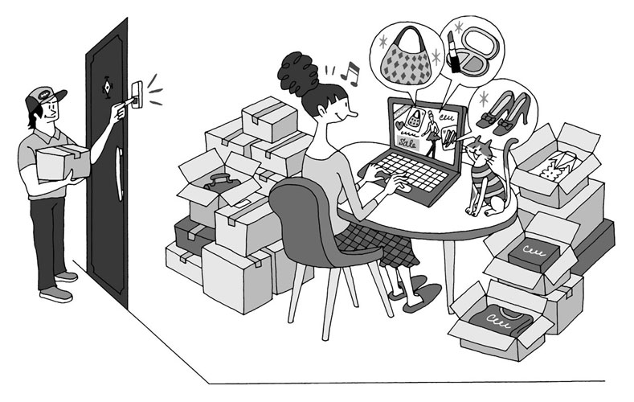
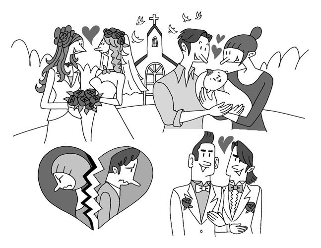
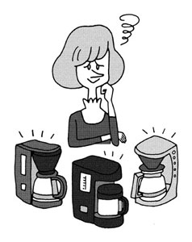
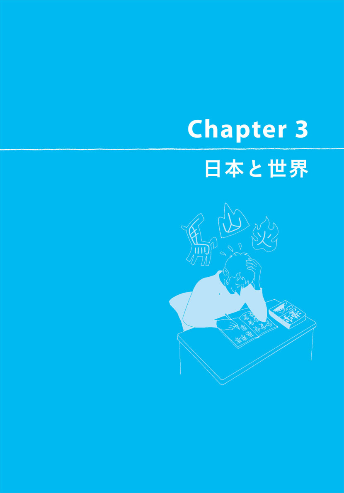
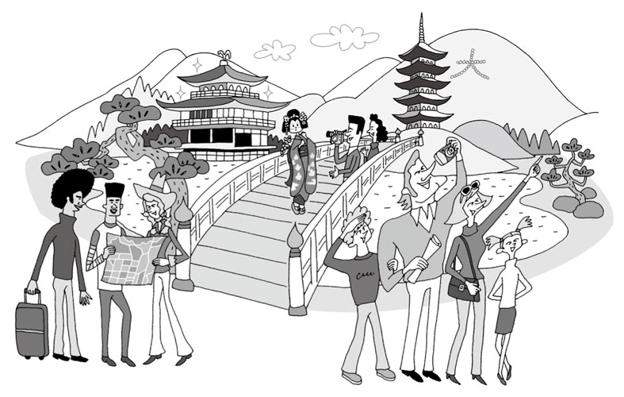
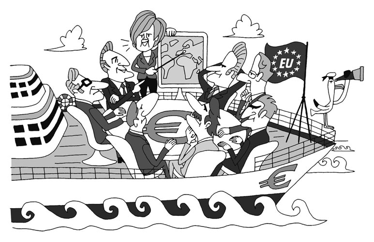

| [無料音声DL付]生英語で聞く外国人の本音クロストーク | |
| アルク英語出版編集部 | |
| (2013) | |
参照項目から元の箇所に戻るには、お使いのビューワーの仕様に従ってください。または一旦目次を表示し、戻りたい箇所の近くの見出しをタップして戻ってください。
は じ め に
世界10カ国から来た15人のスピーカーが
「日本と世界」を英語で本音トーク！
英語学習において、普段私たちが耳にする英語の多くはアメリカ英語です。ネイティブスピーカーの英語といえば、アメリカ英語をイメージする人も多いかもしれません。けれども実際は、英語を公用語としている国はたくさんあります。アメリカの他にも、イギリス、カナダ、オーストラリア、さらにはシンガポールやインド、カリブ海諸国など、世界のいろいろな国で、その国特有のなまりとともに英語が話されています。
そして英語を公用語としない日本をはじめとする国々でも、非ネイティブスピーカー同士が英語でやりとりする場面は珍しくなくなりました。グローバル化が進む中、さまざまな国の英語を耳にする機会は、今後もますます増えていくことでしょう。
本書は、世界10カ国から来た日本在住の外国人の、台本なしのトークを20本収録しています。世界各国の人々が、日本の文化や習慣を日々どのように感じているか、そして世界をどのように見ているかを知ることは、私たちにとって新鮮に映ることは間違いありません。
１本のトピックに登場するスピーカーは３人。話題を振る、やんわりと否定する、同意する、話を変えるなど、複数の話者ならではの会話のテクニックを随所に聞くことができるでしょう。
さあ、あなたも、本書で話されるグローバルな「雑談」に耳を傾け、多文化間で物怖じしない英語力と国際感覚を身に付けましょう！
※本書は、アルクのNo.1通信講座『ヒアリングマラソン』の人気コーナー『今月の本音トーク』に2009年～2013年にかけて掲載されたものの中から20本を厳選し、再編集したものです。
※多様な話者による生の会話を素材にしているため、文法、語法、発音が標準から外れている場合があります。
Contents
本書に登場するスピーカーの紹介
本書に登場する各国のスピーカーと発音の特徴を紹介しています。リスニングの参考にしてください。
（➡ の番号はトピック番号を表しています。話す速度は、遅め★、普通★★、速め★★★の3段階で表しています）
発音解説：原 功（中央大学非常勤講師）

アイルランド
Tony Tobin
トニー（翻訳者・大学講師）
➡ 7-9, 11, 14-16, 19
［速さ：★★★］ 話者の特徴として、文の強弱リズムの変化は大きくないものの、発音は明瞭で聞き取りやすい。アイルランドの英語の発音の特徴としては、theirやmoreなどの[r]を発音する人が多く、二重母音が長母音になりnameを「ネイム」ではなく「ネーム」と発音するなどといったものがある。
イギリス
Julian Ryall
ジュリアン（ジャーナリスト）
➡ 5
［速さ：★★★］ 話者の特徴として、文の強弱リズムの変化が小さく、スピーカーの中で話すスピードが一番速いので聞き取りの難易度は高め。イギリスの英語の発音の特徴には、moreを「モー」などと[r]を発音しない、butterなど母音の間の[t]をはっきり発音するなどがある。
イタリア
Shimona Stanzani Pini
シモーナ（翻訳者）
➡ 2, 4, 7, 10, 12, 13, 16
Antonio Russo
アントニオ（エンジニア）
➡ 11, 20
［速さ：シモーナ ★、アントニオ ★］ アントニオはシモーナに比べ文の強弱リズムの変化が大きく聞き取りやすい。イタリアの英語の発音の特徴としては、harmonizationなどの[h]を発音しない、partyやforなどの[r]を発音するなどがある。

ドイツ
Martin Koelling
マーティン（ジャーナリスト）
➡ 6, 17
［速さ：★★］ 話者の発音は、文の強弱リズムの変化が大きく聞き取りやすい。ドイツの英語の発音の特徴としては、単語の末尾が弱くなることがあり、fathersが「ファーザース」、ofが「オフ」などと発音したりする。ほかにthinkが「スィンク」となり[θ]の音を[s]のようにも発音する傾向がある。
シンガポール
Carol Pang
キャロル（大学院研究生）
➡ 18
［速さ：★★］ 話者の発音は、文の強弱リズムの変化が小さくやや単調に聞こえることも。シンガポールの英語の発音の特徴には、-d、-t、-gなど単語の終わりの子音を発音しない、importsが「インポツ」と長母音と短母音がほぼ同じ長さになる、aboutが「アバッ」と二重母音も短母音化することなどがある。
スリランカ
Suvendrini Kakuchi
スーヴェンドリーニ（ジャーナリスト）
➡ 4-6, 8, 9, 13, 14, 17, 19
［速さ：★★］ 話者の特徴として、文の強弱リズムの変化は小さいものの、明瞭な発音で聞き取りやすい。スリランカの英語の発音の特徴としては、[r]を発音しない点、thinkを「ティンク」と[θ]を舌を歯茎にしっかり付けて発音している点が挙げられる。
アメリカ
Ryan LaRosa
ライアン（英語講師）
➡ 2, 8, 10, 12, 13
Katrina Smith
カトリーナ（英語講師）
➡ 9, 15
Mark Goldsmith
マーク（新聞編集者）
➡ 18
［速さ：ライアン ★★★、カトリーナ ★、マーク ★★］ 話者の3人とも、文の強弱リズムの変化が大きく聞き取りやすい。カトリーナは-d、-t、-gなどアメリカ英語では脱落しやすい語末の子音もはっきり発音している。アメリカの英語の発音の特徴には、 [r]を発音する点、a lot ofが「アロロオブ」になるなど母音の間の[t]の音が変わる点などがある。
香港（中国）
Jolie Chow
ジョリー（企業の海外営業担当）
➡ 1, 3
［速さ：★★★］ 話者の発音は明瞭で聞き取りやすいが、文の強弱リズムにやや欠ける点も。香港（中国）の英語の発音の特徴としては、doesn'tが「ダズン」となるなど、-d、-t、-g など単語の終わりの子音を発音しない点、actuallyが「アチュアリー」となるなど、子音[k]が脱落する点などが挙げられる。
カナダ
Cheryl Meyers
シェリル（新聞編集者）
➡ 1, 3, 6, 17, 18, 20
［速さ：★★★］ 話者の発音は、文の強弱の変化が大きく聞き取りやすい。カナダの英語の発音の特徴としては、dayを「デイ」ではなく「デー」と二重母音を長母音で発音する点、thanが「ダン」になるなど[ð]を舌を歯茎にしっかり付けて発音する点などが挙げられる。
オーストラリア
Sean Miyaguchi
ショーン（ジャーナリスト）
➡ 1, 2, 4, 5, 7, 10-12, 14, 16, 19, 20
Justin Norrie
ジャスティン（新聞記者）
➡ 3
Hayley McLaren
ヘイリー（大学院生）
➡ 15
［速さ：ショーン ★★、ジャスティン ★★、ヘイリー ★★］ ショーンは3人の中で一番聞き取りやすい。オーストラリアの英語の発音の特徴として、payを「パイ」、occasionを「オカイジョン」とaの音を口をやや開きぎみに発音する人が多い。ほかに[r]を発音しない、anotherが「アナダー」になるなど[ð]を舌を歯茎にしっかり付けて発音する傾向がある。
＊各国の発音の特徴には、個人差があります。
How to Use
本書の構成と使い方
本書と音声トラックには、世界10カ国から来たスピーカーのフリートークが20本収録されています。
興味のあるトピックから聞いても構いません。
1つのトピックは、以下の内容で構成されています。
音声を聞いて、クイズに答えよう
トピック
全部で20のトピックが収録されています。
トラック番号
本書の音声トラック番号を表しています。
1トピックにつき3つのトラックに分かれています。
スピーカー紹介
1トピックに3人のスピーカーが登場します。
いろいろな国の人たちの英語に触れるだけでなく、多様な考え方にも耳を傾けてみましょう。
【Quiz】
まずは何も見ずに音声を聞いて、クイズにチャレンジ。一度で理解できなければ、繰り返し聞いても構いません。次項の英文・訳・語注を見て概要を理解してから、答えを確認しましょう。内容の理解を深めよう
【英文スクリプト】
収録されている音声を書きおこしたものです。クイズの答えの手掛かりになる部分は下線で、次項の「コミュニケーションのヒント」に登場する表現はハイライトで表しています。また、英文中の数字は、語注の番号に対応しています。
【和訳例】
語注を見ただけでは理解できないときなど、内容理解の参考にしてください。
【語 注】
注意が必要な単語や表現には、そこで使われている意味の訳語を付けています。必要なものについては、★印で補足説明をしています。
クイズの答えとリスニングのポイントを確認しよう
【Quizの答えとリスニングのポイント】
クイズの答えと、その答えを聞き取るためのリスニングのポイントを解説しています。
ここもCHECK!
コミュニケーションのヒント
英文の中から、英語でのコミュニケーションを円滑にするための表現をピックアップして解説しています。会話を弾ませるためのヒントとしてぜひ活用してください。
無料ダウンロード音声について
本書に対応する音声は、すべて無料でダウンロードしていただけます。下記URLにアクセスし、『生英語で聞く 外国人の本音クロストーク 無料ダウンロード音声』を選択、フォームに必要事項をご記入の上送信いただくと、ダウンロードページURLのご案内メールが届きます。
まずはこちらへアクセス！
ALC Download Center
ダウンロードセンター
http://www.alc.co.jp/dl/
（2014年3月時点の情報。今後詳細が変更になる可能性があります）
ダウンロードした音声ファイルはiTunesなどの音声再生ソフトで取りこんでご利用ください。音声再生ソフトでのファイルの取り込み方法や携帯音楽プレーヤーでの利用方法については、ソフトやプレーヤーに付属するマニュアルでご確認ください。
取り込んだ音声ファイルは、音声再生ソフトで次のように表示されます。
出版社名（アーティスト名）：「ALC PRESS INC.」と表示。
書名（アルバム名）：『生英語で聞く 外国人の本音クロストーク』
ダウンロードした音声のトラック名は
[track01_時間を上手に活用しよう！]
のように表示されます。本書の該当のトラック番号とトラック名を確認して再生し、学習してください。
Chapter 1 Topics
1. 時間を上手に活用しよう！
早寝早起きがモットーの人、夜型の生活が習慣化している人......。同じ1日でも、時間の使い方は人それぞれです。そして時間といえば、近年はスケジュールを紙ではなくオンラインで管理する人も増えています。3人の会話を聞き、時間の使い方について考えてみましょう。
Speakers
カナダ
Cheryl（シェリル）
以前は紙の予定リストを使っていたけど、リストの作成と確認に時間を取られて非効率的と感じたわ。
オーストラリア
Sean（ショーン）
スケジュール管理をより確実にするために、最近は紙とオンラインの両方で管理しているんだ。
香港（中国）
Jolie（ジョリー）
あらかじめ細かく予定を決めるより、そのときの気分や成り行きに任せる方が性に合っているの。
Quiz
音声を聞いてクイズの答えに合うものをAとBから選ぼう！
Q1 DLTrack 01
ショーンは朝型人間、それとも夜型人間?
A 朝型人間
B 夜型人間
Q2 DLTrack 02
ジョリーは学生時代の就寝時間についてどのように話している？
A たまに夜更かしした
B いつも寝るのがすごく遅かった
Q3 DLTrack 03
ショーンがスケジュール帳を使い始めた理由は？
A 時々自分がうまく物事を片付けられないことに気付いたから
B 友人の誕生日を覚えておくため
Track 01
朝型人間、それとも夜型人間？
Cheryl: Sean, are you a①morning person or a②night owl?
Sean:③I'd④definitely sayI'm⑤more of a night owl than a morning person.
Cheryl:⑥By nature?
Sean:By nature. However, I've recently changed jobs from one where I was working from the afternoon to the evening, to one where I have to start very early in the morning.
Cheryl:⑦Oh dear.
Sean: So it has been⑧quite an⑨adjustment to my schedule, and I think my⑩body clock still wants to⑪stay up late at night, and I'm having to⑫try and train myself to go to bed earlier so I can get up earlier.Do you think you're naturally more of a, a⑬nighttime person?
Cheryl: Yeah, I prefer to, to,⑭like, my schedule now is perfect. I, I start work at about 1:30 in the afternoon and I finish around 9:30 at night. And I'm home. I⑮get to sleep about 1:00 and then I sl─wake up around 9:00 and, you know, it's all good schedule for my body, I think, now. Yeah.
訳
シェリル：ショーン、あなたは朝型の人、それとも夜更かし型？
ショーン：確実に言えるよ、朝型よりは夜型だってね。
シェリル：生まれつき？
ショーン：生まれつきだよ。ただ、最近仕事を変えたんだよ、午後から夜にかけてする仕事から、ずいぶん朝早くから始めなくちゃいけない仕事にね。
シェリル：あらまあ。
ショーン：だから、スケジュールを大きく修正しなきゃならなくて、僕の体内時計はまだ夜遅くまで起きていようとしてるみたいだから、頑張って早寝をする訓練をしなきゃいけないところなんだ、もっと早起きできるようにね。君は、自分がどっちかっていうと生まれつきの夜型人間だと思う？
シェリル：そうなのよ、望ましいのはそうね、今のスケジュールがちょうどいいのよ。私、午後１時半ぐらいに仕事を始めて夜９時半ぐらいに終わるの。で、帰宅するわけ。眠るのは１時ぐらいで、９時ごろに眠──起きるのよ、ほら、私の体にはちょうどいいスケジュールだと思うのよね、今のところ。ええ。
語注
①morning person 朝型人間、早起きの人
②night owl 夜型人間、夜更かしをする人
③I'd ★= I would
④definitely 絶対に、間違いなく
⑤more of ~ than ... ...というよりは～だ
⑥by nature 生まれつき、生来
⑦oh dear あらまあ ★共感などを表す相づち
⑧quite a ~ 実際に～、本当に～、並外れて～
⑨adjustment 調整、修正
⑩body clock 体内時計
⑪stay up 寝ずに起きている、夜更かしする
⑫try and do ～しようとする
⑬nighttime 夜間、夜間の
⑭like まあ、その ★つなぎの言葉としてよく使われる。ここでは話を一度切り、再開するのに使っている
⑮get to sleep 寝付く、眠る
Track 02
仕事を始めてからの変化
Sean:①What about you, Jolie?
Jolie: Well, actually, I don't think I'm either morning or night person. Mm, but if I have to choose one, then it, mm, I think it would be the night one.
Cheryl: Mm, so you,②occasionally, you stay up later.
Jolie: Yes. But, like,③ever since I started working ─ I started working two months ago, around ─ and, uh, I have to get up at④half 6 every morning, so I,⑤sort of, have to⑥force myself to go to bed early. I've gotten used to it, but, uh,when I was still a student,⑦I always go to bed really late. And, uh, yeah, I prefer, like, start even studying or doing whatever I want, like,⑧randomly watching TV drama or whatever, I do these things at night.
Cheryl: Yeah, I'm more awake after about 4 o'clock in the afternoon. I'm, my body just⑨picks up and I'm awake, I can⑩concentrate.
Jolie: Yeah, definitely.
訳
ショーン：君はどうだい、ジョリー？
ジョリー：そうね、実のところ私、朝型でも夜型でもないと思うの。うーん、でも、どちらか選ばなくちゃいけないとしたら、それは夜型ってことになるかしらね。
シェリル：ふーん、じゃあ、たまに夜更かしするのね。
ジョリー：そう。だけど、ほら、働くようになってから──２カ月ぐらい前から働いているんだけど──毎朝６時半に起きないといけないから、その、無理にでも早く寝るようにしなくちゃいけないの。もう慣れたけど、まだ学生だったころは、いつも寝るのがすごく遅かったわ。それに、そう、私、好きなのよね、勉強を始めるのでも、自分のしたいことを始めるのでも、テレビドラマや何かを適当に見るとかも、そういうことを夜にするのよね。
シェリル：そうね。私、午後４時ぐらいを過ぎてからの方がしっかり目が覚めるの。体の調子が上がってきて、目がさえて、集中できるのよ。
ジョリー：そうよね、確かに。

語注
Track 03
紙派？ オンライン派？ スケジュール管理
Cheryl: Did you use, like, a①to-do list or a②planner or anything like that? Have you ever tried that?
Sean: I have actually started using a③diary to try and④get better organized.
Cheryl: On paper?
Sean: On paper.
Cheryl: Ah.
Sean: Yeah. I mean, I think actually having what you have to do written down, that you can⑤physically see in front of you, is actually a good way of⑥making sure you⑦get through all of your⑧duties. AndI've started doing this because I found I'd sometimes have problems⑨getting things done. I would forget to do things and not⑩manage my time as⑪effectively as I, as I possibly could.
Cheryl: In the last few years, I've⑫gone to the⑬Google⑭online calendar, and I use their little online to-do list⑮and things.
Jolie: I, I prefer, like, pen and paper, like, uh, having a list right in front of my eyes. I mean, I used to have a schedule that I⑯bring around with me⑰all the time, and I'll make my list on the, when, when I'm on the train and things like that. And I still do it sometimes, but it's more for shopping list, food shopping or ...
Cheryl: Ha-ha. Or birthday, whose birthdays are⑱coming up, or, you know.
Jolie: Yeah, things like that.
訳
シェリル：あなたたちは、予定リストとかスケジュール帳とかそういったものを使ってた？ 使ってみたことはある？
ショーン：実は、スケジュール帳を使い始めたところなんだよ、もっときちんと予定を整理するためにね。
シェリル：紙の？
ショーン：紙の。
シェリル：へえ。
ショーン：うん。つまり、やるべきことを実際に書き留めておくのは、物理的に目の前で見られるようにね、実際、確実に仕事を全部片付けるいい方法なんだよ。これを始めたのも、時々自分がうまく物事を片付けられないことに気付いたからなんだ。物事をし忘れたりして、本来できるほど効率よく時間管理ができなかったんだ。
シェリル：ここ何年か、私はグーグルのオンライン・カレンダーにアクセスしてるわ。そこのちょっとした予定リストや何かを使っているの。
ジョリー：私は、ペンと紙の方が、自分の目の前にリストを置いておく方が好きね。というのも、以前はいつでも持ち歩けるようなスケジュール帳を持っていたのよ、電車や何かに乗っているときでも予定を書き込むような。それは今でも時々するんだけど、どちらかというと買い物リストね、食材の買い物とか......
シェリル：ハハハ。でなければ誕生日ね、誰の誕生日がもうすぐか、とかね。
ジョリー：そう、そんな感じのことをね。
語注
①to-do list やるべきことのリスト
②planner 計画表、スケジュール帳
③diary 〈イギリス英語〉スケジュール帳
④get organized 準備を整える、頭を整理する
⑤physically 物理的に、物質的に
⑥make sure (that) ~ ～であることを確認する
⑦get through ~ ～を仕上げる、～を終わらせる
⑧duty 務め、任務
⑨get ~ done ～を終わらせる、～をやってしまう
⑩manage ～を管理する
⑪effectively 効率的に
⑫go to ~ ～（ウェブサイト）にアクセスする
⑬Google ★大手のインターネット検索エンジン
⑭online オンラインの、インターネット上の
⑮~ and things ～とかそういったもの、～など
⑯bring ★正しくはbrought。また、tookを用いる方が標準的。take ~ around with oneで 「～を持ち歩く、～をどこへでも携帯する」
⑰all the time いつも、ずっと
⑱come up （出来事、予定などが）近づいてくる
1. 時間を上手に活用しよう！
Answers
Quizの答えとリスニングのポイント
Q1
答え B 夜型人間
night owl は、nighttime person、night person とも言い換えられる。
Q2
答え B いつも寝るのがすごく遅かった
when I was still a student（まだ学生だったころは）が手掛かり。Aは2カ月前くらいに社会人になってからのこと。
Q3
答え A 時々自分がうまく物事を片付けられないことに気付いたから
理由を表す because が聞き取りのカギ。doing this は、「Track 03 紙派？ オンライン派？ スケジュール管理」のusing a diaryを言い換えている。
by natureを"自然に"使いこなそう
ショーンの「自分は夜型だ」というコメントを受けて、シェリルはBy nature?（生まれつき？）と聞いています（「Track 01 朝型人間、それとも夜型人間？」）。このby natureという表現には、「生来」という意味があります。つまり、自分であえて夜型の習慣を作ったのではなく、自然とそうなったことを表しているわけです。
一方、by natureの反対の意味に当たる表現がby nurture（はぐくまれて）です。nurtureは「養育、養成」という意味。先天的なものについて表すのがby natureだとすると、by nurtureは生まれてからの教育環境によって作られたものを指します。人の才能について語るとき、By nature or by nurture?（天性のもの、それとも教育の成果？）という表現を使うことがあります。
また同Trackでは、ショーンがシェリルにDo you think you're naturally more of a nighttime person?（君は、自分がどっちかっていうと生まれつきの夜型人間だと思う？）と聞いています。naturally（自然に）もby natureと同様、「あえて努力しなくても自然とそうなった」ことを意味する表現。自分の癖や習慣を説明するときなど、会話でもよく使われます。例えば、I'm fond of cats by nature.（私は生来の猫好きだ）は、I'm naturally a cat person.と言い換えることができます。
解説：井上久美（異文化間コミュニケーター）
2. 便利!? インターネットでお買い物
インターネットの普及により、買い物の仕方も様変わりしました。家に居ながらにして注文や受け取りができるオンラインショッピングを頻繁に利用している人も多いのでは？ 実店舗での買い物とオンラインショッピングとでは、どんな違いがあるのでしょうか。3人の「買い物考」を聞いてみましょう。

Speakers
オーストラリア
Sean（ショーン）
ネットオークションを利用するときは、利用者の評価が高い出品者から買うようにしているよ。
アメリカ
Ryan（ライアン）
実店舗で買うことの難点は、レジで行列に並ぶことや、重い物を持ち帰らなければならないことだね。
イタリア
Simona（シモーナ）
本を買うなら、表紙の手触りを確かめたり、中身をパラパラめくったりできる実店舗の方が好きだわ。
Quiz
音声を聞いてクイズの答えに合うものをAとBから選ぼう！
Q1 DLTrack 04
イタリアやイングランドで、シモーナはどんな物をネットで買っていた？
A ベビー用品
B 食料雑貨
Q2 DLTrack 05
ライアンは、オンラインショッピングの難点は何だと話している？
A 商品を手に取ったり、試したりできないこと
B 簡単に買えるので、不要な物まで買ってしまうこと
Q3 DLTrack 06
ショーンによると、オーストラリアでオンラインショッピングが急成長している理由は？
A 為替レートのおかげで、オーストラリア人は得ができるから
B 携帯端末を使って手軽に買い物ができるようになったから
Track 04
欲しい物がすぐ買える
オンラインショッピングの魅力
Sean: Ryan, do you shop①online?
Ryan: Recently, I've been, uh, doing some shopping, uh, for baby goods. We've got a②nine-month-old, and I found it's very③handy for④diapers and, uh,⑤grocery shopping.⑥Prior to that, I'd basically just done shopping for CDs and books and small things like that.
Sean:What about you, Simona?
Simona: Um,when I was in Italy and in England, I used to actually do my grocery shopping online at⑦Tesco and, uh, and other Italian stores.
Ryan: I, I find that, for me, uh, when I'm shopping online, it's generally something I need. If I've found that, uh, there's something I need⑧urgently, I'll just go online and get it.
Simona: Yeah, it's actually, uh, very useful when you're looking for something⑨specific that's probably not that easy to find. So it's easier just, you know, to⑩do a search online and you, "Oh, oh, they're selling it, so I'm just⑪gonna spend, uh, $4 or $5 to have it sent to me instead of, uh, going around five or six different shops and, and not finding it."
訳
ショーン：ライアン、君はネットで買い物する？
ライアン：最近は、ベビー用品の買い物をしているよ。うちには９カ月の赤ん坊がいるんだけど、おむつだとか食料品の買い物にすごく便利だって分かったんだ。それまでは基本的に、CDだとか本だとか、そういうちょっとした物しか買ったことがなかったんだけど。
ショーン：君はどう、シモーナ？
シモーナ：イタリアやイングランドに住んでたころは、実際、テスコだとかイタリアの店から、ネットで食料雑貨の買い物をしていたわ。
ライアン：気付いてみたら、僕の場合、ネットで買い物をするのは、たいてい必要な物なんだ。もし何か緊急に必要な物があることが分かったら、すぐネットにアクセスしてそれを手に入れるんだよ。
シモーナ：そうね、実際、すごく便利よね、そんなに簡単には見つからなさそうな特定の物を探してるときには。つまり簡単だものね、ただネットで検索して、「ああ、ここで売ってるから、（送料に）４ドルか５ドル払って送ってもらおう、５軒も６軒もいろんな店を歩き回って、結局見つけられないっていうのはやめて」って。
語注
Track 05
オンラインショッピングの落とし穴
Sean: I like online shopping for certain things, such as plane tickets and hotel①bookings, because you can compare the prices from a lot of different places that are selling. And it's something that makes it a lot easier to, uh, buy just using your credit card ...
Ryan: Right, right.
Sean: ... rather than having to,②say, for example, go to a③travel agent and then④rely on them to do all of the searching for you. So, things like that, where you're doing a lot of⑤comparisons between different⑥retailers, I think online makes it much easier.
Ryan: A─and you⑦have access to a lot of product reviews. Uh, on, you know,the⑧drawback is you can't hold the product,⑨handle the product or, or test it⑩in any way.
Sean: That's why I don't⑪tend to buy⑫clothing online so much, because if you haven't⑬tried it on, you're not sure exactly how it's going to look on you.
Simona: Yeah, or like simple things, like T-shirts, you know. They're kind of, like, all the same so, um, I generally buy, like, anime and manga T-shirts online, ha-ha.
訳
ショーン：航空券とかホテルの予約みたいなある種の物は、ネットで買うのが好きだな。だって、いろいろな販売店の値段を比較できるからね。それに、すごく簡単になるんだよ、ただクレジットカードを使って買えば......
ライアン：そう、そう。
ショーン：......例えば、ほら、旅行代理店に行って、全部店の人にお任せで自分の代わりに調べてもらわなきゃいけないよりもね。だから、いろいろな販売業者の間であれこれ比較するような、そういった物は、ネットだとずっと簡単だと思う。
ライアン：それに、たくさんの商品レビューも活用できるよね。まあ、難点は、商品を手に取って扱ってみたり、何らかの方法で試してみたりすることができないことだけど。
ショーン：だから僕は、ネットではあまり服を買わないんだ。だって、試着してみなかったら、自分が着たときにどう見えるか正確には分からないからね。
シモーナ：そうね。あるいは、Tシャツみたいなシンプルな物だったらね、ほら。どれも似たような感じだから、私なんてだいたいいつも、アニメとか漫画のTシャツをネットで買うわよ、ハハハ。
語注
Track 06
苦戦する実店舗
Sean:In Australia, online shopping has①recently really②taken off because of the③exchange rates,④particularly⑤with regard to the U.S. dollar. And now Australians are able to⑥get much better value for money buying from U.S. online retailers. And as a result, a lot of⑦bricks-and-mortar stores in Australia are, are⑧having a very hard time⑨competing with the online retailers.
Ryan: Have you seen a⑩noticeable⑪impact, do you think, um, in Tokyo?
Sean: Well, I think, for example, uh,⑫HMV in Shibuya, it⑬closed down, and I remember reading an article saying it was directly related to, uh,⑭declining sales, which was related to online retailing⑮taking up much bigger⑯sector of the, of the market.
Simona: Yes, um, the⑰minor bookstore chains, uh, they, they're closing⑱here and there.
Ryan: Yeah, I think⑲it's had a big⑳effect on some industries, um, and probably all, you know, in smaller areas or smaller towns. But around Tokyo in general, I mean, it seems like every weekend a new big shopping center is opening up somewhere. So, for the most part, I think the, the effect will be㉑limited.
訳
ショーン：オーストラリアでは、最近、オンラインショッピングが、特にアメリカドルとの為替レートのおかげで急成長してるんだよ。今、オーストラリア人はアメリカのオンラインショップで買い物をするとすごく得ができるんだ。その結果、オーストラリアにあるたくさんの従来型の店舗が、オンラインショップとの競争で大苦戦しているんだよ。
ライアン：東京では、はっきりした影響を目にしたことがあると思う？
ショーン：そうだな、僕が思うのは、例えば、渋谷のHMV、あそこは店を閉めたんだけど、記事を読んだ記憶があって、それによると、直接の原因は売上の落ち込みで、それはオンライン販売が市場でずっと大きな部門を占めるようになっていることに関係しているんだって。
シモーナ：そうね、規模の小さい書店チェーンも、あちこちで店を閉めているわ。
ライアン：うん、一部の業界は大きな影響を受けてきたと思うし、たぶん全ての業界（が影響を受けた）だろうね、小さな地域や小さな町では。でも東京辺りでは全般に、ほら、毎週末のように新しい大型ショッピングセンターがどこかしらでオープンしているみたいだよ。だから、大部分は、影響は限られるんじゃないかな。
語注
①recently 最近 ★このトピックは2012年に収録された
②take off 急上昇する、急増する
③exchange rate 為替レート
④particularly 特に、とりわけ
⑤with regard to ~ ～に関して
⑥get good value for money 値段の割に良い物を手に入れる
⑦bricks-and-mortar store 実店舗 ★オンラインショップと対比して使われる言い方。brickは「れんが」、mortarは「モルタル」
⑧have a hard time doing ～するのに悪戦苦闘する
⑨compete with ~ ～と競争する
⑩noticeable 目立つ、顕著な
⑪impact 影響
⑫HMV ★イギリスを本拠地とするレコード販売店グループ。1990年に日本に進出し全国展開したが、2009年から2010年にかけて渋谷の旗艦店を含む多数の店舗を閉鎖した
⑬close down （店などが）閉店する、閉鎖される
⑭declining 下降する、低下している
⑮take up ~ ～を占める
⑯sector 部門、分野
⑰minor より小さい、少数派の
⑱here and there あちこちで
⑲it's ★= it has
⑳effect 結果、影響
㉑limited 限られた
2. 便利!? インターネットでお買い物
Answers
Quizの答えとリスニングのポイント
Q1
答え B 食料雑貨
Italy、England の国名が聞き取りのカギ。do grocery shopping で「食料雑貨の買い物をする」。Aはライアンが購入している物。
Q2
答え A 商品を手に取ったり、試したりできないこと
drawback の意味が分からなくても、続く is (that) you can't ~ in any way から答えを導くことができる。drawback （難点）の反対は advantage （利点）。
Q3
答え A 為替レートのおかげで、オーストラリア人は得ができるから
「苦戦する実店舗」の最初のショーンの発言は、米ドルに対する豪ドル高を示唆している。
相手に質問して意見を尋ねる英語
冒頭で、ショーンの問いに答えてライアンが話した後、ショーンは自分の意見を言う前に、シモーナの意見を尋ねています。その際に使われた英語が、「Track 04 欲しい物がすぐ買えるオンラインショッピングの魅力」のWhat about you, Simona?（君はどう、シモーナ？）です。自分の意見を言うことも大切ですが、このような相手の意見を引き出す表現を覚えておくと、会話が弾みます。まずは相手に話してもらい、その内容にじっくりと耳を傾けた上で、自分の意見を言う方法も身に付けておくと便利です。
ほかにも、相手の意見を尋ねるときに使える表現を覚えておきましょう。
・What do you think (about that)?（［それについて］君はどう思う？）
・How do you feel (about that)?（［それについて］君はどう思う／感じる？）
「あなたはどう思いますか？」と尋ねるとき、How do you think?と言う人がいます。文脈から意味が通じる場合も多いですが、正しくはWhat do you think?です。What do you think?は、直訳すると「何を考えますか？」で、相手が何を考えているか（どう思うか）を尋ねる質問です。一方、How do you think?は「どのようにして考えますか？」と、思考方法を尋ねる質問になってしまいます。これに対して、I think with my head.（頭を使って考えます）と返すジョークもあります。
解説：井上久美
3. 日本の弁当文化と各国ランチ事情
日本では最近、学校や職場に弁当を持参する人が増えているとか。弁当作りを楽しむ男性も増えているようで、マスコミが彼らを「弁当男子」と名付けるほど。一方、「コンビニ弁当」や「駅弁」など、市販の弁当も充実している日本。日本や世界の弁当文化について考えてみましょう。
Speakers
カナダ
Cheryl（シェリル）
普段は夫が料理担当で、お弁当も作ってくれるの。美しいお弁当なんて、自分ではとても作れそうにないわ。
香港（中国）
Jolie（ジョリー）
種類が多いだけでなく盛り付けも美しい日本のお弁当に感激。お弁当はその国の文化を反映すると思うの。
オーストラリア
Justin（ジャスティン）
日本の男性の中には自分で弁当を作る人がいるって聞いて、すごいと思ったよ。
Quiz
音声を聞いてクイズの答えに合うものをAとBから選ぼう！
Q1 DLTrack 07
ジョリーが弁当を好きな理由は？
A 健康的で、冷めてもおいしいから
B どこでも好きな場所で食べられるから
Q2 DLTrack 08
シェリルが特に好きな弁当は何で、それについて何と話している？
A 駅弁。中身が楽しみ
B コンビニ弁当。不況なので節約したい
Q3 DLTrack 09
ジャスティンが子供のころ学校に持っていっていた弁当は、どんなものだった？
A 魔法瓶に入れたスープとサンドイッチやクッキー
B 茶色の紙袋に入れたサンドイッチと果物１個
Track 07
ホストマザーの愛情弁当
Cheryl: Jolie, did, did you have, uh, abento for lunch yesterday like you usually do?
Jolie: Yes, I①do, actually. I, I haveobento every day, and②obviously, I had it yesterday③as well.
Cheryl: Hmm. Do you like it?
Jolie: Yeah,I loveobento. I mean, it's really healthy. I mean, even though it's cold, it's, it's really delicious.
Justin: So, you always make your ownbento? You don't buy it from the④konbini or from the supermarket?
Jolie: Oh, actually, I don't make it myself.
Justin: Really?
Jolie: Um, yeah, actually, I'm living with, um, a Japanese family, and my⑤host mom make it for, m─makes it for me every day.
Cheryl: Does she ask you what you want in it?
Jolie: She doesn't, she just makes it, but I just like everything that she makes.
Cheryl: Oh, that's good. She's a good⑥cook then.
Jolie: Yeah, she is.
訳
シェリル：ジョリー、あなたは昨日もいつも通り、お昼にお弁当を食べたの？
ジョリー：ええ、食べたわ、実際。私、毎日お弁当を食べているし、もちろん昨日も食べたわ。
シェリル：ふーん。お弁当は好き？
ジョリー：ええ、お弁当は大好き。だって、すごく健康的じゃない。ほら、たとえ冷めてもすごくおいしいし。
ジャスティン：じゃあ、いつも自分で弁当を作っているの？ コンビニとかスーパーで買うんじゃなくて？
ジョリー：ああ、実を言うと自分で作ってるんじゃないのよ。
ジャスティン：そうなの？
ジョリー：ええ、そう、実は私、日本人家族と一緒に暮らしていて、ホストマザーが毎日私のために作ってくれるのよ。
シェリル：彼女は、お弁当に何を入れてほしいかあなたに聞くの？
ジョリー：聞かないわ。ただ作ってくれるの。でも彼女が作ってくれるものは何でも好きよ。
シェリル：あら、それはいいわね。じゃあ彼女は料理上手なのね。
ジョリー：ええ、そうよ。
語注
Track 08
増える日本の「弁当男子」
Justin: I've, I've read recently that lots of,①lots more Japanese men, businessmen, have been taking②homemadebento to the office because, uh,③times have beena bit④tough and the⑤finances have been, um,perhaps not as⑥healthy as they were before the⑦recession⑧hit⑨last year.
Cheryl: They're⑩tightening their belts, ha-ha.
Justin: Mm. So,⑪it's become⑫yet another, uh,⑬fad.
Cheryl: Yeah, a little⑭boom, a little Japanesebento boom. I kind of likebentos, uh, I,especially the, the train ones, when I'm on, on a trip, I like to get theeki-ben and see what's in it, you know.
Justin: Um, although I, I⑮will⑯occasionally buybento from the, thekonbini, but generally, I'll, I'll look for something else.⑰There's something aboutkonbinibento thatI find just a little bit⑱uninspiring. Um, it doesn't really⑲catch my imagination.
訳
ジャスティン：最近読んだんだけど、会社に手作りの弁当を持っていく日本人男性、ビジネスマンがぐんと増えているんだって。というのも、少々厳しいご時世だし、去年、不況に見舞われる以前と比べると、懐具合もおそらくあまり健全とは言えないだろうから。
シェリル：財布のひもを締めてるわけね、ハハハ。
ジャスティン：うん。それで、それがまた一つの流行になってるんだ。
シェリル：そう、ちょっとしたブームね、日本のちょっとした弁当ブーム。私、割と弁当は好きなのよ、特に電車のが。旅行に出ると、駅弁を買って中に何が入っているか見るのが楽しみなのよね。
ジャスティン：うーん、僕は時々コンビニで弁当を買うことがあるけど、たいていは何かほかの物を探すな。コンビニ弁当にはなんとなく、僕にとってはちょっとピンとこないところがあるんだよ。あまり心を引かれないんだよね。
語注
①lots 大いに、ずっと ★比較級を強める副詞
②homemade 自家製の、手作りの
③times 時代、時世
④tough 厳しい、困難な
⑤finances 収入状況、懐具合
⑥healthy 健全な、堅調な
⑦recession 景気後退、不況
⑧hit 襲う、起こる
⑨last year ★このトピックは2009年に収録された。ここで「去年」と言っているのは、リーマン・ショックの起きた2008年のこと
⑩tighten one's belt 倹約する、財布のひもを固くする
⑪it's ★= it has
⑫yet なおまた、さらに
⑬fad （一時的な）流行
⑭boom ブーム、流行
⑮will ★ここでは、未来ではなく現在の行動傾向を表す用法
⑯occasionally 時々、折に触れて
⑰there's something about ~ that ... ～にはなんとなく...なところがある
⑱uninspiring 刺激のない、感興をそそらない
⑲catch one's imagination ～（人）の心をとらえる
Track 09
子供のころのお弁当
Cheryl: Did you take a①lunch box when you were a kid?
Justin: Yeah, we took lunch boxes to school, but it, it wasn't, I mean, the, the sort of food that we would put in the lunch box was quite different to ...
Cheryl: Yeah, a sandwich, an apple.
Justin:It would just be a sandwich, yeah, and, and②a piece of fruit. And generally,③we'd just throw it in a brown paper bag④as opposed to a lunch box.
Cheryl: Oh, yeah. Oh, I had a─I had a little steel lunch box. It had a little space for a⑤thermos that⑥went in and, uh, soup in this thermos and a sandwich and cookies⑦or something. Yeah. What was it like in Hong Kong when you were growing up?
Jolie: Actually, we don't have lunch boxes,⑧either. When I was in Hong Kong in⑨primary school, um, school finishes at⑩half 12.
Cheryl: Oh. So you'd go home for lunch.
Jolie: I'd go home for lunch.
Cheryl: Oh, how nice.
Jolie: Yeah, uh, but well,⑪nowadays, it changed. It's cha─it has changed. I mean, in Hong Kong, we don't really have thebento culture, either. People tend to⑫eat out, and people don't really enjoy cooking as much as Japanese people,⑬I would say.
訳
シェリル：あなたたちは子供のころ、弁当を持っていった？
ジャスティン：うん、学校に弁当を持っていったよ。だけど違うんだよな、つまり、弁当に入れていた食べ物の種類はだいぶ違っていて......
シェリル：そうね、サンドイッチとか、りんごとか。
ジャスティン：サンドイッチと、そう、果物１個だけだったりしたね。それも普通は、弁当箱じゃなくて茶色の紙袋に放り込むだけだったな。
シェリル：ええ。ああ、私は小さなスチール製のお弁当箱を持っていたわよ。セットになった魔法瓶の入るちょっとしたスペースがあって、その魔法瓶に入れたスープと、サンドイッチやクッキーや何かだったわ。そう。あなたが子供のころの香港ではどんな風だった？
ジョリー：実を言うと、私たちも弁当箱は持たないのよ。私が香港で小学生だったとき、学校は12時半で終わりだったの。
シェリル：あら。じゃあ、お昼は家に帰っていたのね。
ジョリー：お昼は家に帰っていたのよ。
シェリル：まあ、それはいいわね。
ジョリー：そうなの。でも、そうね、このごろは事情が変わったわ。というか、香港にもあまり弁当文化っていうものがないのよね。みんな外食をすることが多くて、私が思うに、日本の人たちほど料理が好きじゃないのよ。
語注
①lunch box ★「弁当箱」と「弁当」、どちらの意味でも使われる
②a piece of fruit 果物１個 ★fruitは集合名詞なので、「１個」と数えるときはこのようにa piece ofを用いる
③we'd ★= we would
④as opposed to ~ ～とは対照的に、～とは違って
⑤thermos 魔法瓶、真空断熱容器
⑥go in ぴったり入る、サイズが合う
⑦~ or something ～か何か
⑧either ★本来は不要だが、ジャスティンの「弁当箱ではなかった（紙袋だった）」という発言に同調したものと思われる
⑨primary school 〈イギリス英語〉小学校
⑩half ~ 〈イギリスの口語〉～時半 ★= half past ~
⑪nowadays 最近では、近ごろは
⑫eat out 外食する
⑬I would say 私の意見では、私が思うに
3. 日本の弁当文化と各国ランチ事情
Answers
Quizの答えとリスニングのポイント
Q1
答え A 健康的で、冷めてもおいしいから
I loveobento. の直後の I mean から、弁当が好きな理由を説明している。
Q2
答え A 駅弁。中身が楽しみ
especially の後の the train ones を聞き取る（ones はbentosのこと）。駅弁についての説明は when 以下に続いている。what's in it の it は theeki-ben のこと。
Q3
答え B 茶色の紙袋に入れたサンドイッチと果物１個
a sandwich と a piece of fruit を聞き取ること。And generally の後で紙袋に入れていたことを説明している。Aはシェリルが子供のころ持っていった弁当。
露骨な言い方を避ける柔らかな否定表現
ディスカッションのかじ取り役であるジャスティンは、やんわりとした否定表現が上手。今回は、ジャスティンの発言から、参考になる否定表現をいくつか見てみましょう。
「Track 08 増える日本の「弁当男子」」に a bit tough（少々厳しい）とありますが、このa bitは「ちょっと」の意味。実際には「かなり」厳しくても、あえてこの表現を使うことにより、深刻な響きを軽減できます。
続いて、～ perhaps not as healthy as they were before the recession hit（不況に見舞われる以前と比べると、あまり健全とは言えないだろう）と言っています。景気が悪化していることに関して、badやterribleといったネガティブな表現を使う代わりに、healthy（健全な）というポジティブな言葉を用い、これを否定して「健全ではない」と表現。さらにperhaps（あるいは～、～かもしれない）を付けることにより、断定を避ける表現となっています。
その後、I find just a little bit uninspiring（ちょっとピンとこないところがある）と表現。un + inspiring のように、ポジティブな意味を持つ単語に接頭語 un-を付けると、柔らかな否定になります。
解説：井上久美
4. パートナーとの出会い方
恋人や結婚相手を探す人にとって、いかにしてパートナーと出会うかは、世界共通の関心事なのかもしれません。家族や友人の紹介で、街で、職場で、オンラインで......。出会いの方法はさまざまですが、それぞれどんな特徴があるのでしょうか。３人が、自身や周囲の体験を交えて話します。
Speakers
スリランカ
Suvendrini（スーヴェンドリーニ）
職場での出会いは、日本では一般的だと思うわ。私も日本人の夫とは職場で出会ったのよ。
イタリア
Simona（シモーナ）
インターネットでの出会いは相手がどんな人か分からず不安に感じるから、まだ試したことはないわ。
オーストラリア
Sean（ショーン）
現代の若者はネット利用時間が長いから、ネットでの出会いにもあまり抵抗がないんじゃないかな。
Quiz
音声を聞いてクイズの答えに合うものをAとBから選ぼう！
Q1 DLTrack 10
ショーンは友達の紹介でパートナーに出会うことのメリットは何だと話している？
A 同じ交友グループなら興味を共有できる
B 相手のことを少しは知ることができる
Q2 DLTrack 11
スーヴェンドリーニによると、スリランカの伝統では誰が結婚相手を見つける？
A 親
B 自分
Q3 DLTrack 12
シモーナによると、イタリアでパートナー探しをしやすい理由は？
A 独身者のためのパーティーがたくさんあるから
B イタリア人は、より社交性が高いから
Track 10
パートナーとの出会いの場
Sean: Um, I've been dating my girlfriend for a couple of years now, and we met through friends. We knew a number of①mutual friends in our②social circles.
Suvendrini: So, meeting each other with friends is,③kind of, the usual way you meet with, uh, partners in Australia?
Sean: I think a lot of people I know have met through friends, and I think maybeit's a good way to meet someone because you are able to find out a little bit about the person, and ...
Suvendrini: And also if it's the same circle, I guess it's same interests④and things and that's so important when you have a partner. I'm married to a Japanese, and I met my husband actually at work, which I think is more, uh,⑤regular here in Japan. I know that a lot of my friends who meet with Japanese, or m─⑥get married to Japanese, they just meet at their⑦workplace.
Simona: Yeah, that's my problem because, uh, I'm a⑧freelancer, so I just work, you know, in my room alone, ha-ha,⑨all the time. Uh, in fact, uh, s─I haven't had a boyfriend since I moved to Tokyo five years ago.
訳
ショーン：僕は彼女と２、３年付き合ってるんだけど、僕らは友達を通じて出会ったんだ。僕らには、交友グループの中に共通の友人が何人もいたんだよ。
スーヴェンドリーニ：じゃあ、友達付き合いから出会うのが、オーストラリアでのパートナーとの割とよくある出会い方なのかしら？
ショーン：僕の知り合いの多くは、友達を通じて出会ってると思う。それに、誰かと出会うにはいい方法じゃないのかな、だって、その人のことを少しは知ることができるし......
スーヴェンドリーニ：それに、もし同じ交友グループなら、たぶん興味の対象なんかも同じだろうし、それってパートナーを持つ場合にはすごく大事よね。私は日本人と結婚しているんだけど、実は、夫とは職場で出会ったの。それって、ここ日本ではより一般的だと思うわ。日本人と知り合ったり結婚したりしている私の友人の多くが、まさに職場で出会っているのよね。
シモーナ：そう、それが私の問題なのよ。だって、私はフリーランサーだから、ほら、自室で独りきりで仕事をするんだもの、ハハハ、ずーっとね。その、実のところ私、５年前に東京に移ってきて以来、彼氏がいないのよ。
語注
Track 11
変わる女性の結婚観
Sean: I've also heard about people①attending parties that②are③specifically designed for④single people to meet and⑤mingle with each other.
Suvendrini: Yeah, I've read about it i─, in the United States, where, uh, singles date each other at parties, uh, specifically⑥for the purpose of finding a partner. And the funny thing is even in Sri Lanka now, like, the big, uh, cities are becoming a little bit like that,even though the tradition is that your parents find, uh, your partner.⑦I have to say that now, with more women having careers or having studied abroad and come back, they⑧tend to,kind of, want to find their own partners, or they tend to live together and not get married. So things are changing.
Sean: I think the⑨average age of marriage in⑩the West has gone up a lot in the last⑪generation and maybe it⑫has to do with young people want ─ particularly women, wanting to, uh, decide their own⑬path in the world and spend some of their⑭youth traveling or finding a career, and not wanting to be⑮tied down to a family so early in their lives.
訳
ショーン：独身者同士が出会ったり交流したりするために特別に企画されたパーティーに参加する人たちの話も聞いたことがあるよ。
スーヴェンドリーニ：ええ、アメリカでのそういう話について読んだことがあるわ。そこでは、独身者同士が特にパートナー探しを目的としたパーティーでデートするのよ。それで面白いのは、今やスリランカでさえ、大都市なんかではちょっとそんな感じになってきていることなの、伝統的には親が結婚相手を見つけてくるものなんだけど。実際のところ、今ではますます多くの女性が仕事に就いたり海外留学を経験したりしているから、どちらかというと、自分のパートナーは自分で見つけたいと考える傾向があったり、一緒に暮らすけれど結婚はしないという傾向があったりするの。つまり状況は変化しているのね。
ショーン：欧米の平均結婚年齢は、ここ一世代でかなり上がったと思うけど、それはたぶん、若い人たち──特に女性が、世の中で進む道を自分で決めたいとか、若いときの一時期を旅行やキャリア形成に費やしたいと思っていて、人生のまだ早い時期から家族に縛られたくはないと思っていることと関係があるんだろうね。
語注
①attend ～に出席する
②be designed for ~ to do ～が...するように考案されている、～が...することを目的とする
③specifically 特に、明確に、もっぱら
④single 独身の、未婚の ★singlesは「独身者、未婚者」
⑤mingle with ~ ～と交流する、～と交際する
⑥for the purpose of doing ～することを目的として
⑦I have to say that ~ 正直なところ～である、実際～である
⑧tend to do ～しがちである、～する傾向にある
⑨average 平均の
⑩the West 西洋、欧米
⑪generation 世代
⑫have to do with ~ ～と関係がある
⑬path 進む道、生き方
⑭youth 青年時代、若いころ
⑮tie ~ down to ... ～を...に縛り付ける
Track 12
多様化するパートナーの見つけ方
Sean: I think, uh, in Australia at least,①online②dating has become much more of an③aspect of④courtship for people, particularly young people,⑤say, in their 20s and 30s now. I think⑥it's become ...
Suvendrini: Really?
Sean: ... a much more normal part of the dating process. While I haven't personally done online dating, I know a close friend of mine who actually met his wife online.
Suvendrini: The whole thing I'm also⑦interested now is the⑧middle-aged, you know, finding partners when you're like in your 50s or 60s and that's also becoming quite popular, I think. People who want to start life again, and that's really nice. Do you have that in Italy as well?
Simona: Yes, actually, because Italy, um, has probably got a high⑨percentage of⑩divorce, I guess. Um, butit's also easier to find a partner, probably, because Italians are more⑪sociable. It's easier to talk to someone that you don't know. And, if you talk to someone that you don't know, normally then, then you have a bigger chance to make new friends.
Suvendrini:Yes, I think I kind of agree, uh, with Simona, because here people tend to be a little⑫reserved. And, well,I think we should, kind of, think of a⑬strategy for singles.
訳
ショーン：思うに、少なくともオーストラリアでは、ネット交際がパートナー探しの一つの形としてどんどん存在感を増しているよ、特に若い人たち、だいたい今の20代から30代の間では。なってきていると思うんだ......
スーヴェンドリーニ：そうなの？
ショーン：......交際のずっと当たり前の一過程にね。僕自身はネット交際を経験したことはないけど、実際にネットで奥さんに出会ったっていう親しい友人が１人いるよ。
スーヴェンドリーニ：それと私が今すごく興味を持っているのは、中高年が、ほら、50代とか60代ぐらいになってパートナー探しをしていることで、これもかなり盛んになってきていると思うのよね。人生の再出発をしたい人たちで、それってすごくすてきよね。イタリアでもそんなことがある？
シモーナ：ええ、実はね。というのも、イタリアは確か離婚率が高いの。だけどパートナー探しもしやすいのよ、たぶんイタリア人は（ほかの国の人に比べて）社交性が高いからね。知らない人にも話し掛けやすいのよ。で、ほら、知らない人に話し掛けたら、普通はそれで、新しい友達ができるチャンスが高まるわ。
スーヴェンドリーニ：そうね、確かに私もシモーナに同意するところはあるわ。だってここ（日本）の人たちは、少々控えめだから。だから、まあ、独身者のための方策を考える必要もあるんだと思うわ。
語注
4. パートナーとの出会い方
Answers
Quizの答えとリスニングのポイント
Q1
答え B 相手のことを少しは知ることができる
find out a little bit about the person を聞き取る。Aはスーヴェンドリーニの発言。
Q2
答え A 親
tradition が聞き取りのカギ。even though での話の転換に注意する。
Q3
答え B イタリア人は、より社交性が高いから
it's also easier ~ more sociable を聞き取る。「Track 12 多様化するパートナーの見つけ方」の It's easier to ~ you don't know からもイタリア人の社交性が高いことが分かる。
kind of ~ を使ってあいまいなニュアンスを
スーヴェンドリーニは、「Track 12 多様化するパートナーの見つけ方」にあるシモーナのItalians are more sociable（イタリア人は社交性が高い）という発言を受けて、Yes, I think I kind of agree（そうね、確かに同意するところはあるわ）と相づちを打っています。because here people tend to be a little reserved（ここ［日本］の人たちは、少々控えめだから）というのが、同意する理由のようです。さらに、I think we should, kind of, think of a strategy for singles（独身者のための方策を考える必要もあるんだと思うわ）と意見を述べています。
kind of ~ は、物事を断言するのではなく、「なんとなく～だ」といったあいまいな感じを出すときに便利な表現です。少しくだけた口語表現ですが、「ちょっと～みたい」や「なんとなく～のよう」のように、気持ちをあいまいに表現することができます。少し戸惑っているときや、答えに迷っているときにも使えます。sort of ~ も同じ意味の表現です。
例：I kind of like her. （なんとなく彼女が好きなんだ）
解説：井上久美
5. 世界のマイホーム事情
「一生に一度の大きな買い物」ともいわれる、住宅の購入。自分の家を所有できる、財産として手元に残る......などのメリットがある一方、多額のローンを抱えるというリスクも。３人が、世界の事情を交えつつ不動産購入について意見を交わします。
Speakers
スリランカ
Suvendrini（スーヴェンドリーニ）
日本では賃貸物件の契約時に、家賃の５～６カ月分を支払う場合もあることに驚いたわ。
イギリス
Julian（ジュリアン）
大都市は常に住宅の需要があるから、購入した物件の価値が大幅に下がるリスクは低いんじゃないかな。
オーストラリア
Sean（ショーン）
母国では、不動産価格の上昇のために、通勤時間が長い郊外に住む人が増えているんだ。
Quiz
音声を聞いてクイズの答えに合うものをAとBから選ぼう！
Q1 DLTrack 13
ショーンの住まいは、賃貸物件、それとも持ち家？
A 賃貸物件
B 持ち家
Q2 DLTrack 14
スーヴェンドリーニによると、スリランカの人々が一軒家ではなく、マンションを購入する理由は？
A 相続税がかからないから
B 安全で維持管理が楽だから
Q3 DLTrack 15
ショーンによると、オーストラリアの厳しい金融政策は、不動産市場にどんな結果をもたらした？
A 賃貸物件の増加
B 不動産危機の回避
Track 13
どっちがお得？ 賃貸物件 vs 持ち家
Sean: Do you①rent or do you②own your own home?
Julian: I used to rent until, uh, uh, it's 10 years ago now, here in Japan. Um, and③I'm delighted that I was able to④get a, a foot on the⑤property⑥ladder. It's obviously very expensive when you start, when you⑦start out. But⑧over the long term, it, it, it very quickly⑨pays itself back. Um, at the end of a, a rental contract,⑩you've really got nothing. And I find that rather⑪depressing.
Suvendrini: How about you, Sean?
Sean:I rent,actually , and I just⑫renewed my⑬lease.
Julian: How much did that cost you?
Sean: Well, it, I had to pay a month's rent to the⑭landlord as a fee for⑮recontracting, and then I also had to pay half a month to the⑯real estate agent that⑰manages the property as a, uh,⑱thank-you fee for ...
Suvendrini:⑲Oh dear.
Julian: So, would you think about buying?
Sean: Well,eventually, it is something that I think I will do.Interestingly, in Tokyo, the price of a⑳mortgage is㉑oftentimes much lower than what you would pay㉒per month compared to renting.
訳
ショーン：君たちは家を借りてるの、それとも所有してるの？
ジュリアン：前は借りてたよ、ここ日本で今から10年前まではね。住宅所有のはしごに足を掛けることができたのはすごくうれしいよ。最初は確かにかなり高い買い物だけど、長い目で見れば、早々に元が取れるんだよ。賃貸契約は最後には何も手元に残らないからね。それはずいぶんがっかりさせられることだと思う。
スーヴェンドリーニ：あなたはどう、ショーン？
ショーン：僕は実際、賃貸で、ちょうど契約更新したところだよ。
ジュリアン：それに幾ら掛かった？
ショーン：ええと、更新料として大家さんに家賃１カ月分を払わなきゃならなくて、それから、その物件を管理している不動産業者にも謝礼金として家賃の半月分を払わなきゃならなかったし......
スーヴェンドリーニ：あらまあ。
ジュリアン：それで、購入について考えてみる気はある？
ショーン：うーん、いずれはそうすることになると思う。面白いことに東京では、住宅ローンの金額の方が、賃貸と比べて１カ月当たりの支払い額がずっと安くなることもよくあるんだよね。
語注
①rent ～を賃借・賃貸する ★rentalは形容詞で「賃借・賃貸の」、rentは名詞で「賃借料、家賃」
②own ～を所有する ★２つ目のownは「自分自身の」という形容詞
③be delighted that ~ ～であることがとてもうれしい
④get a foot on the property ladder 〈イギリス英語〉 不動産のはしごに片足を掛ける、不動産を所有する
⑤property 財産、不動産
⑥ladder はしご
⑦start out 着手する、始める
⑧over the long term 長い目で見ると、長期的には
⑨pay ~ back ～の元を取る
⑩'ve got ★= have got = have
⑪depressing 気をめいらせるような、意気消沈させるような
⑫renew ～を更新する
⑬lease 賃貸借（契約）
⑭landlord （男性の）大家 ★女性の場合はlandlady
⑮recontract 再契約する
⑯real estate agent 不動産業者
⑰manage ～を管理する
⑱thank-you fee 礼金、謝礼金
⑲oh dear あらまあ ★驚きなどを表す間投詞。主に女性が使う
⑳mortgage 住宅ローン ★発音は[mɔ́ːrgidʒ]。「Track 15 アメリカとオーストラリアの不動産事情」のget a mortgageは「住宅ローンを組む」
㉑oftentimes 〈イギリス英語〉しばしば ★= often
㉒per ~ ～ごとに、毎～
Track 14
イギリスとスリランカ、
それぞれの土地と家についての考え方
Julian: I, I don't know how it①works in, in, in your countries but i─i─in Britain, for example, you buy the house, which stands on a piece of land. The land is②essentially③incidental to the property.
Suvendrini: Is that it? Oh.
Julian: Because, because we keep, we keep houses for hundreds of years in the U.K. So, um, you're buying that, the④package rather than just the land.
Suvendrini: Well, you know,in Sri Lanka, the⑤homeowners tend to be of the richer cl─, you know, the richer⑥society. And, you can get land given,⑦handed down by your family and then you just build on it. But⑧the thing now is the security aspect. And everybody's now buying⑨apartments because they like the security of, um, you know, being able to lock your door and then just⑩go off and then come back and have things⑪looked after. Rather than a house, and you've got to keep, you know, the⑫maintenance and⑬upkeep⑭and things like that.
訳
ジュリアン：君たちの国でどうなっているかは分からないけど、例えばイギリスでは、土地の上に立っている「家」を買うんだ。土地は基本的に建物に付随するんだよ。
スーヴェンドリーニ：そうなの？ まあ。
ジュリアン：というのも、イギリスでは家を何百年も使い続けるから。だから、土地だけでなく、（土地と建物が）セットになったものを購入するんだ。
スーヴェンドリーニ：ええとね、スリランカでは、自宅を所有している人っていうのは、ほら、富裕層に属していることが多いのよ。だから、土地はもらえて、家族から受け継ぐことができて、あとはそこに（家を）建てるだけなの。でも、今重要視されているのは安全面なのよね。それで、今はみんなマンションを買うの。なぜって、ドアに鍵を掛けて、あとは出掛けて帰ってくるだけで、いろいろと管理してもらえるっていう安心感が好まれるのよ。メンテナンスや維持管理や何やかやに手を掛けなくちゃいけない一軒家ではなくてね。
語注
①work 機能する、（仕組みが）動く
②essentially 本質的に、基本的に
③incidental to ~ ～に付随した、～に付帯した
④package まとまったもの、パッケージ商品、一括契約
⑤homeowner 自宅所有者
⑥society （社会の一部としての）社会層
⑦hand down ~ ～を（子孫に）残す、～を受け継がせる
⑧the thing 重要なこと
⑨apartment 集合住宅の一世帯分 ★日本で言うマンションなども含まれる。主に賃貸物件を指す場合と、分譲物件を含めて指す場合がある
⑩go off 立ち去る、出掛ける
⑪look after ~ ～の世話をする、～の管理をする
⑫maintenance 保守管理、メンテナンス
⑬upkeep 維持管理
⑭~ and things like that ～といったこと・物
Track 15
アメリカとオーストラリアの不動産事情
Suvendrini: My son lives in the U─in, in the U.S. but he keeps saying ─ you know, with①these real estate problems, there are huge problems in the, in the U.S. ─ that it's all②risky to buy and prices are going down and the whole③volatility of the whole market is, uh, it's, it's not as④plain as it was before.
Sean: Well, in Australia,⑤residential property prices are very high, and I think it's a result of several years of⑥sustained⑦economic growth. There isquite a high⑧threshold for getting a mortgage in Australia. But I was reading recently thatthe⑨strict⑩bank policies in Australia have actually helped the country escape some of the problems that the United States has had with its property market.
Julian: I had a friend, uh, who recently, uh,⑪came into some money,⑫shall we say. And, uh, he's planning to build a, a⑬holiday home in the south of France. So, uh, that's my, uh, my⑭ambition. If I come into some money,⑮in any way, shape or form, I think that's what I'm⑯gonna try and spend my money on a, a nice holiday home.
Suvendrini: Yeah, well, it's, it's really nice, the feeling of being able to own something.
訳
スーヴェンドリーニ：うちの息子はアメリカに住んでいるんだけど、いつも言うのよ──ほら、このところの不動産危機で、アメリカは大きな問題を抱えているから──（住宅の）購入はまるきり危険だし、価格が下落しているし、市場全体の不安定さときたら、以前みたいに単純ではないんだって。
ショーン：まあ、オーストラリアでは居住用不動産価格がとても高いんだけど、これは数年にわたって持続している経済成長の結果だと思う。オーストラリアでは、住宅ローンを組むための敷居がかなり高いんだ。でも、最近読んでたところだけど、オーストラリアの厳しい金融政策のおかげで、実際にこの国は、アメリカが不動産市場で抱えてきたような問題の一部を免れることができたっていう話だよ。
ジュリアン：僕の友人が最近、その、いってみれば、ちょっとした金額を相続したんだ。で、彼は南フランスに別荘を建てる予定なんだよ。それで、それが僕の夢なんだ。もし万が一にもどこからか遺産を相続したらね。それこそが僕がお金を使おうとすることだろうな、すてきな別荘だよ。
スーヴェンドリーニ：そうね、それは、すごくいいものよね、何かを所有できるっていう気分は。
語注
①these real estate problems ★2000年代後半から深刻化したサブプライムローン問題（信用度の低い顧客層に対する住宅ローンの焦げ付きから住宅市場が暴落し、世界的な金融市場の混乱に発展した）などを指す
②risky 危険を伴う、危ない
③volatility 変動性、不安定
④plain 平易な、単純な
⑤residential property 住宅用不動産、宅地
⑥sustained 持続した、継続的な
⑦economic growth 経済成長
⑧threshold （変化が生じる）基準点、しきい値
⑨strict 厳しい、厳格な
⑩bank policy 金融政策、金利政策
⑪come into ~ ～を相続する
⑫shall we say いってみれば、何というか
⑬holiday home 〈イギリス英語〉 別荘
⑭ambition 野心、熱望
⑮in any way, shape or form どのような形であれ、万が一にも
⑯gonna ★= going to
5. 世界のマイホーム事情
Answers
Quizの答えとリスニングのポイント
Q1
答え A 賃貸物件
rent、renewed my lease を聞き取る。
Q2
答え B 安全で維持管理が楽だから
the thing now is the security aspect を聞き取る。aspect は「側面」という意味。
Q3
答え B 不動産危機の回避
「不動産危機」は、the problems that ~ property market の「アメリカが不動産市場で抱えてきたような問題」を指している。
副詞で会話にめりはりを
今回は、ショーンの発言の中から副詞に注目してみましょう。
「Track 13 どっちがお得？ 賃貸物件 vs 持ち家」のactuallyは、「実際に、本当に」という意味の副詞です。語頭の a に強いストレスを置いて発音することで、さらに意味を強調することができます。
同Trackのeventually, it is something that I think I will do（いずれはそうすることになると思う）にあるeventuallyは「いずれは、ゆくゆくは」という意味の副詞で、今はともかく、そのうちに、という気持ちを表しています。次の例文のように、現状はあまり好ましくないけれど、焦らず状況を見て判断しよう、というときにも使えます。
例：Things may not be as good as we expected, but eventually, they'll turn around.（現状は私たちの期待した通りではないかもしれないが、そのうち好転するよ）
続くinterestinglyはinterestinglyは「面白いことに」という意味ですが、「意外なことに」というニュアンスも含まれます。
「Track 15 アメリカとオーストラリアの不動産事情」のquite（かなり、相当）も、会話で頻繁に登場する副詞です。It's quite good!（実にいいね！）と言えば、ただIt's good!と言うよりも気持ちを強調できます。
解説：井上久美

6. 変わった？ パパの育児参加
近年、積極的に育児を行う男性が「イクメン」と呼ばれ、注目を集めています。しかし、父親にとっては、育児休暇の取得はまだ難しいのが現状。状況改善のため、地方自治体のトップの男性が率先して育休を取得するケースも見られます。日本の育児環境についての会話を聞いてみましょう。
Speakers
カナダ
Cheryl（シェリル）
息子が日本の保育園に通っていたころ、手さげ袋やぞうきんなどは手縫いせずに市販のものを購入したわ。
スリランカ
Suvendrini（スーヴェンドリーニ）
育児や家事に参加する父親の姿を見ることは、子供の成長の上でも良い影響を与えるんじゃないかしら。
ドイツ
Martin（マーティン）
高校卒業後にドイツの幼稚園で働いたことがあるんだけど、子供たちの世話はとても楽しかったよ。
Quiz
音声を聞いてクイズの答えに合うものをAとBから選ぼう！
Q1 DLTrack 16
シェリルの家庭で育児を主に担当していたのは誰？
A シェリル
B シェリルの夫
Q2 DLTrack 17
マーティンの父親は、どのように家事にかかわっていた？
A 洗濯をして、掃除の一部も担当していた
B 洗濯をして、料理の一部も担当していた
Q3 DLTrack 18
スーヴェンドリーニが言う、日本の古い偏見とは？
A 仕事に出掛けてお金を稼ぐのは男性の役目
B 育児は女性の仕事
Track 16
増えている？ 日本人男性の育児参加
Cheryl: I was asked about what it was like to①raise my son in Japan, and I really can't give②firsthand experience with that. Even though I saw him every day,my husband has been staying home as the─what, they call itikumen? The guy who stays home and raises the child, right? While the mother is ...
Suvendrini: So, a, a③modern Japanese man, you mean?
Cheryl: Well, ha-ha, what, well, maybe the future. But it's very, it's a④rarity now in Japan, but there are more and more people like that. But my husband was one of them. He's─he stayed home, uh, did the⑤connection with the school whenever there was a PTA, uh, job he had to do, or thekodomokai, that's,⑥kind of, sort of thing. He⑦was more involved than I am.
Suvendrini:⑧'Cause they⑨expect, the Japanese schools do expect a lot from the parents, I think. Well, my, my, um, two children, they went to Japanese, um,hoikuen,⑩daycare centers, and that was a time I felt the pressure because even though we─you know, all the children had to get their parents to⑪sew their little bags and make⑫all theseobentos and it was all these symbols of love, parents' love, at which I, I⑬failed⑭miserably.
訳
シェリル：日本で息子を育てるのはどうだったかってことを聞かれたんだけど、それについて私が直接の経験を話すことは本当にできないのよ。息子の顔は毎日見ていたんだけど、夫がずっと家にいて──何だっけ、イクメンって呼ばれてるのかしら？ 家にいて育児をする男性、ね？ 一方、母親は......
スーヴェンドリーニ：つまり、現代的な日本男性、ってわけね？
シェリル：そうね、ハハハ、うん、もしかしたら「未来の」かも。でも、それはとても、それは今の日本では珍しいけど、そういう人たちがどんどん増えているわね。とにかく、私の夫はその一人だったのよ。彼は──彼は家にいて、学校との連絡を取ってくれたわ、やらなきゃいけないPTAの仕事があるときとか、子供会とか、そういったものがあるときにはいつも。私よりも夫の方がよく参加していたの。
スーヴェンドリーニ：だって、彼らって、日本の学校って本当に多くのことを親に求めると思うのよ。あのね、私の２人の子供は、日本の保育園、つまり託児施設に通ったんだけど、そのときだったの、プレッシャーを感じたのは。というのも、たとえ私たちが──つまり、どの子も親に手さげ袋を縫ってもらって、例のお弁当を作ってもらわなくちゃいけなくて、それが愛の、親の愛の証しなんだけど、それが私には情けないほどできなかったの。
語注
①raise ～を育てる、～を養う
②firsthand 直接の、じかに得られる
③modern 現代的な、最新の
④rarity 珍しいこと、希少
⑤connection 交渉、連絡
⑥kind of, sort of thing ★kind of thingもsort of thingも「そういったこと」という意味
⑦be involved かかわりを持つ、参加する
⑧'cause ★= because
⑨expect ~ from ... ...に～を期待する、...に～を当然のこととして求める
⑩daycare center 保育園、託児所 ★daycareは「（日中の）一時預かり保育」
⑪sew ～を縫う
⑫all these ~ 例の～、ああいった～ ★theseは頭の中に思い浮かべたことを指し、それが身近に感じられることを表す。all theseで数の多さや繰り返しを強調している
⑬fail ～をしくじる
⑭miserably 惨めに、情けないほど
Track 17
家庭内ワークシェアリング
Martin:For me, it's very①encouraging to see that in Japan more and more fathers②take care of their kids.
Cheryl: Yeah.
Martin: You see it on, uh,③playgrounds. Um, this is a wonderful④development, I think. In Germany, uh, this has been, this has, this trend has started already, uh, 30, 40 years ago.
Cheryl: Right, yeah, in America, too. Canada.
Martin: And, um, it's a, a kind of⑤work-sharing in the house, the⑥housework get, is getting shared.My father always⑦did the laundry, for example, and⑧wasresponsible for some parts of the cleaning. And for us, uh, children it was very normal and very⑨beneficial, actually, to have both parents at home and, uh, to be able to play with both parents when we wanted.
Suvendrini: But the trend is still, uh, v─very small, I think, in Japan. I mean, because of⑩working hours. Simply because of the working hours it's─I really don't think the, the Japanese, uh, male does not want to raise his children.
Cheryl: He just has no time to.
Suvendrini: I think it's the, yeah, it's just the⑪corporate system, the world, that⑫puts all these limits on his, uh, time.
訳
マーティン：僕にとっては、日本で育児をする父親が増えてきているのを見るのはとても心強いよ。
シェリル：ええ。
マーティン：公園でも見掛けるし。これは素晴らしい進歩だと思う。ドイツではこれがずっと、これが、この傾向がすでに30年か40年前から始まっていたんだよ。
シェリル：そうね、ええ、アメリカでもそうよ。カナダでも。
マーティン：それで、これは一種の家庭内ワークシェアリングで、家事が分担されているんだよね。例えば、僕の父はいつも洗濯をして、掃除の一部も担当していたんだ。そして僕ら子供たちにとっては、両親がどちらも家にいて、遊びたいときにどっちの親とも遊んでもらえるのは、ごく当たり前だったし、実際のところ、すごくありがたかったよ。
スーヴェンドリーニ：だけど、この傾向は日本ではまだごく小規模だと思うわ。つまり、労働時間が原因で。単純に労働時間のせいで──私、日本男性が、子育てをしたくないんだとは思えないのよ。
シェリル：単純に、そんな時間がないのよね。
スーヴェンドリーニ：私が思うに、そう、問題は企業のシステムなのよ、男性の時間にそういう多大な制約を負わせてしまう企業社会なのよね。
語注
Track 18
子育てしたい日本の男性たち
Cheryl: I think that the, the government has to really①push, uh, with, with more②funding for daycare support and that sort of thing to, so that women can go back to work sooner after their children are born.
Suvendrini: And what I've noticed is thatthat old③stigma is not there. You know that, uh,the fact that Japanese males should not do this kind of work. I mean that's the woman's work. That kind of thinking is gone.
Cheryl: That's changed, yeah.
Martin: And you can see how they like it because all the④retirees, the grandfathers ...
Suvendrini: Oh, they love, yes.
Martin: ... they really love to take care of their grandchildren.
Suvendrini: Right.
Martin: And maybe they would have liked to⑤do the same for their own children but they couldn't do it because of the working hours and, of, uh, because the society expected from them to be ... Uh, yeah, the fa─the father of the family means he has to go to work and⑥earn money.
Suvendrini: Work. Right.
訳
シェリル：政府が、保育支援だとかそういったものにもっと財政援助をして、しっかり後押ししなくちゃいけないと思うわ、女性が子供を産んだ後、もっと早く職場に復帰できるようにね。
スーヴェンドリーニ：あと、私が気付いたのは、例の古い偏見はもうないのよ。ほら、日本男子たるものそんな仕事（育児）をしてはいけないっていうこと。つまり、それは女の仕事だ、っていう。そういう考え方は、もうなくなってるわ。
シェリル：そこは変わったわね、うん。
マーティン：それに、男性がいかに育児を好きかっていうことも見れば分かるよね、だって退職した人たち、おじいちゃんたちは......
スーヴェンドリーニ：ああ、大好きよね。
マーティン：......みんな孫の世話をするのが本当に大好きなんだから。
スーヴェンドリーニ：確かに。
マーティン：だから、もしかしたら彼らは自分の子供にも同じことをしたかったのに、労働時間のせいでできなかったのかもしれないね、そして、社会が彼らに求めてきたことのせいで......。つまり、一家の父親というのは仕事に出掛けてお金を稼がなければいけないものだっていう。
スーヴェンドリーニ：仕事。そうよね。
語注
6. 変わった？ パパの育児参加
Answers
Quizの答えとリスニングのポイント
Q1
答え B シェリルの夫
my husband、staying home のほかに、ikumen からも推測できる。
Q2
答え A 洗濯をして、掃除の一部も担当していた
did the laundry がやや聞き取りにくいが、その後の cleaning から答えを推測する。
Q3
答え B 育児は女性の仕事
this kind of work が育児を指していることに注意する。
" I "を主語にしないでソフトに意見を述べる
自分の意見を述べるときには、I think ~（私は～と思う）、I feel ~（私は～と感じる）、Ｉbelieve ~（私は～と確信する）といった表現が一般的ですが、自分の意見をあまり強調し過ぎないようにしたい場合には、形容詞を先に持ってくる表現が便利です。
「Track 17 家庭内ワークシェアリング」でマーティンは、For me, it's very encouraging to see ~（僕にとっては、～を見るのはとても心強いよ）と言っています。このit's encouraging to see ~は、I'm encouraged to see ~と同じ意味ですが、Iではなくitで文を始めることで、「自分は」と強調し過ぎない、よりソフトな表現になっています。また、For me（僕にとっては）と言わなければ、より「一般的な意見」に聞こえ、「～なんじゃないかな」といった控えめなニュアンスが出ます。
toの後には、いろいろな動詞を続けることができます。例えば、hear（～と聞いて）やfind（out）（～と知って）などです。
形容詞（ここではencouraging）の部分も、さまざまな単語に置き換えることができます。例えば、exciting（興奮するような、胸躍るような）やdiscouraging（がっかりさせる）を使った表現がよく使われます。
例：It's exciting to hear that Madonna will be performing in Tokyo this summer.（この夏マドンナが東京で公演すると聞いて、興奮しちゃう）
例：It's discouraging to find out that only three people showed up for the seminar.（セミナーに３人しか来なかったなんて、がっかりだね）
解説：井上久美
7. どう違う？ 日本と世界の結婚観
夫婦別姓、事実婚、同性婚......。時代が変わるにつれ、「結婚」の在り方も変容してきているようです。また、法律上の結婚制度も国によってさまざま。日本に住む３人が、日本や母国の結婚制度について比較しながら意見を交わします。

Speakers
アイルランド
Tony（トニー）
母国の友人には、パートナーとの間に子供がいるが法律上の結婚にこだわらないという人が多いよ。
イタリア
Simona（シモーナ）
欧米でも国により同性婚や事実婚を認めていないけど、各自が自由に選択できる社会がいいわ。
オーストラリア
Sean（ショーン）
母国では、事実婚でも一定期間以上同居していれば法律婚と同様の権利が与えられるんだ。
Quiz
音声を聞いてクイズの答えに合うものをAとBから選ぼう！
Q1 DLTrack 19
シモーナによると、イタリアでは現在、妻は自分の姓を名乗ることができる？
A できる
B できない
Q2 DLTrack 20
トニーによると、アイルランドでは離婚は合法化されている？
A 合法化されている
B 合法化されていない
Q3 DLTrack 21
ショーンによると、オーストラリアでは、同性婚カップルは結婚した夫婦と全てにおいて同等の権利がある？
A ある
B 全てにおいてではない
Track 19
進む？ 日本の夫婦別姓
Tony: I am married. Uh, my wife is Japanese, um,①unusually in Japan, uh, I have my②surname ─ it's Tobin ─ uh, but my wife kept her Japanese surname. But for, uh, Japanese people, uh, when both partners are, are Japanese, uh, they must take the name of either the husband or the wife.
Simona: Oh, that's interesting③'cause I thought that it was, you know...In Italy, it used to be that you have to take your husband's name. Now you can keep your name, but, uh, I've, it's never been④the other way around.
Sean: But I believe that changes are⑤under way in Japan to allow people to keep separate surnames.
Tony:I hope so. That would be great if they, if they can do that. I mean, especially in business, I think many women would⑥prefer to keep their⑦maiden name rather than to have, to have to change their, uh, their name to their, to their husband's name.
Sean: I think so. Particularly if you're in a particular field, have⑧made a name for yourself and are known by, by that name, then it would seem, uh, that it, it might be, uh, not⑨beneficial to suddenly change to a different name.
訳
トニー：僕は結婚しているんだ。妻は日本人だけど、日本では珍しいケースで、僕はトビンっていう自分の姓を名乗っているけど、妻は自分の日本姓のままなんだ。でも日本人の場合、配偶者が両方とも日本人であれば、夫か妻のどちらかの姓を選ばなくてはいけないんだよね。
シモーナ：あら、それは興味深いわ、というのも、確か、ほら、イタリアでは、以前は夫の姓を名乗らなくてはいけなかったから。今では自分の姓のままでもいられるんだけど、逆（夫が妻の姓にすること）は絶対にないのよ。
ショーン：だけど、日本では別姓のままでいられるように変化しつつあると思うよ。
トニー：そうだといいね。それができたら素晴らしいだろうね。だって、特にビジネスでは、多くの女性が姓を夫のものに変えなければならなくなるよりも旧姓のままでいることを選ぶだろうと思うんだ。
ショーン：そう思うよ。特に、特定の分野で活動していて、名を成して、その名前で知られているとしたら、急に違う名前に変えるのは不利益になりかねないような気がするよ。
語注
Track 20
保守的？ 先進的？ 各国の結婚事情
Sean: I think that ideas about marriage①definitely change with each②generation and even within, within a generation. I know in Australia, people my parents' age, uh, they're in their 60s now, and when they were married, everyone their age would get married before having children. However, people among my③age in Australia ─ I'm in my early 30s ─ and I know many people who have children but are not married, and there's nothing unusual about that at all these days.
Tony: In Ireland, I mean, I─Ireland used to be quite a④conservative country.We didn't actually have, uh,⑤divorce⑥legalized until maybe about 15 years ago. But now it's very⑦common, and, um, it's also very common, uh, for, for couples not to, not to get married.
Simona: Well, in Italy they all, they've been trying to make a law, uh, for, you know, like the, the French, um, to, to give the same rights to non-married couples but, uh, they just never⑧manage to go through⑨Parliament.
Tony: So, so, Italy, is still quite conservative in some ways.
Simona: Um, a lot of people, um, are⑩open-minded, and there's a lot of, uh, of my friends living together having kids without being married and, um ... But it's, um, it's really, uh,⑪deep-rooted, uh, in, in our culture, you know,⑫Christianism.
訳
ショーン：結婚観は世代ごとに確実に変化していると思うんだ、一つの世代の中でさえね。僕の知っているところでオーストラリアでは、僕の両親世代の人たち、今60代なんだけど、彼らが結婚した当時は、それぐらいの年齢の人たちはみんな結婚してから子供を持ったものだった。でも、僕ぐらいの年代のオーストラリアの人は、僕は30代前半だけど、子供がいても結婚していない人たちをたくさん知っているし、最近ではそれがちっとも珍しいことじゃないよ。
トニー：アイルランドでは、まあ、アイルランドは以前はかなり保守的な国だったんだ。確か15年ほど前までは離婚が実際、合法化されていなかったんだよ。それが今では離婚もごく一般的になったし、カップルが結婚しないこともごく一般的になっている。
シモーナ：あのね、イタリアでは、ほら、フランス人みたいに、結婚していないカップルにも（結婚している夫婦と）同じ権利を与える法律を作ろうとしてきたんだけど、どうしても国会を通らないのよね。
トニー：じゃあ、じゃあイタリアは幾つかの面でまだかなり保守的なんだね。
シモーナ：多くの人が柔軟な考えを持っているし、結婚せずに同居して子供を持ってる友人もたくさんいるわ......。でも、これは本当に、私たちの国の文化に深く根差しているのよ、ほら、キリスト教信仰にね。
語注
①definitely 明確に、確かに
②generation 世代
③age ★ここではage group（年代）とするのが正しい
④conservative 保守的な、古風な
⑤divorce 離婚
⑥legalize ～を合法化する ★アイルランドでは1995年まで憲法で離婚が禁じられていた
⑦common よくある、ありふれた
⑧manage to do どうにかして～する
⑨Parliament 国会、議会
⑩open-minded 心が広い、偏見のない、考えが柔軟な
⑪deep-rooted 深く根差した、根強い
⑫Christianism キリスト教主義 ★Christianity（キリスト教、キリスト教信仰）のつもりで言ったものと思われる
Track 21
同性婚が認められている国では
Tony: I think Ireland might surprise you, too. I mean, as I said, you know, it's quite a conservative country, or has been until quite recently. Um, but we do allow①same-sex, uh, relationships. Um, I, there are②civil partnerships, uh, in Ireland, um, which are③recognized④for all intents and p─, all intents and purposes as, uh, marriages. It's not called a marriage, but, uh ...
Simona: Well, even Spain, they're, like, more⑤forward than Italy. I mean we have⑥the Vatican so it's g─especially same-sex, uh, partnerships, that's going to take a long time, I think.
Sean: Well, we have⑦civil unions in Australia ─ that gives certain rights to, to same-sex couples. Uh, things like⑧inheritance, if, uh, you know, a couple are together and one of them dies, then the, the⑨surviving partner is allowed to inherit the other person's, uh,⑩assets, which⑪previously⑫was not the case. Um, andthere are still some⑬privileges and rights that married couples have that are not⑭granted to people in civil partnerships. So there isstill a⑮push for full⑯recognition of, of same-sex marriages in Australia.
訳
トニー：君たちは同時にアイルランドに驚くかもしれないよ。つまり、さっきも言ったけど、ほら、かなり保守的な国だし、もしくはごく最近までそうだったわけだよ。ところが、わが国は同性愛をちゃんと認めているんだ。アイルランドにはシビル・パートナーシップというのがあって、事実上の結婚と見なされるんだ。結婚という呼び方はしないんだけどね......
シモーナ：まあ、スペインでさえ、イタリアより進んでいるみたいね。つまり、私たちにはバチカンがあるから──特に同性婚となると、長い時間がかかるだろうと思うわ。
ショーン：あのさ、オーストラリアにもシビル・ユニオンがあるよ──同性カップルにある程度の権利を与えているんだ。相続みたいなことでさ、もし、ほら、カップルが一緒にいて、そのうちの一人が死んでしまったら、そのとき残されたパートナーが相手の財産を相続することができるんだけど、前はそうじゃなかったんだ。それでも、結婚した夫婦が持っているのにシビル・パートナー関係にある人たち（同性婚カップル）には認められていない恩恵や権利も一部残っている。だからオーストラリアには、同性婚を全面的に認めるよう要求する運動が今もあるんだ。
語注
①same-sex relationship 同性愛
②civil partnership シビル・パートナーシップ、市民パートナーシップ ★同性同士のカップルであっても互いを「パートナー」として結婚と同等の権利が保障される制度
③recognize ~ as ... ～を...だと認める・受け入れる
④for all intents and purposes あらゆる面から見て、事実上
⑤forward 進歩した、進んだ
⑥the Vatican バチカン（市国） ★ローマ法王庁のある世界最小の国家でカトリックの総本山。イタリアのローマ市内に位置する
⑦civil union シビル・ユニオン、市民的結合 ★同性カップルに結婚と同等またはそれに準じた権利を認める制度
⑧inheritance 相続、遺産 ★inheritは動詞で「～を相続する」
⑨surviving 生き残った
⑩assets 資産、（全）財産
⑪previously 以前に
⑫be not the case 状況が違う、そうではない
⑬privilege 特典、恩恵、特権
⑭grant ~ to ... ...に～を与える、...に対して～を認める
⑮push 推進運動、要求
⑯recognition 認めること、承認
7. どう違う？ 日本と世界の結婚観
Answers
Quizの答えとリスニングのポイント
Q1
答え A できる
it used to be that ~ you can keep your name を聞き取る。以前は名乗れなかったが、現在は名乗ることができる。
Q2
答え A 合法化されている
15年ほど前までは離婚が合法化されていなかった＝15年ほど前に離婚が合法化されたということ。have ~ legalized で「～を合法化させる」。
Q3
答え B 全てにおいてではない
there are ~ civil partnerships を聞き取る。それを聞き逃しても、直後の still a push for full recognition から答えを導ける。
I hope so.で相手の意見を受け止める
日本で夫婦別姓を認める動きがあることに言及したショーンの発言（参照：「Track 19 進む？ 日本の夫婦別姓」）を受けて、トニーはI hope so.（そうだといいね）とまず共感を示してから、自分の意見を述べています。I hope so. は、相手の意見に対して「自分もそう願っている」と相づちを打つときに使える便利な表現。ぜひ覚えておきましょう。
例：I think it's going to stop raining by tomorrow morning.→ I hope so.（明朝までには雨がやむと思うわ。→ そうだといいね）
逆に、相手と異なる意見を持っている場合には、I'm afraid not. Because ~（残念ながらそうじゃないのでは。だって～）のように言うことができます。I don't agree.（同意できないよ）や、I don't think so.（そうは思わない）といった直接的な否定の表現よりも、相手への気遣いを表すことができます。
日本語と同様に、英語でも、YesかNoかで白黒はっきりさせる表現だけではなく、相手に対する心遣いを感じさせる「大人の表現」も使って、温かいコミュニケーションを楽しみましょう。
解説：井上久美
8. 日本の大学生活と就職を考える
「大学生活」と聞いて、皆さんが思い浮かべるものは？ 学問、サークル活動、アルバイト、それとも就職活動？ 日本の大学生活は、外国人の目にはどのように映るのでしょうか。日本と世界の大学生活について、３人の話を聞いてみましょう。
Speakers
スリランカ
Suvendrini（スーヴェンドリーニ）
時々大学で講演するけど、女子学生の方が海外事情に興味を持つ傾向が高いと感じているわ。
アメリカ
Ryan（ライアン）
母国では親元から遠く離れて大学に通う学生が多く、羽目を外し過ぎて中退するケースを見掛けるよ。
アイルランド
Tony（トニー）
日本では母国ほど留年が一般的ではないから、成績を付ける際にプレッシャーを感じるな。
Quiz
音声を聞いてクイズの答えに合うものをAとBから選ぼう！
Q1 DLTrack 22
ライアンによると、アメリカの学生が真面目になるのはいつ？
A 大学を卒業するとき
B 大学に入ったとき
Q2 DLTrack 23
トニーは、日本の大学と就職について何が不思議だと思っている？
A 大学の最終成績が、雇用側にとっては重要でないこと
B 学生を落第させたがらないシステム
Q3 DLTrack 24
スーヴェンドリーニは、日本の大学教育はどうなると思っている？
A 学生にもっと実社会に即した知識を身に付けさせる
B 海外に目を向けグローバルな人材を育てる
Track 22
勉強より就職活動を優先する日本の大学生
Suvendrini: I've studied in a Japanese university, but that was①ages ago. Um, andI know that there is②this kind of pressure on you to find a job③completely as soon as you④graduate. But things have really changed these days. And with less jobs, I think⑤job hunting is⑥far more important for university students than studying⑦anymore.
Ryan: Yeah, I, I've not⑧attended a university, but I do, um, teach at a university, andthere does seem to be, uh, a pretty big⑨focus on the⑩upperclassmen for job hunting, and it seems like classes are kind of⑪secondary at a⑫certain point when you near─approach the end. But, um, I teach basically⑬freshmen, and, uh, even at that level, uh, a lot of times, university is seen like the⑭end of the line. You've⑮made it. You took the test, you got into the university you wanted to, and now you have to⑯show up and do a⑰decent job. Um, andI think it's⑱kinda different than in the U.S. where once you get into university, that's when you feel like you've got to really be serious, spend a lot of time.
Tony: Yeah. I think⑲that's very much the case in Ireland as well. Um, sure it's tough to get into university in Ireland but, uh, you have to work really hard to, to graduate from university, too.
訳
スーヴェンドリーニ：私は日本の大学で勉強したことがあるの、でもずいぶん昔のことだけど。だから、ある種のプレッシャーがあることは知ってるわ、卒業したらすぐにちゃんと仕事に就かなきゃいけないっていう。ところが、最近は状況がすっかり変わってしまったわ。仕事が減ってしまったから、今や大学生にとっては学業よりも就職活動の方がはるかに重要になっていると思うの。
ライアン：そうだね。僕は（日本の）大学に通ったことはないけど、大学で教えてはいるんだ。確かに、上級生たちにとっては就職活動がかなり大きな関心の的になっているようだし、卒業を控えたある段階になると、授業はなんだか二の次になっているようだね。ただ、僕は基本的に新入生に教えているんだけど、その段階でさえ、大学が終点みたいに見なされていることが多いね。もうやり遂げた。試験を受けて入りたかった大学に入ったんだから、あとは出席してそこそこ頑張ればいいってね。これはアメリカとはちょっと違うと思うよ、向こうでは大学に入ったら、そのときこそ本当に真面目になって、（勉強に）大いに時間を費やさなければいけないという気持ちになるんだから。
トニー：うん。それはアイルランドでもまったく同じだと思う。確かにアイルランドでも大学に入るのは大変だけど、大学を卒業するためにも一生懸命勉強しなくちゃいけないんだ。
語注
①ages ago ずっと前に、ずいぶん昔に
②this １つの、ある ★不定冠詞aの強調形
③completely すっかり、完全に
④graduate 卒業する ★「Track 24 これからの日本の大学教育」のgraduateは名詞で「卒業生」
⑤job hunting 就職活動
⑥far ずっと、はるかに
⑦anymore 〈口語〉 今では、最近は
⑧attend a university 大学に通う、大学に行く
⑨focus 焦点、主眼
⑩upperclassman 上級生
⑪secondary 二次的な、重要性の低い
⑫certain ある一定の
⑬freshman 新入生、１年生
⑭end of the line 終点、行き止まり
⑮make it やり遂げる
⑯show up 現れる、出席する
⑰decent そこそこ良い、まずまずの
⑱kinda ★= kind of
⑲that's (very much) the case （大いに）そういう状況である、それが（まったくの）事実である
Track 23
成績評価と雇用の関係
Suvendrini: I think it's more the job that's more important, you know, than trying to①get, uh, your studies going in the university. So the whole university process is trying to find a good job at the end.
Tony: It is. Butwhat I find strange, um, is that, uh, your final②grades, uh, in university in Japan really don't matter very much to your employer at all.③Whereas in Ireland and the U.K., it's very important to get, you know,④first-class honors or, you know, second-class honors. If, if you don't⑤achieve that, even from a very good university, you're going to⑥struggle to get a good job.
Ryan: Uh, I think it's a little bit different in the U.S., also. Um, I think maybe for that first job, they will look a little bit more at your, your⑦transcripts and your grades, but after that it's, it's experience. I think the, the system in Japan in, in hesitating to⑧fail students is they think, "Well, once you enter the⑨marketplace people are going to be able to⑩assess your⑪value." Uh, and once you get the job, it's basically all your experience and what you can do.
訳
スーヴェンドリーニ：思うに、より重要なのは就職の方なのよね、ほら、大学で学業にいそしむことよりも。だから大学の課程全体が、最終的に良い就職先を見つけるためのものなのよ。
トニー：そうだね。でも、僕が不思議に思うのは、日本では大学の最終成績が、雇用側にとって実際、まるで重要じゃないってことなんだ。それに対してアイルランドやイギリスでは、ほら、最優等の成績を取ったり２等の成績を取ったりすることは、とても重要なんだ。そういう成績が取れなければ、たとえすごくいい大学を出たとしても、いい仕事に就くのに苦労することになるんだよ。
ライアン：アメリカでは、そこはまたちょっと違うと思う。最初の就職であればたぶん成績証明書や評点を多少はよく見ると思うけど、そこから先は経験なわけだよ。思うに、学生を落第させたがらない日本のシステムは、「まあ、市場に出てしまえば、人々が君の価値を評価するだろう」と考えてるんだよ。で、いったん就職したら、基本的には、経験と何ができるかが全てなんだ。
語注
①get ~ going ～に取り掛かる、～を進める
②grade 成績、評価
③whereas それに対して、その一方で
④first-class honors 最優等 ★イギリスなどの大学での総合成績評価の等級。成績の良い方から順にfirst-class honors＞second-class honors＞third-class honors＞ordinary/passとなる
⑤achieve ～を達成する
⑥struggle to do ～しようともがく
⑦transcript 記録、（学校の）成績証明書
⑧fail ～を不合格にする、～を落とす
⑨marketplace 市場 ★ここでは「就職市場」を指す
⑩assess ～を評価する、～を査定する
⑪value 価値
Track 24
これからの日本の大学教育
Suvendrini: I've just①done a story on the②mismatch between jobs③available and the students who are④applying. So, there,there could be changes in the university education itself, uh, kind of, becoming more⑤oriented to, uh,⑥equipping students with more knowledge towards the real world.
Tony: One thing I've seen with univ─uh, with university students in Japan is that in this⑦harsh economy,⑧obviously, they're struggling to find employment ─ even, uh, graduates of really top universities.
Ryan: I think when you go back to the 80s, you knew if you⑨put in the work, if you graduated top, you were⑩guaranteed a good job. And now that guarantee isn't there anymore. And a lot of the students think, "Well, it's, it's not⑪worth putting in the effort." They don't see that, um,⑫stability at home, they don't see it in the future, and, and they may not be⑬encouraged properly then through the education system on how to, uh, get the job they want to and get the education they need to get that job.
訳
スーヴェンドリーニ：ちょうど私、求人と志願する学生とのミスマッチに関する記事を書いたところなの。それで、大学教育自体が変化して、学生にもっと実社会に即した知識を身に付けさせることを重視するようになるかもしれないわ。
トニー：日本の大学生に関して一つ僕が目にしたことは、この厳しい不景気にあって、本当の一流大学の卒業生でさえ就職先を見つけるのに明らかに苦労しているってことだよ。
ライアン：思うに、さかのぼって80年代には、きちんと勉強すれば、首席で卒業すれば、いい就職が約束されていた。でも今はもうそんな保証はない。だから学生の多くは「どうせ、努力したって無駄なんだ」って考えてしまう。家庭でもそういう安定性が見えないし、将来にも見えないし、それに、どうすれば就きたい仕事に就けるのか、その仕事に就くために必要な教育をどうやって受けるのかについて、教育制度を通じた適切な後押しが得られていないのかもしれないね。

語注
①do a story on ~ ～についての記事を書く
②mismatch 不釣り合い、不一致
③available 空きがある、手に入る
④apply 申し込む、志願する
⑤(be) oriented to ~ ～志向である、～を重視する
⑥equip ~ with ... ～に...（必要な物）を備え付ける・身に付けさせる
⑦harsh 厳しい、過酷な
⑧obviously 明らかに
⑨put in ~ ～（時間・労力）を注ぎ込む、～（仕事など）を果たす
⑩guarantee ~ ... ～に...を約束する・保証する ★続くguaranteeは名詞で「保証」
⑪worth doing ～する価値がある、～するに値する
⑫stability 安定
⑬encourage ～を励ます、～を勇気づける
8. 日本の大学生活と就職を考える
Answers
Quizの答えとリスニングのポイント
Q1
答え B 大学に入ったとき
get into university、really be serious を聞き取る。I think ~ の前は、日本の学生の大学に対する考え方について話している。
Q2
答え A 大学の最終成績が、雇用側にとっては重要でないこと
what I find strange is that ~ の that 以下で、不思議だと思っている内容について述べている。
Q3
答え A 学生にもっと実社会に即した知識を身に付けさせる
equipping students ~ towards the real world を聞き取ること。
伝えたいことを強調するには
「Track 22 勉強より就職活動を優先する日本の大学生」で、スーヴェンドリーニはI know that there is this kind of pressure（ある種のプレッシャーがあることは知ってるわ）と述べています。ここでは、「日本の大学生にプレッシャーがかかっている」という事実を強調するため、isが強調されています。このように特定の単語をゆっくりと強調して発音することで、伝えたいメッセージを際立たせることができます。
一方、ライアンはthere does seem to be a pretty big focus （確かに、かなり大きな関心の的になっているようだし）と言っています。ここでのdoesのように、doやdoesを動詞の前に付けることで、続く動詞を強調することができます。単純にthere seems to beと言うよりも、聞き手により強く印象付けることができるのです。
例：Do you really care about me?（私のことを本当に大切に思っているの？）→Yes, I care.（うん、大切に思ってるよ）／Ido care about you.（君をすごく大切に思ってるよ）
この例のような場面では、doにストレスを置いてゆっくりと伸ばすように力強く発音しましょう。careの前にたっぷりと間を置き、相手の瞳をじっと見つめて言えば、気持ちを伝える効果は抜群です！
解説：井上久美
9. 出世に影響!? 「社内英語公用語化」
一部の企業で導入が始まった「社内英語公用語化」への取り組みは、多くの日本企業やビジネスパーソンを驚かせました。こうした取り組みにより、日本人の英語力は変わっていくのでしょうか？ また、ビジネスに必要な英語力とは？ ３人の意見を聞いてみましょう。
Speakers
スリランカ
Suvendrini（スーヴェンドリーニ）
母国では英語は普通に使われているから、テレビやラジオなどで英語に触れる機会が多いのよ。
アメリカ
Katrina（カトリーナ）
日本の大学で英語を教えているけど、文法や読解が得意な反面、簡単な会話でも緊張する学生が多いわ。
アイルランド
Tony（トニー）
日本では20年ほど前と比べるとはるかに英語が普及して、英語で得られる情報も増えたよ。
Quiz
音声を聞いてクイズの答えに合うものをAとBから選ぼう！
Q1 DLTrack 25
トニーは、どこに焦点を置いて英語を学習するべきだと話している？
A コミュニケーション
B 日常会話とTOEICテスト
Q2 DLTrack 26
スーヴェンドリーニは、英語公用語化で何が起きるかもしれないと話している？
A 語学に興味がなかった若者たちが、勉強し始める
B 若い従業員が先頭に立ち、別の形の変化が起きる
Q3 DLTrack 27
カトリーナは、英語力について何が大事だと考えている？
A 文法、語彙、コミュニケーション
B 聞き取り、日常会話、コミュニケーション
Track 25
従業員に求められる英語力
Katrina: So, recently, there are some Japanese companies that are considering①switching their②main language to English, and, um, one of the③factors that they're④looking at to⑤assess the employees' English ability is⑥the TOEIC exam. But, um, the TOEIC score alone I don't think would help, necessarily, these employees, um, use those skills to⑦open up their company to a global market.
Suvendrini: Well, I guess the TOEIC is a kind of⑧base level for your English. So it, it must be a way of judging whether a person can communicate in English. But, you know, just studying for an exam, I think, is the problem, and, uh, that's what usually happens in Japan where English is studied to pass an exam. And that's not really the purpose, maybe, in this new way of doing business.
Tony:Yes,the⑨focus has to be on communication, not on⑩passing exams.
訳
カトリーナ：そういえば、最近、社内の公用語を英語に切り替えることを検討している日本企業が幾つかあるわね。それで、従業員の英語力を評価するために調べる要素の一つがTOEICテストなのよ。だけど、TOEICの点数だけでは、必ずしも、こうした従業員がそういう（英語の）スキルを使いこなして、会社をグローバル市場に向けて開いていくための助けになるとは思えないのよね。
スーヴェンドリーニ：ええ、TOEICはいわば、英語の基本レベルなんだと思うわ。だから、その人が英語でコミュニケーションできるかどうかを判断する一つの方法であるはずなのよ。でもほら、テストのためだけに勉強することは問題だと思う。それは、英語がテストに合格するために勉強されている日本ではよくあることだわ。で、それはたぶん、こうした新しいビジネスのやり方において、本当に目的とすることじゃないのよね。
トニー：そうだね、焦点はコミュニケーションに置かれなくてはいけないんだよ、テストに合格することではなくて。
語注
①switch ~ to ... ～を...に切り替える
②main language 主要言語、公用語
③factor 要素、要因
④look at ~ ～を調べる、～を検討する
⑤assess ～を評価する、～を査定する
⑥the TOEIC exam ★Test of English for International Communication（国際コミュニケーション英語能力テスト）、通称TOEIC®テストのこと。英語によるコミュニケーション能力を幅広く評価する世界共通のテストで、アメリカのEducational Testing Service (ETS)が運営する
⑦open up ~ to ... ～を...に向けて開放する・開拓する
⑧base level ★basic level（基本的なレベル）の意味で言ったもの
⑨focus 焦点、（活動の）中心
⑩pass ～に合格する、～を通過する
Track 26
社内英語公用語化がもたらす変化
Katrina: So, do you think that there's any①implication for, maybe, the older generation working in an industry that they've been in for,②say, 20, 30 years that is suddenly wanting to③push English? And, um, you know, perhaps they're working④60-hour workweeks and they don't have time to study, and what will happen to them?
Tony: That's certainly⑤quite a⑥demand to⑦ask of people if, uh, if you're going to, um, say, "You have to learn English. You have to get, uh, 700, uh, points on, on, on your TOEIC exam," you know, "in,⑧within the next year or two," you know. That's, that's, uh, yeah, that's a bit⑨tough, I think.
Katrina: Yeah.
Suvendrini:Maybe the younger employees might⑩take the lead, and maybe this is another way of changing.
Tony: But, unfortunately, I hear these days⑪an awful lot of young, young people are, tend to be less interested in foreign⑫matters and, um, less interested in learning languages⑬compared to people who are a little bit older.
Katrina: I think that maybe that's global, ha-ha. I,⑭I'd say that also many Americans aren't really interested in anything outside of America, so I think that that is⑮definitely a, a⑯trend all around.
Suvendrini: You know, those kind of people anyway will not⑰find employment in⑱Rakuten or⑲Fast Retailing, ha-ha.
訳
カトリーナ：じゃあ、こういうことが考えられるのかしら、もしかして、ある業界で例えば20年も30年も働いてきた年長の世代にとって、（その業界が）急に英語を推進しようということになるっていう。で、その人たちはひょっとしたら週60時間も働いていて勉強する時間がない、となったらどうなるのかしら？
トニー：それは確かに、かなりの要求を従業員に強いることになるよね、もし、例えば、「英語を勉強しなきゃいけない、TOEICで700点を取らなきゃならない」、ほら、「１～２年以内に」となれば。そうなったら、うん、それはちょっと厳しいと思うよ。
カトリーナ：そうね。
スーヴェンドリーニ：もしかしたら若い従業員が先頭に立つかもしれないわね、そうすれば、これがまた別の形の変化になるかもしれない。
トニー：ところが残念ながら、聞くところによると、最近はすごくたくさんの若者が、少し年上の人たちに比べて、海外事情への興味が低かったり語学学習への興味が低かったりする傾向があるそうだよ。
カトリーナ：それはたぶん世界共通じゃないかと思うわ、ハハハ。私が思うに、多くのアメリカ人もアメリカ国外の事柄にはあまり興味がないもの。だから、それはきっと世界中での傾向だと思う。
スーヴェンドリーニ：ほら、そういうタイプの人たちは、いずれにしても楽天とかファーストリテイリングには就職できないと思うわ、ハハハ。
語注
①implication 暗示された意味合い、推測されること、予想される結果
②say 言ってみれば、例えば
③push ～を推し進める
④~-hour workweek 週～時間勤務
⑤quite a ~ かなりの～、多大な～
⑥demand （努力や犠牲の）要求
⑦ask ~ of ... ...（人）に～を求める
⑧within the next year or two 今後１、２年のうちに
⑨tough 大変な、厳しい
⑩take the lead リードする、先導する
⑪an awful lot of ~ 非常にたくさんの～、おびただしい数の～
⑫matter 状況、事情
⑬compared to ~ ～と比べて
⑭I'd say that ~ 私の意見では～だと思う、まあ～でしょうね
⑮definitely 確実に、間違いなく
⑯trend 動向、傾向
⑰find employment 就職する、職にありつく
⑱Rakuten 楽天 ★インターネット総合サービスを展開する企業。社内英語公用語の取り組みをいち早く始めた企業の一つ
⑲Fast Retailing ファーストリテイリング ★衣料品大手のユニクロなどを傘下に持つ企業。楽天同様、社内英語公用語の取り組みをいち早く始めた企業の一つ
Track 27
ビジネスに必要とされる英語力
Tony: But what level of English do people need?
Katrina: Um, I think it's hard to①determine the level. Um, really②depends on the purpose of why they're using that English. Um, I don't think that, uh, necessarily③grammar is④at the top of importance, is the most important thing. Um,I think listening and, uh, just general kind of conversation and communication is important.
Suvendrini: Yeah, I think the main thing is to be able to understand what the other person is saying and be able to, uh,⑤speak your mind, um, rather than trying to⑥mimic a, a, an American⑦accent.
Tony: Definitely, yeah. As long as you can⑧effectively communicate, you'll be able to⑨get by, I think.
Katrina: Yeah, if you're able to⑩take risks and try to explain in different ways one idea that maybe is⑪misunderstood.
Tony: Yeah, you don't have to have⑫this⑬amazingly⑭broad⑮vocabulary, and you don't need to have this wonderful⑯pronunciation. You can, you can still do business.
Katrina: That's right.
Suvendrini: Yeah, I agree.
訳
トニー：でもさ、どのくらいのレベルの英語が必要だと思う？
カトリーナ：うーん、レベルを確定するのは難しいと思う。その英語をなぜ使うのかっていう目的によってまったく違うもの。必ずしも文法が最も重要、一番大事なものというわけではないと思う。私は聞き取りと、ごく一般的な種類の会話と、コミュニケーションが大事だと思うわ。
スーヴェンドリーニ：そうね、大切なことは、相手の言っていることを理解できて、自分の言いたいことをはっきり口に出せることだと思うわ、アメリカ発音をまねしようとするよりも。
トニー：その通りだね。コミュニケーションが効果的に取れさえすれば、やっていけると思うよ。
カトリーナ：そうよ、思い切ってやってみて、誤解される可能性のあることは別の角度から説明してみることができればね。
トニー：うん、驚くほど広い語彙を持ち合わせる必要もないし、素晴らしい発音である必要もない。それでもビジネスはできるんだよ。
カトリーナ：その通り。
スーヴェンドリーニ：そうね、同感。
語注
①determine ～を決定する、～を判定する
②depend on ~ ～に左右される、～による
③grammar 文法
④at the top of ~ ～の最上位で
⑤speak one's mind 考えていることを（はっきり）述べる
⑥mimic ～を模倣する、～を口まねする
⑦accent 特徴的な発音・口調、なまり
⑧effectively 効果的に、実効的に
⑨get by どうにかやっていく
⑩take a risk 思い切ってやってみる
⑪misunderstood 誤解された
⑫this ★不定冠詞aの強調形。同フレーズ内後半のthisも同様
⑬amazingly 驚異的に
⑭broad 広大な、広範な
⑮vocabulary 語彙
⑯pronunciation 発音
9. 出世に影響!? 「社内英語公用語化」
Answers
Quizの答えとリスニングのポイント
Q1
答え A コミュニケーション
the focus の後ろは of the assessment が省略されていると考える。
Q2
答え B 若い従業員が先頭に立ち、別の形の変化が起きる
younger employees ~ another way of changing を聞き取る。take the lead の意味にも注意。
Q3
答え B 聞き取り、日常会話、コミュニケーション
I think (that) ~ 以下を聞き取る。「Track 27 ビジネスに必要とされる英語力」のI don't think that ~ most important thing で、文法が一番大事というわけではないと話している。
要点をまとめて同意するポイントを強調
人の意見を聞いた後、その内容を短くまとめて言うことにより、同意点を強調することができます。
「Track 25 従業員に求められる英語力」のスーヴェンドリーニの発言に対して、トニーは要点を以下のようにまとめています。
Yes, the focus has to be on communication, not on passing exams.
（そうだね、焦点はコミュニケーションに置かれなくてはいけないんだよ、テストに合格することではなくて）
Yes, I agree with you.（そうだね、同感）とだけ言うよりも、相手の発言の要点をまとめることにより、同意するポイントを確認し合うことができます。このような応答は、会話をスムーズに進めていくのに効果的です。なお、冒頭のYes,は、As you said（君が言ったように）、You're right.（そうだね）などとしてもいいでしょう。
ある課題に対して意見を求められた場合も、トニーのように、まず簡潔に要点を述べると意思疎通がしやすくなります。詳しい説明は、その後で続けます。特に、発言の時間が限られている場合や、ディスカッションをしている場合などには、背景説明から始めるよりも、最初に簡潔に自分の意見を言うことが大切です。
日ごろから、日本語でも要点を先に述べ、意見を簡潔に伝えられるように練習しておきましょう。
解説：井上久美
10. どう思う？ 日本の贈答文化
同僚に旅先のお土産を配る日本の習慣は世界的に見ると珍しいようです。では、世界の贈り物の習慣はどのようなものでしょう。３人が、贈り物にまつわるあれこれを母国の事情と比較しながら話し合います。
Speakers
アメリカ
Ryan（ライアン）
ホワイトデーも日本独特の習慣だけど、「もらった相手にお返しをする」というルールは分かりやすいね。
オーストラリア
Sean（ショーン）
日本に遊びに来た海外の友人は、デパ地下に並ぶ贈答用の高価な果物を見て驚いていたよ。
イタリア
Simona（シモーナ）
母国では、クリスマスに会社が顧客や従業員にチーズやサラミの入ったバスケットを贈ったわ。
Quiz
音声を聞いてクイズの答えに合うものをAとBから選ぼう！
Q1 DLTrack 28
シモーナは、日本の結婚式について何と話している？
A ご祝儀の額が決まっている
B 参列者が結婚式の費用を負担する
Q2 DLTrack 29
シモーナがロンドンに住んでいたとき、友人たちが作っていた物は？
A ウエディングリスト
B ウエディングブーケ
Q3 DLTrack 30
ライアンは、アメリカなどで同僚にお土産を選ぶとしたらどんなことを考えると話している？
A 「この人には何を買えばいいか」
B 「誰に幾ら使うのか」
Track 28
贈り物は日本の文化？
Ryan: So, I'm, I'm interested, um,①on what②you guys think about the③gift-giving culture in Japan. Um, for example, uh, my wife and I had a baby recently, and if we, uh, had④gone through the⑤pregnancy in the U.S., we would've had a⑥baby shower, uh, in which, you know, all the female relatives and friends⑦come over and⑧shower you with lots of gifts. But in Japan, it's completely different.
Sean: Well, I guess there seems to be a lot more gift-giving in general in Japan. Many more⑨occasions that⑩require a gift to be, to be given. For example in, in Australia, it's mainly only weddings, uh, birthdays, Christmas, and then, perhaps, an⑪anniversary if you're married, or ... But,⑫other than that, the idea of,⑬say, as you have here in Japan, giving your⑭workmates a gift, that's a completely⑮foreign concept to most people from, from Australia.
Simona:Yeah, and also, the, the weddings.⑯For instance, like in Italy, if you go to their wedding, you basically just, uh, eat and drink⑰for free.
Ryan:Right.
Simona:⑱Whereas in,in Japan you have to basically, um,⑲finance the, the wedding party.
訳
ライアン：さて、君たちが日本の贈答文化についてどう思っているのか知りたいな。例えば、僕たち夫婦には最近赤ん坊が生まれたんだけど、もし妊娠期間をアメリカで過ごしていたとしたら、ベビーシャワーがあったはずで、そこでは、ほら、女性の親族や友人がこぞって来てくれて贈り物をたくさんくれるわけだよ。だけど日本では全然違うよね。
ショーン：うーん、僕が思うに、全般的に日本の方が物を贈ることが多いように思えるな。贈り物が必要とされる機会がずっと多いよ。例えば、オーストラリアでは、主に結婚のときと誕生日とクリスマスと、あとは結婚していれば結婚記念日ぐらいのもので......。だけど、それ以外は、ほら、ここ日本にあるような、同僚に贈り物をしたりする発想、これは、オーストラリア出身のほとんどの人にとってはまったくなじみのない概念だよ。
シモーナ：そうね、それから結婚式ね。例えばイタリアなんかだと、結婚式に行くと、基本的に無料で飲食するだけなのよ。
ライアン：うん。
シモーナ：でも日本では、行く人が基本的に、結婚式の費用を負担しなくてはいけないのよね。
語注
①on ★正しくはin
②you guys あなたたち、君たち ★youが複数であることを明確にする口語表現で、相手の性別に関係なく使われる
③gift-giving 贈り物、贈答
④go through ~ ～を経験する、～（期間）を経る
⑤pregnancy 妊娠、妊娠期間
⑥baby shower ベビーシャワー ★出産前の女性にベビー用品を贈るパーティー
⑦come over 訪ねて来る、会いに来る
⑧shower ~ with ... ～に...を浴びせる、～にたくさんの...を贈る
⑨occasion 機会、好機
⑩require ～を必要とする
⑪anniversary 記念日
⑫other than ~ ～以外は、～を除けば
⑬say 言ってみれば、例えば、まあ
⑭workmate 仕事仲間、同僚 ★主にイギリス英語で使われ、アメリカ英語のcolleague（参照：「手軽な日本のお土産文化」⑩）に当たる語
⑮foreign concept to ~ ～にとって思いも寄らない概念、～にとって未知の概念
⑯for instance 例えば
⑰for free 無料で
⑱whereas それとは対照的に、ところが
⑲finance ～に資金を出す
Track 29
合理的？ 海外の結婚祝い
Ryan: And, and there's a lot of rules on the①amount②you're supposed to give. Um, it seems to be everyone knows how much you're supposed to give. There's not a lot of③leeway. Whereas in the U.S., you know, you can either give a gift or money, you know, basically,④as long as you're⑤covering what your meal probably⑥costs, it's O.K. Or, you know, recently couples will go to a, um,⑦online website, select the gifts they would like and then the family and friends can go there and just⑧purchase them those gifts.
Simona: I, I rememberwhen I was living in London, my friends, they had a⑨wedding list, which was really good because in Italy, we, we didn't really have this concept of wedding lists so, uh, you, people come and give you gifts when you get married, and then you⑩end up with, uh, three⑪coffee machines, um, you know.
Ryan: Exactly, and you don't drink coffee, so ...
Simona: Ha-ha. With a wedding list, uh, of course, you, you check what, you know, you just write what you want and then they can⑫pick what they want to give you so it's, it's, it's⑬pretty,⑭logical and, and nice.
訳
ライアン：しかも、出すべき金額にもいろいろと決まりがある。幾ら出すべきか、みんな分かってる様子だよね。裁量の余地があまりないんだ。それに比べてアメリカでは、ほら、渡すのはプレゼントでも祝い金でもどっちでもいいんだよ、基本的には、自分の食事代くらいの額をまかないさえすれば問題ない。あるいは、ほら、最近では、カップルがネット上のウェブサイトにアクセスして、欲しい贈り物を選んでおいて、その後、親族や友人がそこにアクセスしてその贈り物を買うだけでいいんだ。
シモーナ：私、ロンドンに住んでいたときに友人たちがウエディングリストを作っていたのを覚えているけど、あれは本当にいいわよね。だって、イタリアではこのウエディングリストっていう概念があまりなかったから、結婚するとみんながお祝い品を贈りに来てくれるんだけど、結局コーヒーメーカーが３つになったりするのよね。
ライアン：確かに、しかもコーヒーは飲まなかったりして......
シモーナ：ハハハ。ウエディングリストがあれば、当然何か確認する、ほら、欲しい物を書いておくだけで、それでみんなは贈りたい物を選べるから、とても理にかなっていて、いいわよね。

語注
①amount 総額、量
②be supposed to do ～すると想定されている、～することになっている
③leeway 裁量の余地、自由
④as long as ~ ～である限り、～でありさえすれば
⑤cover ～の費用をまかなう
⑥cost ～（金額）がかかる
⑦online オンラインの、インターネット上の
⑧purchase ~ ... ～に...を買ってやる
⑨wedding list ウエディングリスト、結婚祝い品の希望リスト ★結婚する人が欲しい物や必要な物を挙げたリスト。普通は、あらかじめ決まった店やウェブサイトにリストを登録しておいて、贈る側がそのリストを見ながら祝い品を購入するため、wedding／bridal registryとも呼ばれる
⑩end up with ~ 最後には～になる
⑪coffee machine コーヒーメーカー
⑫pick ～を選ぶ
⑬pretty かなり、相当
⑭logical 論理的な、理にかなった
Track 30
手軽な日本のお土産文化
Sean: I think, in Japan, it's also, maybe, easier to give gifts for s─, for example when you're going to visit someone's home or you're, you've been away on holiday and you're bringing something back for workmates. In places like airports and major train stations in Japan, there are already, uh, have the, the local①specialty food or something like that②packaged in a③format that's easy to give to people and is often④inexpensive. Whereas in Australia, I don't think it's quite so, uh, easy to find⑤appropriate gifts for your workmates ...
Ryan:Right.
Sean: ... and things like that that are not⑥gonna cost so much and that are, you know that, easy to⑦share, so ...
Ryan: It is, I mean, they do make it very easy, um, uh, and I don't⑧wanna say it's not⑨thoughtful, where, you know,if I were in, in the U.S. or somewhere and I were getting a gift for a⑩colleague, I would have to think more about: "What does that person like?" "What do I get for this person?" Whereas in Japan, yeah, maybe I have to buy, get something for everybody, even the people I don't like so much, but it's very easy.
訳
ショーン：思うに、たぶん日本では贈り物がしやすい面もあるよね、例えば、誰かの家を訪問するときや、休暇でどこかへ出掛けて職場の人たちに何かお土産を持って帰ったりするときに。日本では空港とか主要な鉄道駅とかの場所に、みんなにあげやすいような形に箱詰めされた、たいていは安価な地元名産の食べ物やなんかが、すでに用意されているんだ。それに比べると、オーストラリアでは、そう簡単に見つからないと思うんだ、職場の仲間にちょうどいいお土産とか......
ライアン：そうだね。
ショーン：......そういったもので、そんなに値段が高くなくて、ほら、分け合うのが簡単で、それで......
ライアン：おかげで、つまり、確かにすごくお手軽になるんだよね、考えが浅いとは言いたくないけど。つまり、自分がアメリカかどこかにいて、同僚に贈り物を買おうとしているとしたら、もっと考えなくちゃいけないはずなんだ。「この人は何が好きかな？」「この人には何を買えばいいかな？」っていうことをね。ところが日本では、そう、たぶん全員のために何か買わなくちゃいけない、あまり好きじゃない人たちの分までもね。でもすごくお手軽なんだよ。
語注
10. どう思う？ 日本の贈答文化
Answers
Quizの答えとリスニングのポイント
Q1
答え B 参列者が結婚式の費用を負担する
finance the wedding party を聞き取る。「Track 28 贈り物は日本の文化？」のイタリアでの結婚式と比べている。
Q2
答え A ウエディングリスト
living in London が聞き取りのカギ。「Track 29 合理的？ 海外の結婚祝い」のrecently couples ~ those gifts はウエディングリストの説明をしている。
Q3
答え A 「この人には何を買えばいいか」
a gift for a colleague を手掛かりに、" What does that person like? "" What do I get for this person? "を聞き取る。
相づちは会話の潤滑油
ライアンは相づちを打つとき、Right.をしばしば使っています（参照：「Track 28 贈り物は日本の文化？」「Track 29 合理的？ 海外の結婚祝い」）。これは、「そうだね」「そうなんですね」という意味で、目上の人に対しても使える相づちです。
シモーナが使っているYeah（参照：「Track 28 贈り物は日本の文化？」）も、多くの人が使う相づちです。こちらは「うん」や「ああ」といったニュアンスで、ぐっとカジュアルな印象になります。友人同士で使うのはOKですが、目上の人に対してや、かしこまった場面での使用には注意しましょう。
上手な相づちのコツは相手の目を見ながら話を聞くこと、そして、相手が言っていることを理解して初めて相づちを打つことです。相手の言うことがよく分からないうちに、安易にYes.とうなずいては駄目。そのようなときは、I'm sorry, I don't understand. Could you repeat it?（ごめんなさい。よく分からないので、もう一度言っていただけますか？）と、丁寧に頼んでみましょう。
また、相手が言っていることに同意できない場合は、こんな表現を使うといいでしょう。I'm not sure if I agree with you.（あなたに同意できないかもしれません＝私はちょっと違う意見を持っています）。I'm not sure（確かではない）で文を始めることで、異論を言う場合でも柔らかい印象を与えます。
誠実なコミュニケーションを実践して、相手との関係をより深めましょう！
解説：井上久美

Chapter 3 Topics
11. 観光地としての日本の魅力
2030年に訪日外国人旅行者数を3000万人にするべく、官民一体で進められている「ビジット・ジャパン・キャンペーン」。「旅行先」として日本を見たとき、外国人の目にはどのように映るのでしょうか。日本国内の旅行経験が豊富な３人の意見を聞いてみましょう。

Speakers
アイルランド
Tony（トニー）
中国経済の発展に伴って、近年は日本を訪れる中国人観光客の姿をよく見掛けるようになったね。
オーストラリア
Sean（ショーン）
観光地でない「穴場」こそ面白いけど、そうした場所には英語の案内板がないから残念に思うよ。
イタリア
Antonio（アントニオ）
日本人はとても親切な一方、恥ずかしがり屋で、道を尋ねようとして逃げられてしまうこともあるんだ。
Quiz
音声を聞いてクイズの答えに合うものをAとBから選ぼう！
Q1 DLTrack 31
アントニオの友人たちは、日本に来るときに主に何を心配する？
A 言葉
B 物価
Q2 DLTrack 32
アントニオによると、イタリアでは何が増加している？
A 日本についての広告
B 日本料理店
Q3 DLTrack 33
トニーのお気に入りの旅行先はどこ？
A 屋久島
B 京都
Track 31
外国人観光客の心配事
Sean: I've traveled around the country①quite a bit, and I've found it to bequite easy to②get around.③Obviously, the train system is excellent and, uh, you know, very easy to④navigate.
Tony: Yeah, the⑤transport links really, really are very, very good in Japan.
Antonio: Yeah,one thing my friends⑥are mainly concerned about whenthey think of coming to Japan, uh, is language maybe,⑦'cause they think they won't be able to communicate. And also, like,⑧directions.⑨Apart from Tokyo, maybe all⑩the rest you don't find, uh, so many directions in English.
Tony:That's right, yeah. I think it is improving but, um, yeah, it can be quite difficult to find, uh,⑪signs in, in English sometimes, yeah.
訳
ショーン：僕は（日本の）国内をかなり旅して回ったけど、あちこち移動するのがすごく楽だと思ったよ。言うまでもないけど、鉄道システムは素晴らしくて、ほら、とても利用しやすいんだ。
トニー：うん、日本では交通機関の接続が本当に、すごくいいよね。
アントニオ：そうだね。一つ、僕の友人たちが日本に来ようと思ったとき主に心配するのは、たぶん言葉の問題かな。というのも、みんな、意思疎通ができないだろうと思ってるから。それに道案内なんかも。東京はともかく、それ以外の場所では、英語で書かれた道案内があまり多くないんだよね。
トニー：その通りだね、うん。改善されつつあるとは思うけど、でも確かに、英語の案内板を見つけるのがかなり難しいことが時々あるよね、うん。
語注
Track 32
外国では今、日本ブーム!?
Tony: I've read that, um, uh, you know, the number of tourists visiting Japan has increased an①awful lot②over the last few years. So, uh,③in large part, um, that's④thanks to the, uh, government, um, the government, uh,⑤policy known as, uh, the "⑥Visit Japan Campaign."
Sean: And I think a lot of it also⑦has to do with⑧airfares ─ particularly from Australia, where I'm from ─ have, have⑨dropped a lot in recent years.
Antonio: Even though the government has been⑩launching this campaign, as you said, I haven't seen so much advertising about Japan in Italy, in my home country.
Tony: Yeah. Well, I guess Italy and Japan are a long way away. And you don't see much ...
Antonio: Yeah, butItalian people⑪are really fascinated by⑫Japane─uh, it's becoming really popular. So much that, uh,many Chinese restaurants are⑬turning into Japanese ones.
Sean:I certainly think that food is a big⑭draw card for, for visitors to, to Japan, and, I mean, that's⑮evidenced by the popularity of the Tsukiji fish markets. It, uh, it's just over the years become more and more popular for visitors, I guess, seeing where all the, the fish, for the famous sushi and sashimi comes from.
Tony: Exactly.
訳
トニー：この間読んだんだけど、ほら、日本を訪れる観光客の数が、ここ数年でものすごく増えているそうだよ。それで、その大部分は「ビジット・ジャパン・キャンペーン」っていう政府の政策のおかげなんだって。
ショーン：それと、かなりの部分は航空運賃とも関係していると思うな──特に、僕の出身地であるオーストラリアからのは──近年、大幅に値下がりしているから。
アントニオ：君の言うように政府がそのキャンペーンを打ち出している割には、僕の母国イタリアでは、日本についての広告をあまり見掛けなかったな。
トニー：へえ。まあ、イタリアと日本はずいぶん離れているからね。あまり（広告を）見掛けないよね......
アントニオ：うん、だけどイタリアの人たちはすごく魅了されているんだよ、日本の──日本はとても人気が出てきているんだ。多くの中国料理店が日本料理店に変わっていってるほどだよ。
ショーン：確かに、食べ物は日本を訪れる観光客にとって大きな魅力だと思うよ。つまり、築地の魚市場の人気ぶりがその証拠だよ。ここ数年、観光客の間でどんどん人気が高まっているよね、僕が思うに、有名な寿司や刺身用の魚が皆どこから来るのかを観察することが。
トニー：その通りだね。
語注
①awful ひどく、ものすごく ★an awful lotはa lotの強調
②over the last few years ★このトピックは2010年に収録された
③in large part 大部分は、主に
④thanks to ~ ～のおかげで
⑤policy 政策
⑥Visit Japan Campaign ★2030年に訪日外国人旅行者を3000万人にすることを目標に、官民一体で展開されているキャンペーン
⑦have to do with ~ ～と関係がある
⑧airfare 航空運賃
⑨drop 下落する
⑩launch ～に着手する、～を開始する
⑪be fascinated by ~ ～に心引かれる、～に強い興味を抱いている
⑫Japane─ ★Japanese culture、Japanese foodなどと続けようとしたと考えられる
⑬turn into ~ ～に変わる
⑭draw card 呼び物、目玉（商品） ★= drawing card
⑮evidence ～を立証する
Track 33
お気に入りの旅行先は？
Tony: What are some of your favorite locations to visit?
Sean: Well, I think one of the most interesting places I went to was Nagasaki.
Tony: Ah, Nagasaki, yes.
Antonio: In my case, a place I really like is Sapporo. I think it's reallyamazing, like, in winter, you have, um, the possibility, to, to①go skiing withreally good②facilities, while the summer, it's, uh, also pretty nice.
Sean: And what about you, Tony?
Tony: Well, um, about three years ago,I visited, uh, Yakushima in, um, in Kagoshima prefecture. It's an③absolutely beautiful place , and, um, I went hiking around there andreally enjoyed it, yeah.
Antonio: Yeah, the nice thing about Japan, which they should④rely on for⑤tourism, is that, um, it's⑥tropical in the south and, uh, really cold in the north. You can find⑦pretty much everything together with a ...
Tony: It's so⑧diverse.
Antonio: ... really old culture and nice food and good facilities, so I think they have a really high⑨potential for tourism.
訳
トニー：君たちのお気に入りの旅行先はどこだい？
ショーン：そうだな、僕が訪れた中で一番興味深かった場所の一つは、長崎だと思う。
トニー：ああ、長崎ね、なるほど。
アントニオ：僕の場合、大好きな場所は札幌だよ。本当に素晴らしいよね、ほら、冬にはすごくいい施設でスキーができるし、その一方で夏場もすごくすてきだし。
ショーン：で、君はどうなんだい、トニー？
トニー：そうだな、３年ほど前に、僕は鹿児島県の屋久島に行ったんだ。最高に美しい場所で、そこをハイキングして回ったんだけど、本当に楽しかったよ、うん。
アントニオ：そう、日本のいいところ、観光業で売りにできる点は、南は熱帯で北はすごく寒いことだよ。ほぼ何でもそろっているんだ、それに......
トニー：すごく多様性があるよね。
アントニオ：......とても古い文化も、おいしい食べ物も、立派な施設もある。だから、観光についてはとても高い将来性があると思うよ。
語注
11. 観光地としての日本の魅力
Answers
Quizの答えとリスニングのポイント
Q1
答え A 言葉
my friends、concerned about ～ language を聞き取ること。「Track 31 外国人観光客の心配事」の 'cause they think ～ communicate からも答えを導ける。
Q2
答え B 日本料理店
turning into Japanese ones を聞き取る。ones は restaurants を指している。
Q3
答え A 屋久島
「Track 33 お気に入りの旅行先は？」の what about you, Tony? という問いかけを手掛かりに、Yakushima、absolutely beautiful place を聞き取る。
ポジティブ表現を使って気分も高揚させよう！
人間の脳は、自分が発声した言葉に強く反応します。つまり、美しい言葉やポジティブな表現を積極的に使えば、脳に栄養が届き、気分が高揚して活力が生まれるのです。今回は、こうしたFeel-good English（気分が良くなる英語）を、３人のトークからピックアップ。ぜひ声に出して言ってみてくださいね。Enjoy!
・quite easy（すごく楽／「Track 31 外国人観光客の心配事」）：quiteは、後に続く言葉を強調する便利な副詞。veryの代わりに使えます。
・That's right（その通り／Track31）：相手の意見を肯定する表現。
・I certainly think that ~ （確かに～だと思う／「Track 32 外国では今、日本ブーム!?」）：certainlyのように確信を表す言葉を使うと、自分の意見により自信がわいてきます。
・amazing（素晴らしい／「Track 33 お気に入りの旅行先は？」）：excitingと同様、わくわくする感じを表す形容詞です。
・really good facilities（すごくいい施設／Track33）：really goodは、「良い」という気持ちをシンプルかつ素直に表現します。
・absolutely beautiful（最高に美しい／Track33）：absolutelyは「疑う余地なく、絶対に（～だ）」と強調する副詞です。相手の話に共感した場合の相づちにも使えます。
・really enjoyed it（本当に楽しかった／Track33）：これも、気持ちを素直に表すシンプルな表現です。笑顔で言いましょう。
解説：井上久美
12. 日本のポップカルチャー、世界へ
漫画やアニメ、ビデオゲーム、音楽に映画......。どうやら日本のポップカルチャーは、今や世界中で多くのファンを獲得しているようです。実際のところ、日本のポップカルチャーはどのように世界に広まったのでしょうか。
Speakers
イタリア
Simona（シモーナ）
日本のポップカルチャーを英語で紹介する『英語で話そう！ 世界が恋する日本』（アルク刊）の翻訳を手掛けたわ。
オーストラリア
Sean（ショーン）
日本の漫画やアニメでは、『AKIRA』や『新世紀エヴァンゲリオン』の大ファンなんだ。
アメリカ
日本の音楽が好きだけど漫画やアニメはあまり知らないから、詳しい人にお薦めを聞きたいな。
Ryan（ライアン）
Quiz
音声を聞いてクイズの答えに合うものをAとBから選ぼう！
Q1 DLTrack 34
シモーナによると、イタリアやフランスで日本のアニメが大ブームになったのはいつ？
A 70年代初頭
B 80年代
Q2 DLTrack 35
ライアンによると、日本のポップカルチャーに興味のなかったアメリカ人をとりこにしたのは？
A 日本のホラー映画
B 日本のビデオゲーム
Q3 DLTrack 36
ショーンによると、海外で日本のポップカルチャーへの興味を広める役割を果たした物は？
A インターネット
B サブカルチャー
Track 34
日本のポップカルチャー
Sean: Simona, what was your experience or①exposure to Japanese pop culture when you were growing up in Italy?
Simona: Well, basically, um, both in Italy and in France, uh, Japanese animation has been on TV since the end of the 70s, and, uh,by the 80s, it was, like, really a big boom, and basically everybody was watching Japanese animation. Um, and the manga came, came after it, basically, together with it.
Ryan: I think in the U.S., um, obviously there were some of the, uh,②cartoons and③anime that were more popular in the 80s and 90s, but it wasn't something that was④noticeable unless you⑤were really into that, I think, until late 90s, um, or even later. But I first came to Japan in 2001, and I knew very little about, um, the pop culture and that, and when I went back the first time, I started to⑥notice new sections in the bookstores that just had, you know,⑦rows and rows of the manga. And over the last 10 years, there's, there's been a bit of a boom, not just in the, the manga but anime and even some of the, um, Japanese music. More of the,⑧sort of,⑨quirky,⑩trendy⑪indie bands, um, are getting more exposure in the U.S. and in, I think, in⑫the West in general.
訳
ショーン：シモーナ、君がイタリアで育ったころ、日本のポップカルチャー体験、つまりかかわりはどんなものだった？
シモーナ：そうね、基本的にはイタリアでもフランスでも70年代の終わりから日本のアニメーションがテレビで放送されていて、80年代までにはそれが本当に大ブームになって、ほとんど誰もが日本のアニメーションを見ていたわ。で、漫画がその後に、まあ基本的にはアニメに付随する感じで入ってきたの。
ライアン：確かアメリカでは、80年代と90年代に、子供向けや大人向けのアニメには以前より人気が高いものが幾つかあったけど、それでも、本格的に興味を持っていない限り目を引くものではなかったんだよ、90年代後半か、もっと後まではね。だけど、僕は2001年に初めて来日して、ポップカルチャーやなんかの知識はほとんどなかったんだけど、最初に（アメリカに）帰国したとき、本屋に、ほら、漫画がずらりと何列も並んだ新しいコーナーがあるのに気付くようになったんだ。さらに、ここ10年で、漫画だけでなくアニメや、さらには一部の日本の音楽までが、ちょっとしたブームになってるね。どっちかっていうと奇をてらう感じの先端的なインディーズバンドが、アメリカではより注目されてるよ、それも総じて西海岸側でだと思うけど。
語注
①exposure to ~ ～にさらされること、～との接触
②cartoon 漫画、（子供向けの）アニメーション
③anime ★= animation。日本語の「アニメ」より。特に、従来のcartoon（②参照）の部類に入らない、年齢層の高い視聴者向けのものを指すことが多い
④noticeable 人目を引く、目立つ
⑤be into ~ ～に興味を持っている、～に熱中する
⑥notice ～に気付く、～を知る
⑦rows of ~ （横に何列も）ずらりと並んだ～ ★rowは「横列」。ここではrowsを繰り返して強調している
⑧sort of ある種の ★= kind of
⑨quirky 風変わりな、とっぴな
⑩trendy 最新流行の ★「Track 36 世界にどうやって広まった？」のtrendは「流行」
⑪indie インディーの、独立系の、マイナーレーベルの
⑫the West 西部、西側 ★ここではアメリカ西海岸（the West Coast）のこと
Track 35
アニメや漫画だけじゃない！
Simona: And what about Australia?
Sean: I think that the TV series that really made Japanese popular culture have more of a①profile in Australia was②definitely③Dragon Ball Z. But I also think,④as far as Japanese pop culture in Australia,⑤video games⑥was probably one of the biggest, uh,⑦areas to have⑧made an impact. I⑨recall when the game⑩Street Fighter II came out in ─ I think it was the early to⑪mid-90s ─ it was the most popular⑫arcade machine that anyone had seen⑬up until that time.
Ryan: Yeah, that was a huge influence in the U.S., too. And I think even, you know, in, uh, later years, it's not just, sort of, I guess what we'd call theotaku culture but more⑭mainstream things thatthe Japanese horror movie industry really⑮picked up a lot of, uh, fans in the U.S. that had no knowledge, or interest, really in manga or anime.
Sean: Oh, right, like, uh, the,⑯The Ring series.
Ryan:Ring, yeah, and, uh, uh,⑰Ju-On.
訳
シモーナ：それじゃ、オーストラリアはどう？
ショーン：日本のポップカルチャーがオーストラリアで本格的に知名度を上げるきっかけになったテレビシリーズは、間違いなく『ドラゴンボールZ』だと思う。だけどこうも思うよ、オーストラリアでの日本のポップカルチャーについて言えば、ビデオゲームは、おそらく最大の影響を与えたジャンルの一つだったんだ。思い出すよ、『ストリートファイターII』のゲームが登場すると──あれは90年代初めから半ばだったと思うけど──それまでにみんなが目にしたことのあるあらゆるアーケードゲームの中で最高の人気機種になったんだ。
ライアン：うん、あれはアメリカでもすごく大きな影響があったよ。それから、僕は思うんだけど、さらに、ほら、後になってから、日本のホラー映画業界が、漫画やアニメにこれといって知識も興味もないアメリカのファンを実際に大勢獲得したのは、まあ、いわゆるオタク文化というだけじゃなくて、もっと主流に近いものなんだ。
ショーン：ああ、そうだね、『ザ・リング』のシリーズとか。
ライアン：『（ザ・）リング』、そう、それに『呪怨』。
語注
①profile 注目度、知名度
②definitely 絶対に、確かに
③Dragon Ball Z 『ドラゴンボールZ』 ★鳥山明の漫画『ドラゴンボール』を原作とするテレビアニメ。日本では1989～1996年に放映された
④as far as ~ ～に関する限り
⑤video game ビデオゲーム、コンピューターゲーム
⑥was ★video gamesを「ビデオゲームというもの」というひとくくりのジャンルととらえて、単数扱いしている
⑦area 分野、領域
⑧make an impact 衝撃を与える、大きな影響を及ぼす
⑨recall ～を思い出す、～を思い起こす
⑩Street Fighter II 『ストリートファイターII』 ★1990年代に大ヒットした格闘スタイルの対戦型アーケードゲーム
⑪mid- ~ ～中ほど、～半ば
⑫arcade machine アーケードゲーム機 ★arcadeは「ゲームセンター」
⑬up until ~ ～まで
⑭mainstream 主流の
⑮pick up ~ ～を獲得する
⑯The Ring ★鈴木光司の小説を原作としたホラー映画。日本版『リング』は1998年、ハリウッド版The Ringは2002年に制作された
⑰Ju-On ★清水崇監督による日本映画『呪怨』（2002）の、同監督によるハリウッド版リメイク作品The Grudge（2004。日本版タイトルは『THE JUON/呪怨』）を指すと思われる
Track 36
世界にどうやって広まった？
Simona: And also, um, the─an interesting①phenomenon now, uh, if you go to the big events, you know, in the States or in Europe, they have②this huge③cosplay events, and cosplay is becoming kind of, this big, big④monster.
Ryan: Yeah, it's more, it's more⑤prevalent than it, than it was, you know, a while ago. I mean, I was surprised. I lived in Chicago from, uh, 2007 to 2010 and I⑥had no idea of the impact of Japanese culture on the U.S., you know, while I was living in Japan, and there were these huge⑦anime conventions that, you know, they would get 20-, 30-, 40,000 people⑧over the course of a weekend and there'd be some of the Japanese⑨idols that would sing the popular songs from animation.
Sean: Well, I thinkthe Internet has⑩played a big role in spreading, uh, the interest in these sort of areas, where⑪online communities, there are lots that create their own⑫fan art inspired by their favorite manga and they all share on, on the Internet.
Simona: And, uh, also, uh, this, um, cosplay trend also comes together with, uh, with other⑬subculture. Like a lot of kids that cosplay, they like⑭Gothic Lolita fashion and they like J-pop, they like, you know, visual-kei, uh, they like J-rock.
訳
シモーナ：そのほかにも、最近の面白い現象は、ほら、アメリカやヨーロッパで大きなイベントに行くと、大規模なコスプレのイベントが行われていて、コスプレがすごく大きな怪物的存在になりつつあるのよ。
ライアン：うん、ちょっと前に比べて広まっているよね。というのも、驚いたんだ。僕は2007年から2010年にかけてシカゴに住んでいて、ほら、自分が日本に住んでいた間に起こったアメリカへの日本文化の影響をまったく知らなかったんだけど、（シカゴでは）大規模なアニメコンベンションが開催されていて、週末の間に２万、３万、４万という人が動員されて、人気のアニメソングを歌う日本のアイドルが来たりしてたんだよ。
ショーン：こうした分野への興味の拡大には、インターネットが大きな役割を果たしてきたと思うよ。そこにはネット上のコミュニティー、それがたくさんあって、自分たちの好きな漫画から着想を得たファンアートを作り上げては、インターネットでみんなで共有しているんだ。
シモーナ：それに、こういうコスプレの流行も、ほかのサブカルチャーと連動して現れているのよね。例えば、コスプレをする子たちの多くが、ゴスロリファッションが好きだったり、Jポップが好きだったり、ビジュアル系が好きだったり、日本のロックが好きだったりするのよ。
語注
①phenomenon 現象 ★複数形はphenomena
②this ★aの強調形として用いられている。ただし、ここでは名詞の複数形がつづくので、正しくはthese
③cosplay コスプレ ★アニメのキャラクターなどの格好をして楽しむことを表す日本語の「コスチュームプレイ、コスプレ」より
④monster 巨大な存在、大ヒット商品
⑤prevalent 普及した、一般に広まった
⑥have no idea of ~ ～をまったく知らない
⑦anime convention アニメコンベンション ★アニメや漫画に関するイベントを集結した巨大な催し。conventionは「（大規模な）集会、大会」の意味
⑧over the course of ~ ～の間に、～にわたって
⑨idol アイドル
⑩play a role in doing ～することにおいて役割を果たす
⑪online インターネット上の
⑫fan art ファンアート ★ファンが愛好作品のキャラクターなどを描いたイラストなどの二次創作物
⑬subculture サブカルチャー、下位文化 ★既成の伝統文化に対して、少数派に支えられた、主流ではない文化を指す
⑭Gothic Lolita ゴシック＆ロリータ、ゴスロリ ★黒を基調とした退廃的なゴシックファッションと、フリルを多用した少女趣味なロリータファッションとを組み合わせた、日本発のファッションスタイル
12. 日本のポップカルチャー、世界へ
Answers
Quizの答えとリスニングのポイント
Q1
答え B 80年代
日本のアニメーションが放送され始めたのは70年代後半から。by the 80s と a big boom が聞き取れれば、大ブームになったのは80年代と分かる。
Q2
答え A 日本のホラー映画
pick up ～ に「～を獲得する」という意味があることに注意する。that had ～ animeはfans (in the U.S.) を説明している。
Q3
答え A インターネット
the Internet、played a big role を聞き取る。role は「役、役割」という意味で、play a role で「役割を果たす」という意味がある。
exposure（触れること）の意義
exposureは「さらす（さらされる）こと、触れる（触れさせる）こと、暴露」という意味の単語で、頻繁に使われます。exposure of an evil deed（悪事の暴露）や exposure to germs（病原菌にさらされること）といったネガティブな意味で使われることもありますが、ポジティブな意味合いでもよく使われます。
ショーンは、「Track 34 日本のポップカルチャー」で exposure to Japanese pop culture（日本のポップカルチャーとの関わり）と言っています。ここでのexposure は「自らを何かにさらすこと」を指し、exposure to ~ で「～に触れること」という意味になります。英語学習においては、exposure to English（英語に触れること）が上達のコツですね。
また、ライアンは同じくTrack34で quirky, trendy indie bands are getting more exposure in the U.S.（奇をてらう感じの先端的なインディーズバンドがアメリカではより注目されている）と言っています。ここでも exposure は、「公開されること」「知られること」という、肯定的な意味で使われています。
解説：井上久美
13. やっぱり大変!? 日本語学習
私たちが英語学習で苦労しているように、外国人も日本語学習に苦労しているようです。彼らの目から見た日本語の特徴とは？ また、効果的な学習法は？ これまで日本語学習に取り組んできた３人の話を聞いて、自らの英語学習体験と比較してみましょう。

Speakers
スリランカ
Suvendrini（スーヴェンドリーニ）
日本企業で仕事をしたとき、日本語を話せたことで、休憩時間にも疎外感を感じずに交流できたわ。
アメリカ
Ryan（ライアン）
日本語は英語と文字体系がまったく違うから、文字から意味や読み方を推測するのが難しいよ。
イタリア
Simona（シモーナ）
かつてアニメ好きの日本人と文通していて、それが日本語学習へのモチベーション向上につながったの。
Quiz
音声を聞いてクイズの答えに合うものをAとBから選ぼう！
Q1 DLTrack 37
ライアンは、来日する前に日本語を学習したことがあった？
A あった
B なかった
Q2 DLTrack 38
スーヴェンドリーニが言う、他国の言葉を身に付ける一番の方法とは？
A その国の恋人を見つけること
B その国に住むこと
Q3 DLTrack 39
シモーナは翻訳者として、日本語の何が難しいと話している？
A あいまいさ
B 漢字の多さ
Track 37
日本語にかかわったきっかけ
Simona: Um, I studied Japanese when I was back in Italy at the University of①Bologna because I wanted to come to Japan and become a②cartoonist, a manga artist.
Ryan: Really?
Simona: Yes. Um, but then things didn't go the way that I wanted them to go, and I③ended up translating other people's manga.
Ryan: OK. Well, at least you're still in the industry.④Drini, how about you?
Suvendrini: ＜To Simona＞ I think it's fantastic. Well, oh, I went to Japanese university, studied Japanese, but I think mostly I⑤picked up my Japanese just by meeting with Japanese people, talking to them, listening to TV. Maybe I just learn through my ear, I think, rather than, you know, sitting down and⑥going through⑦loads of textbooks.
Ryan: So, you both had some formal education. Um,I had no knowledge of the language at all before I came here, um, and like a lot of people, was hopeful that I could, uh, pick it up and⑧it'd be no problem. And 10 years later, and, uh, I still am not that good,⑨other than, you know, basic conversation.
訳
シモーナ：ええと、私は母国のイタリアにいたときにボローニャ大学で日本語を勉強したけど、その理由は、日本に来て、漫画家、漫画アーティストになりたかったからなの。
ライアン：そうなの？
シモーナ：ええ。でもそれから、私が望んだようには物事が進まなくて、結局はほかの人の漫画を翻訳することになったのよ。
ライアン：そうか。いや、それでも少なくともその業界にいるんだから。ドリーニ、君は？
スーヴェンドリーニ： 〈シモーナに〉それって素晴らしいことだと思うわ。ええと、私は日本の大学に行って日本語を勉強したの、だけど大部分は、とにかく日本人と会って話をしたり、テレビの音声を聞いたりして日本語を覚えたと思うわ。たぶん、私は耳から覚えちゃう方なのかもね、ほら、座って山積みの教科書を読み込むよりは。
ライアン：じゃあ、君たちは２人とも何かしら正規の教育を受けたんだね。僕は、この国に来るまでここの言葉についてまったく何も知らなかったんだ。で、多くの人と同じように、（ここに来れば）身に付けることができて大丈夫になるだろうと期待してた。それが、10年たっても、相変わらずそんなにできないんだよ、ほら、基本会話くらいしかね。
語注
Track 38
外国語を学ぶということ
Suvendrini: Well, that's, that's①a pity really because, uh,they do say that the best way to learn a language is live in that country. You know, how all these people are now speaking English in Japan, which was not②the case when I came about 25 years ago. And the other thing is, you know, as a child I s─spoke three languages,③which is common in, in Sri Lanka.
Ryan: Right.④There's definitely some truth to that. I know that most people in America speak only English, and, uh, you know, when you're learning a language later in life it becomes ...
Suvendrini: Difficult.
Ryan: ... uh, a lot more difficult and you just have to⑤put a lot of effort into it, and unfortunately, I haven't put enough effort into it.
Simona: Well, some people are better at languages than others⑥to begin with. It's a matter of, um,⑦inclination.
Suvendrini: I think it's really important, though, to know Japanese if you live in Japan. It really⑧opens up your world and, uh, I've got lots of Japanese friends, and they, you know, we, we can really have a good understanding because I speak the language. So, one piece of advice,⑨I would say, is to,⑩kind of, meet with as many Japanese as you can, and⑪preferably Japanese who don't speak much English.
訳
スーヴェンドリーニ：あら、それはすごく残念ね、だって、よく言うでしょ、言葉を身に付ける一番いい方法はその国に住むことだって。日本では今、たくさんの人が英語を話すでしょう、私が25年ほど前に来日したときはそうじゃなかったけど。それともう一つ、ほら、子供のころ私は３種類の言葉を話してたの、それがスリランカでは普通なのよ。
ライアン：そうだね。それは間違いなく一理あるよ。確かにアメリカでは大半の人が英語しか話さないし、ほら、年齢が上がってから言葉を覚えようとすると、それは......
スーヴェンドリーニ：難しくなるわね。
ライアン：......ずっと難しくなって、たくさん努力しなくちゃならないんだけど、残念ながら僕は十分な努力をしてこなかったんだ。
シモーナ：まあ、そもそも、言葉を覚えるのがほかの人より得意な人もいるわね。素質の問題ね。
スーヴェンドリーニ：それでも、日本に住むなら日本語を身に付けることはすごく大事だと思うわ。本当に世界が広がるのよ。私には日本人の友達がたくさんいて、ほら、私たちはよく理解し合えるんだけど、それは私が日本語を話すからなのよ。だから、一つのアドバイスは、私が言えるとすれば、まあ、できるだけ多くの日本人と会うことね、それも、できればあまり英語を話さない日本人と。
語注
①a pity 残念なこと
②the case 事情、実情
③which is common in Sri Lanka ★スリランカにはシンハラ語とタミル語の２つの公用語があり、それぞれの言語を話す人々をつなぐ言葉として英語も使われている
④there is some truth to ~ ～はもっともである、～には一理ある
⑤put ~ into ... ～（努力など）を...に注ぎ込む
⑥to begin with そもそも
⑦inclination 傾向、性質 ★ここでは、natural inclination（生まれつきの向き不向き、素質）を指す
⑧open up ~ ～を広げる、～を拡大する
⑨I woud say 私に言わせてもらえば
⑩kind of まあ、いわば ★的確な表現が見つからないときや、ぼかすときの言い方。「Track 39 日本語の難しいところって？」のkind ofは「幾分」
⑪preferably できれば、なるべくなら
Track 39
日本語の難しいところって？
Ryan: I think, one of, uh, the other①barriers in learning the language is the, the②written system. I'm always reading whatever signs I can, but if I don't know thekanji, I can't even③look up that word.
Suvendrini: I also think that in Japanese you have to, kind of, keep repeating, like, when you learn thekanji you just keep④memorizing. So, that⑤aspect was a bit difficult for me, the memorization at the beginning.
Simona: Mm.In my work especially, the difficulty is the, the⑥vagueness of the language.⑦If you don't know that the person who's speaking is a man or a woman, or is talking about one or two things, that's kind of difficult for a translator. Um, for a non-translator, um, yes, probablykanji, because⑧there's too many of them.
Suvendrini: Well, thanks to the computer now you can pick up yourkanji, and, you know, you don't have to sit and write all those little lines. So my writing has improved⑨vastly, if I can⑩put it like that.
Ryan: Right.
訳
ライアン：僕が思うに、日本語を覚えるときのそのほかの障壁の一つとして、文字体系があるよね。僕はいつもどんな看板でも読める限り読んでるけど、漢字が分からないと、その言葉を調べることすらできないんだよ。
スーヴェンドリーニ：それに、日本語では、いわば、繰り返しが必要だとも思うわ、つまり、漢字の勉強をするときなんか、とにかく何度も繰り返し覚えるしかないのよね。だから、その点は私にはちょっと大変だったわ、最初に覚えるのがね。
シモーナ：うん。特に私の仕事で難しいのは、日本語のあいまいさなの。話している人が男性なのか女性なのか、話しているのが１つなのか２つの物についてなのか分からないとね、翻訳者にはそこがちょっと難しいのよ。翻訳者じゃない人にとっては、そうね、たぶん漢字でしょうね、だって、たくさんあり過ぎるんだもの。
スーヴェンドリーニ：まあ、今ではパソコンのおかげで漢字を拾い上げることができるし、机に向かってあのほそぼそとした線をたくさん書かなくても済むわ。おかげで私の作文力は大いに進歩したのよ、そういう言い方をしてもいいならね。
ライアン：そうだね。
語注
①barrier 障壁、阻む物
②written system ★正しくはwriting system（表記体系、文字）
③look up ~ ～（言葉）を調べる
④memorize ～を暗記する ★memorizationは名詞で「暗記」
⑤aspect （物事の）側面、特徴
⑥vagueness あいまいさ
⑦If you don't know ... one or two things ★日本語の文法ではheとsheのような男女の区別や名詞の単数・複数の区別が必ずしも明確でないことを指している
⑧there's too many of them ★正しくはthere are too many of them
⑨vastly 大いに、非常に
⑩put ～を（言葉で）表現する
13. やっぱり大変!? 日本語学習
Answers
Quizの答えとリスニングのポイント
Q1
答え B なかった
no knowledge of the language を聞き取る。the language は Japanese を指している。
Q2
答え B その国に住むこと
the best way が聞き取りのカギ。they do say ～ の they は people で言い換えることができ、「世間の人は～と言う、～と言われている」という意味。
Q3
答え A あいまいさ
In my work especially を手掛かりに、 vagueness of the language を聞き取る。a man or a woman、one or two things からも答えを推測できる。
英語にもある謙虚で控えめな表現
「Track 38 外国語を学ぶということ」で、スーヴェンドリーニはライアンに対して、日本語学習に関するアドバイスを述べています。このとき、I would say（私が言えるとすれば）を使って、one piece of advice, I would say, is to ～（一つのアドバイスは、私が言えるとすれば～）と言っています。このような表現を用いることによって、「～したらいい」「～しなさい」のように押し付けがましくない、謙虚な響きになります。
I would sayは、ビジネスの現場でもよく使われる表現です。
例：I don't know about you, but I would say, the first thing we should do is ~.（皆さんのお考えは分かりませんが、私が言えるとするなら、まず最初に着手すべきことは～だと思います）
謙虚な表現は日本語特有のものではなく、英語でもよく使われます。ぜひ、覚えて使ってみましょう。
解説：井上久美
14. ベジタリアンと日本食
動物性食品を避け、穀物や野菜を中心とした食生活を送るベジタリアン。健康のため、宗教上の理由で、動物愛護の観点から......など、その理由はさまざまです。日本と世界のベジタリアン事情について、3人の話を聞いてみましょう。
Speakers
スリランカ
Suvendrini（スーヴェンドリーニ）
欧米の飲食店でのベジタリアンメニューは単純なゆで野菜などが多くて、あまり魅力を感じないわ。
オーストラリア
Sean（ショーン）
母国のベジタリアンの友達が来日したときには、事前にレストランのリサーチをしたよ。
アイルランド
Tony（トニー）
牛肉を控えているけど、日本のパンには肉そぼろなどが入っていて驚くことがあるよ。
Quiz
音声を聞いてクイズの答えに合うものをAとBから選ぼう！
Q1 DLTrack 40
トニーは、どれくらいの期間ベジタリアンだった？
A 1年間
B 20年間
Q2 DLTrack 41
スーヴェンドリーニが、日本で素晴らしいベジタリアン料理ができると思う理由は？
A 豆腐の種類が豊富だから
B 食料品店であらゆる材料がそろうから
Q3 DLTrack 42
スーヴェンドリーニが言う、日本のレストランでベジタリアン料理を注文するときに感じることとは？
A メニューの選択肢が少ないこと
B 注文時に、変な目で見られること
Track 40
あなたはベジタリアン？
Tony: Is either of you guys a①vegetarian?
Suvendrini: No, I'm not, but, um, I know when I go to South India, I love it. Because all the food is vegetarian. Uh, it's very②common to have, uh, a lot of food with, uh, beans and, um,③wheat flour ─ and all that I love, and I④miss it here very much.
Tony: That sounds delicious.
Sean: Ha-ha, well, I'm not a vegetarian.⑤In fact, I might be⑥considered the opposite; I really like eating meat, and I probably eat more meat than is necessary, but, uh,⑦that's not to say I don't like eating vegetables. I'm, uh, yeah, I'm ...
Tony: Actually,I was a vegetarian for, for one year, uh, as a, as a student when I was about 20 years old. Now I eat fish and chicken. My who─my whole⑧philosophy on life is that if I wouldn't⑨be willing to kill it, then I, I don't eat it.⑩Having said that, if I go to somebody's house and if they⑪serve me some beef, I will eat it.
Suvendrini: Yeah, I guess⑫there's different types of vegetarian. I mean you, you do it because it's part of your⑬religion, or you do it because you, you don't⑭wanna kill animals.
訳
トニー：君たちのうちベジタリアンはいる？
スーヴェンドリーニ：いえ、私は違うわ、でも、実は、南インドに行くとそれが大好きなのよ。というのは、料理が全部野菜ばかりなの。豆類と小麦粉を使った料理をたくさん食べるのがごく一般的なんだけど──どれも大好きで、ここにいるとすごく恋しくなるわ。
トニー：それはおいしそうだね。
ショーン：ハハハ、えーと、僕はベジタリアンじゃないんだ。それどころか、正反対って思われるかもね、肉を食べるのが本当に好きだし、たぶん必要以上に肉を食べてるし。でもだからといって、野菜を食べるのが嫌いっていうわけじゃないよ。僕は、うん......
トニー：実は僕、１年間だけベジタリアンだったんだ、20歳ぐらいだった学生のとき。今は魚と鶏肉は食べるけど。僕の人生哲学全般は、殺す気になれないなら食べない、なんだ。そうは言っても、誰かの家に行って牛肉を出されたら、食べるけどね。
スーヴェンドリーニ：そう、いろいろなタイプのベジタリアンがいるんでしょうね。つまり、自分の宗教の一部だからそうする人もいれば、動物を殺したくないからそうする人もいて。
語注
①vegetarian 〈名詞〉 菜食主義者、ベジタリアン、〈形容詞〉 菜食主義の
②common よくある、ありふれた
③wheat flour 小麦粉
④miss ～がないので困る、～が恋しい
⑤in fact 実のところは、それどころか、むしろ
⑥consider ~ ... ～を...と見なす
⑦that's not to say (that) ~ ～というわけではない
⑧philosophy 哲学、考え方、価値観 ★「人生観、人生哲学」を表す表現はphilosophyof lifeが一般的
⑨be willing to do 進んで～する、～するのに異議はない
⑩having said that そうは言っても、それでもやはり
⑪serve ~ ... ～に...（食事など）を出す
⑫there's ★正しくはthere are
⑬religion 宗教
⑭wanna ★= want to
Track 41
ベジタリアンには厳しい国、日本
Suvendrini: Um, but, um, yeah, it's hard to be vegetarian in Japan, which is a,①kind of a②pity because I love the tofu here, andthere's so much③variety of, uh, tofu, and I'm sure there's, could be great vegetarian food in Japan. But I guess it's all, kind of, uh, you know,④restricted to the very traditionalshojin ryoriand ...
Tony: That's right. You can't eat that every day, I'm sure. I have some, uh, vegetarian friends in Japan, or⑤former vegetarian friends; they, they just had to give up in the end and⑥accept that, you know, they're going to have to, uh, you know, havedashi, which is made from fish, and so on.
Sean: Well, I think if you're cooking for yourself, it's probably a lot easier. If you're able to buy all the⑦ingredients from the⑧grocer or the supermarket yourself, you know what's going into it. But I think it⑨cuts down on being able to⑩spontaneously go out to dinner with a group of friends and maybe just choose a restaurant, uh,⑪at the spur of the moment.
訳
スーヴェンドリーニ：だけど、そうね、日本でベジタリアンでいるのは難しいわね、それって、ちょっと残念なことだけど。だって、私はこの国のお豆腐が大好きなんだけど、お豆腐の種類がとても豊富なんだから、日本でなら素晴らしいベジタリアン料理ができるはずだと思うのよ。でも、それが全て、いわばとても伝統的な精進料理に限られてしまってる気がして......
トニー：その通り。それを毎日食べるのは絶対無理だよね。僕は日本にベジタリアンの友達が何人かいるんだよ、というか、元ベジタリアンの友達だな。結局断念して受け入れざるを得なかったんだ、ほら、魚や何かから取る「だし」を口にすることになるってことをね。
ショーン：まあ、自炊するなら、だいぶやりやすいだろうと思うよ。食料品店やスーパーマーケットで全ての材料を自分で買うことができれば、料理に何が入るのか分かるからね。だけど、そうなると、友人たちと自然な流れで外食して、その場でちょっとレストランを選べるようなことが減っちゃうだろうね。
語注
Track 42
ベジタリアン向けの料理を注文すると
Sean: Yeah, I think, uh, that a lot of restaurants in the West, well, I know in Australia and, and the U.S. where I've traveled①extensively, too, that, tend to have at least one vegetarian②option on the menu ...
Tony: That's right, yeah.
Sean: ... if not two, um ...
Suvendrini: It's much more common, uh, to ...
Tony: Yeah, i ─ in Ireland, for sure. Any restaurant that you go to, except maybe a steak house, is going to ─ even maybe a steak house, I'm not sure ─ uh, will ha─certainly have a vegetarian option. Yeah.
Sean: I think there's a lot of dishes in Japanese food that, uh, that don't necessarily have, have, uh ...
Suvendrini: Meat.
Sean: ... any meat products, but③as far as going out to a restaurant and being able to order a whole meal without anything with meat or fish in it, it's, it's quite ...
Suvendrini: Yeah, andthey kind of look at you strangely if you order something like that. They say, look at you as if you've ordered something from Mar─④Mars.
訳
ショーン：そうだな、思うんだけど、欧米のレストランの多くは、まあ僕が知ってるのはオーストラリアと、それからあちこち旅行したアメリカだけど、メニューに少なくとも１つはベジタリアン向けの選択肢があるものだよね......
トニー：確かにね、うん。
ショーン：......２つはないにしてもね......
スーヴェンドリーニ：ずっと一般的なのよね、ええ......
トニー：うん、アイルランドでは確実にあるね。どのレストランに行っても、たぶんステーキハウス以外は──もしかしたらステーキハウスだってそうかもしれない、はっきり分からないけど──確実にベジタリアン向けのメニューがあるよ。うん。
ショーン：和食だって、必ずしも入ってるわけじゃない料理はたくさんあると思うよ......
スーヴェンドリーニ：肉が。
ショーン：......肉製品がね、でも、レストランに行って、肉や魚を使った物を一切含まない食事を一食丸ごと頼むことができるかどうかに関しては、かなり......
スーヴェンドリーニ：ええ、それに、そういう物を頼むとなんとなく変な目で見られるのよ。まるで火星の（別世界の）物を頼んだみたいに言われちゃう、見られちゃうわ。
語注
14. ベジタリアンと日本食
Answers
Quizの答えとリスニングのポイント
Q1
答え A 1年間
I was a vegetarian を手掛かりに、for one year を聞き取る。
Q2
答え A 豆腐の種類が豊富だから
variety of tofu、great vegetarian food から答えを導く。
Q3
答え B 注文時に、変な目で見られること
look at you strangely を聞き取ること。something like that は「Track 42 ベジタリアン向けの料理を注文すると」の a whole meal ～ in it を指す。
Having said that,で直前と異なる発言に前置き
「Track 40 あなたはベジタリアン？」でトニーは、自身が魚と鶏肉しか食べないことを述べています。その後で Having said that,と前置きし、if I go to somebody's house and if they serve me some beef, I will eat it（誰かの家に行って牛肉を出されたら、食べるけどね）と続けています。
Having said that,は、「そうは言っても」の意味で、直前に言ったことを覆したり、直前の発言と矛盾して聞こえるかもしれないことを述べたりするときに、前置きとしてよく使われる便利な表現です。
例えば、「私は大の猫好きです。猫と一緒にいると本当に幸せなの。とはいえ、実は犬も大好きです」と言うなら、I love cats. They make me so happy.Having said that, I must admit that I'm also a dog lover. のように表すことができます。
会話で相手とつながるためには、心を開いて正直に語り合うことが大切です。「私は～だ」と、白黒付けた言い方をするだけではなく、「～だけれど、...だ」「～だけれど、...でもある」といった、よりフレキシブルな表現も使えるようになりましょう。
解説：井上久美
15. 子供の名付け、世界では？
いつの時代も、親にとってわが子の名前を考えるのは一大事です。家族や親族の名前から一部をもらったり、活躍している有名人にちなんだり、珍しい当て字を考案したり......。日本以外の国々でも、こうした名付け事情は果たして同じなのでしょうか。
Speakers
アメリカ
Katrina（カトリーナ）
日本人同士でも、漢字で書かれた名前の読み方が分からない場合があることに驚いたわ。
アイルランド
Tony（トニー）
最近、日本では、伝統的な名前よりも西洋風の名前を子供に付ける親が増えているね。
オーストラリア
Hayley（ヘイリー）
母国では近年、一昔前に流行した古い感じの名前を現代風にアレンジするケースがよくあるのよ。
Quiz
音声を聞いてクイズの答えに合うものをAとBから選ぼう！
Q1 DLTrack 43
トニーは、どのような名前が一番だと思っている？
A 珍しい名前
B 昔からある名前
Q2 DLTrack 44
トニーの兄（弟）のジョンの名前は、誰にちなんだもの？
A トニーたちの祖父
B トニーたちのおじ
Q3 DLTrack 45
ヘイリーは、新しい名前は何世代で一般的になると話している？
A 一世代
B 二世代
Track 43
どんな名前を付ける？
Katrina: So, um, a friend of mine here in Japan, uh, recently had a child. The father is American and the mother is Japanese, and they spent①quite a lot of time②deciding on the child's name. It's a very important thing for some people, so ...
Tony: Yeah,③I've got a couple of friends④as well, um, who've, uh, married, uh, Japanese ladies and then, uh, had children, and, um, yeah, they've, uh,⑤gone for names that⑥work in both languages.
Katrina: So, um, what do you think about⑦naming your child something unusual? Do you think it has any⑧implication for their school life or for their future career or ...?
Tony: Well, personally,I think it's best to have something which is⑨traditional because if you name, if you name your child, you know, something that's very unusual, uh, they might get⑩mocked in school, they might be⑪teased, um, and it might⑫go out of fashion very quickly as well, so it could be strange, I think.
Hayley: And they spend a lifetime having to⑬spell it out to everyone.
訳
カトリーナ：あのね、ここ日本の友人の一人に最近、子供が生まれたの。お父さんがアメリカ人でお母さんが日本人なんだけど、その子の名前を決めるのに、ずいぶん長い時間がかかったのよ。人によってはすごく大事なことなのよね、だから......
トニー：そうだね。僕にも、日本人女性と結婚して子供をもうけた友人が何人かいるけど、うん、彼らはどっちの言語でも通用する名前を選んでいたよ。
カトリーナ：それじゃあ、子供に珍しい名前を付けることをどう思う？ 何か影響があるかしら、子供の学校生活だとか将来の仕事だとかに......？
トニー：うーん、僕個人としては昔からある名前が一番だと思うね、なぜかというと、子供に奇抜な名前を付けると、そういう子は学校で笑われるかもしれないし、からかわれるかもしれない。それに、あっという間に時代遅れにもなって、妙なものになりかねないし。
ヘイリー：そして一生、みんなにつづりを説明し続けなければいけなくなるんだものね。
語注
①quite a lot of ~ かなりの～、相当の～
②decide on ~ ～を決定する
③'ve got ★= have got = have
④as well 同様に
⑤go for ~ ～を選ぶ、～に決める
⑥work 機能する、有効である
⑦name ~ ... ～に...と名前を付ける
⑧implication 言外の意味、推測されること、引き起こされるであろう影響 ★通常複数形
⑨traditional 昔ながらの、従来型の
⑩mock ～をばかにする、～を笑い者にする
⑪tease ～をからかう
⑫go out of fashion 流行遅れになる、廃れる
⑬spell ~ out ～のつづりを言う、～を詳しく説明する
Track 44
誰かと同じ名前、どう思う？
Katrina: When, when you're naming a child, do you think that it's important to think about your friends or family members that also have children? Is it OK to①borrow their name?
Hayley: I'm not sure about naming the same as your friend if the child, uh, the children are②close in age. But certainly③naming a child after a④relative or a⑤family friend or something like that, I think, is really quite⑥common.
Tony: In my country, that's very common. Um, for example, uh,my brother John, he's named after, uh, our grandfather. Um, yeah, and⑦there's many examples, uh, within my family of, uh, you know, of people being named after somebody else within the family.
Hayley: Then, do you not have a, a group of people, when you⑧get together at a⑨gathering and you all have⑩similar names, is it common to get nicknames and be known as something other than your, um,⑪birth name?
Tony: Well, people do⑫develop nicknames. I mean, for example, um, to⑬avoid⑭confusion, um, I have an uncle who is John and of course my brother is John, but my uncle became Johnny. Ha-ha.
Hayley: That's a very easy way of, uh,⑮distinguishing people with the same name.
訳
カトリーナ：子供に名前を付けるとき、同じように子供を持つ友人や家族のことも考慮することが大切だと思う？ 同じ名前を使ってもいいのかしら？
ヘイリー：子供の年齢が近い場合に、友達と同じ名前を付けるのはどうかしらね。でももちろん、親せきや、家族ぐるみの付き合いがある友人とか、そういった相手にちなんで子供に名前を付けるのは、本当にすごくよくあることだと思うわ。
トニー：僕の国（アイルランド）では、それはごく当たり前のことだよ。例えば、僕の兄（弟）のジョンは、祖父にちなんで名付けられたんだ。うん、親族内のほかの誰かからもらった名前を持ってる人は、僕の親族の中にもたくさんの例があるよ。
ヘイリー：そうすると、（親族の）集まりでみんな一緒になったときに、同じような名前の人ばかりの集団にならない？ 愛称を付けられたり、何か本名とは違う形で呼ばれたりするのが普通なの？
トニー：そうだな、確かに愛称を付けるよ。つまり、例えば、混乱を避けるためにさ、僕にはジョンっていうおじがいて、もちろん兄（弟）もジョンなんだけど、おじはジョニーになったよ。ハハハ。
ヘイリー：それは、同じ名前を持つ人を区別するすごく簡単な方法ね。
語注
①borrow ～（文章、発言など）を借用する、～をまねて使う
②close 近い、近接した
③name ~ after ... ～に...にちなんだ名を付ける
④relative 親せき
⑤family friend 家族ぐるみの友人
⑥common 一般的な、普通の
⑦there's ★正しくはthere are
⑧get together 集まる、勢ぞろいする
⑨gathering 集まり、会合
⑩similar 似ている、同じような
⑪birth name 出生名、本名
⑫develop ～を発展させる、～を開発する
⑬avoid ～を避ける
⑭confusion 混乱
⑮distinguish ～を区別する
Track 45
新しい名前の波
Tony: So, my wife, uh, she's①in her early 30s, and her name is Saori, and that's a very common name in Japan these days, but, um, when she was born it was still quite a new name and a little, a little bit unusual.
Hayley: ButI guess it's just it, it only takes one②generation of these new names to③catch on, and then more children are called what would, when they're first named, seem unusual. But they catch on and become some sort of④trend, and then the new⑤wave of names⑥come through. And I know that's the same in, I mean, from Aus─I'm from Australia, and it's quite common there. Some ce─⑦celebrity might name their child something unusual, and then you have⑧a⑨whole bunch of children starting school with very similar names at the same time.
Tony: So there's a whole lot of⑩Kylies around and so on.
Hayley: Possibly⑪in the 80s, there was.
Tony: Ha-ha. But actually, um, yeah, definitely in my country, too,it's not uncommon to name your, your child after a celebrity these days.
訳
トニー：ところで僕の妻は、30代前半でサオリっていう名前なんだ。これは最近の日本ではごく普通の名前だけど、彼女が生まれたころにはまだ割と新しい名前で、ちょっとだけ珍しかったんだ。
ヘイリー：でも、思うに、そういう新しい名前もほんの一世代で一般的になって、その後はより多くの子供たちがそう呼ばれるようになるのよね、最初に名付けられたときは珍しく思えた名前でも。それが広まって一種の流行になると、新しい名前の波が押し寄せてくるのよ。確かに同じなのよね、つまり、私はオーストラリア出身なんだけど、向こうでもよくあることなの。誰か有名人が子供に変わった名前を付けたりすると、同じような名前の子たちが、同時期に大挙して学校に入ってくるのよ。
トニー：つまり、周りがカイリーだらけ、とかそういうわけだね。
ヘイリー：たぶん、80年代はそうだったでしょうね。
トニー：ハハハ。でも実際、うん、僕の国でも確かにそうだね。近ごろは有名人にちなんだ名前を子供に付けることが珍しくないよ。
語注
①in one's ~s ～歳代で
②generation 世代
③catch on 流行する、人気が出る、広まる
④trend 流行、トレンド
⑤wave （流行などの）波、高まり、押し寄せ
⑥come through 届く、伝わる
⑦celebrity 有名人
⑧a bunch of ~ ～の群れ、多数の～
⑨whole ★数量（の多さ）を強調する。a whole lot ofのwholeも同様
⑩Kylie カイリー ★1980～90年代ごろから増え始めた女子名。ここでは、オーストラリア出身の女優・シンガーソングライターのカイリー・ミノーグ（Kylie Minogue、1968- ）にちなんだ名前が増えたことを言っている。このように、同名の複数の人物を表す場合などには、人名にも複数形の-sが付く
⑪in the 80s 80年代に ★カイリー・ミノーグは1980年に子役デビュー後、1987年からは歌手としてヒット曲を連発した
15. 子供の名付け、世界では？
Answers
Quizの答えとリスニングのポイント
Q1
答え A 昔からある名前
best を手掛かりに、traditional を聞き取る。
Q2
答え A トニーたちの祖父
named after our grandfather を聞き取ること。be named after ～ は「～にちなんで名付けられる」という意味。
Q3
答え A 一世代
only takes one generation ～ to catch on を聞き取る。catch on に「広まる、人気が出る」という意味があることに注意する。
二重否定の表現で断定を避ける
「Track 45 新しい名前の波」で、トニーは it's not uncommon to ~（～することが珍しくない）と言っています。
uncommonのun- は、否定の意味を表す接頭辞です。形容詞や副詞の前に付けると、not ~（～ではない）という意味になります。uncommon の場合は、「common（一般的な、普通な）ではない」という意味です。not ~（～ではない）の代わりに un- の付いた単語を使うことで、直接的にネガティブな表現を避けて、発言を柔らかい印象にすることができます。
冒頭で紹介したトニーの発言では、uncommon の前に not が付いています。つまり、全体で「common でないわけではない」という二重否定になっています。
これを二重否定を使わずに表現すると It's common to ~（～するのは普通だ）となりますが、It's not uncommon to ~ の方が、断言していない印象を与えます。It's possible.（可能だ）と It's not impossible.（不可能ではない）のニュアンスの違いと言えば分かりやすいでしょうか。「～だ」と決め付けるのを避けたいときは、このように二重否定の表現を使うのも一つの方法です。
解説：井上久美
16. EUの未来を語る
ギリシャの債務危機に端を発した欧州経済危機。ユーロ圏経済の混乱が続く中、欧州連合（EU）は、2012年にノーベル平和賞を受賞し、翌年7月には加盟国が28カ国となりました。加盟国間の競争力格差が取り沙汰される中、EUは再び結束を強めることができるのでしょうか。

Speakers
アイルランド
Tony（トニー）
母国において、EUは経済発展だけでなく、国民の気分を外向的にする効果ももたらしたんだ。
イタリア
Simona（シモーナ）
母国も経済危機に直面しているけど、その責任はEUやユーロ通貨ではなく、自国の政治家たちにあると思うわ。
オーストラリア
Sean（ショーン）
欧州圏は技術や教育等のレベルが高いから、頑張ってほしいとは思ってるんだけど。
Quiz
音声を聞いてクイズの答えに合うものをAとBから選ぼう！
Q1 DLTrack 46
シモーナは、EUがノーベル平和賞を受賞したことをどう思っている？
A 悪いタイミングだった
B いいタイミングだった
Q2 DLTrack 47
ショーンは、EUの将来についてどのように考えている？
A 先行きが見えなくて心配だ
B そんなにひどいことにはならないかもしれない
Q3 DLTrack 48
トニーは大学卒業後、どこに住んだことがあると話している？
A スペインとフランス
B ドイツとイングランド
Track 46
EUがノーベル平和賞を受賞
Tony: It did seem, a, a strange time to, to, uh, to give the①EU②such an award, when, well, when there are such, uh, big problems within the EU at the moment.
Simona:I think it was a good timing, actually, because, uh, since everybody③is so concerned about their own problems, you know, ...
Tony: Yeah.
Simona: ... our④unemployment, um, our⑤national debt and all sorts of other⑥financially⑦induced problems, uh, receiving that prize is, kind of, something that⑧reminded us that we're all a union.
Tony: But I think we should be careful. I mean, personally I think the EU is a great idea and I, I hope it will continue, but, I'm not sure if the⑨euro was such a great idea. When it was introduced, uh,⑩back in 2001, um, you know, we all thought, "Well, this is⑪fantastic!" But at the same time, uh, because we've, uh,⑫we're all stuck to this⑬currency, in times of⑭economic crisis, such as now, smaller countries,⑮they're not really in charge of their, uh,⑯fiscal⑰destiny anymore. So they're not able to⑱devalue their currency.
Simona: I think that the main problem of the weakness of the euro is that, um, they made a⑲monetary union before doing a fiscal union. We don't really have enough fiscal⑳harmonization around the, the European Union that can support, uh, a common currency.
訳
トニー：EUにこんな（ノーベル平和）賞を与えるなんて、まったくおかしなタイミングに思えたよね、ほら、今この瞬間にもEUは大問題を抱えているってときなのに。
シモーナ：私はむしろいいタイミングだったと思うわ、というのも、みんながあまりにも自国の問題ばかり心配しているから、つまり......
トニー：うん。
シモーナ：......失業率とか国債とか、そういった財政的に引き起こされたいろいろな問題をね。あの賞の受賞は、なんていうか、私たちはみんな統一体なんだってことを思い出させてくれた出来事なのよ。
トニー：でも、慎重になった方がいいと思うよ。つまりさ、僕個人としてはEUは素晴らしい考えだと思うし、存続してほしいけど、ユーロがそれほどいい考えだったかどうかはよく分からないんだよ。2001年に導入されたときには、僕たちみんな、「ああ、これは素晴らしい！」って思った。だけど一方で、この通貨にこだわっているせいで、今みたいな経済危機のときでも、小国は自国の財政の行く末を実際もう、自らの手で管理できないんだ。だから、自国通貨の切り下げができないんだよ。
シモーナ：ユーロが抱える弱点の主な問題は、財政統合をする前に通貨統合をしてしまったことだと思うわ。共通通貨を支えるだけの財政的な調和が、欧州連合全体に十分あるとはいえないのよね。
語注
①EU 欧州連合 ★=European Union
②such an award ★2012年のノーベル平和賞を指す。このトピックは2012年に収録された
③be concerned about ~ ～について心配している
④unemployment 失業（率）
⑤national debt 国債
⑥financially 金融的に、財政上
⑦induce ～を誘発する、～を引き起こす
⑧remind ~ that ... ～に...ということを思い出させる・気付かせる
⑨euro ユーロ ★EU加盟国中の17カ国（ユーロ圏）のほか、数カ国・地域で導入されている共通通貨単位（2013年11月現在）
⑩back in 2001 ★ユーロの導入は1992年に決定され、2001年までに12カ国が導入国となり、2002年にその12カ国でユーロ貨幣の流通が開始された
⑪fantastic 素晴らしい、最高の
⑫be stuck to ~ ～にしがみつく、～に執着する
⑬currency 通貨
⑭economic crisis 経済危機
⑮be in charge of ~ ～を管理している
⑯fiscal 会計の、財政の
⑰destiny 運命
⑱devalue ～（通貨）を切り下げる
⑲monetary 通貨の
⑳harmonization 調和、協調 ★ここでは冒頭の[h]の音が話者の母語の影響で発音されていない
Track 47
明るい? 暗い? EUの将来
Tony:How do you see the future of the EU? Do you think the EU can continue in its①current form? Can it continue to expand? You know, at the moment there are②27 countries in the EU, and there are 17 countries in the euro.
Sean: Well, I, I think that too much has been③invested④up until this point, uh, in the EU, both⑤in terms of, uh,⑥political capital and in terms of economic⑦integration. It, uh, it can't be⑧undone. I think that,although we're at a, a period of, of⑨doom and gloom, that perhaps it's not all going to be so bad.
Simona: Well, actually, I think that the future of the European Union, um, is a⑩united future,⑪'cause, uh, as, as you said, you know, so much has been done that we're really⑫on the same boat. And, if it's⑬gonna⑭sink, we're gonna all sink together. Uh, so let's try to not make it sink.
訳
トニー：君たちはEUの未来をどう見る？ 今のままの形でEUは続くと思うかい？ 拡大を続けることができるのかな？ ほら、今現在27カ国がEUに加盟していて、17カ国がユーロを導入しているけど。
ショーン：うーん、現時点までにあまりに多くのものがEUにつぎ込まれてきたと思うよ、政治資金の面と経済統合の面の両方で。もはや元には戻せない。僕が思うに、先行きが見えない時代だとは言っても、もしかしたらそんなにひどいことにはならないかもしれないよ。
シモーナ：あのね、実は私は、欧州連合の未来は一つに結ばれた未来だと思うの。だって、あなた（ショーン）も言った通り、ほら、あまりにも多くのことがなされてきたから、私たちはまさに同じ船に乗っているわけ。で、もしそれが沈むなら私たちはみんな一緒に沈むことになるのよ。だから、沈ませないように努力しましょうよ。
語注
①current 現在の、現況の
②27 countries in the EU ★このトピックが収録された2012年11月時点のEU加盟国数。2013年７月にクロアチアが加盟して28カ国となった（2013年11月現在）
③invest ～を投資する、～（努力など）をつぎ込む
④up until ~ ～まで
⑤in terms of ~ ～の点で、～に関して
⑥political capital 政治資金
⑦integration 統合
⑧undo ～を取り消す、～を元に戻す
⑨doom and gloom 暗い見通し、希望の持てない先行き ★doomは「悲運」、gloomは「暗い状況」の意
⑩united 団結した、一つに結ばれた
⑪'cause ★= because
⑫on the same boat ★in the same boat（一蓮托生で、運命共同体で）と言うつもりだった
⑬gonna ★= going to
⑭sink 沈む
Track 48
EU加盟国であることのメリット
Sean: I would love to have a European passport because I think it would be fantastic to be able to travel to so many different countries without having to get a visa and being able to work in so many different countries. I mean, to me that, that sounds like a, a really nice①aspect of the union. Is that something that you both really enjoy?
Tony: Absolutely. Um, I've worked and lived in a few different, uh, EU countries. Um, soafter I graduated from university I, I went and I lived in Germany for a little while. And, um, you know, it was, uh, no problem at all just to, just to move there and, and to find a job.And after that I, uh, I lived in England for, for a while. Um, and in the future, you know, uh, I would like, maybe, to live in Spain or to live in France. And, yeah, it's really, it's really wonderful to be able to do that.
Simona: For me, uh, being European is actually, uh, part of my, my②identity. I'm really, really very happy that Europe③came together. And I really hope that they④manage to stay together and to solve their problems, uh, our problems as, you know, as fast as possible.
Tony:⑤Fingers crossed!
訳
ショーン：僕もヨーロッパのパスポートを持てたらすごくいいだろうなあって思うんだ。だって、ビザを取る必要もなくあちこちの国を旅行したり、あちこちの国で働いたりできるなんて、素晴らしいと思うんだよ。つまり、僕にとってはそれが連合のすごくいい面に思えるんだ。君たち２人とも、実際、それには恩恵を受けているのかな？
トニー：文句なしにね。僕は幾つかのEU加盟国で仕事したり生活したりしたことがあるんだ。つまり、大学卒業後、ドイツに行って短期間そこに住んだ。それで、ほら、ただそこへ引っ越して仕事を見つけることには、何の問題もなかったんだよ。その後、イングランドにしばらく住んだ。それに将来は、ほら、もしかしたらスペインとかフランスに住むのもいいよね。だから、うん、そうしたことができるのは本当に素晴らしいよ。
シモーナ：私にとって、ヨーロッパ人であるっていうことは実際、アイデンティティーの一部なのよ。ヨーロッパが統合されて、本当に、本当に、すごくうれしいの。だから、どうにか統合が続いて、彼らの問題、私たちの問題が、ね、できるだけ早く解決されることを心から願うわ。
トニー：うまくいきますように！
語注
16. EUの未来を語る
Answers
Quizの答えとリスニングのポイント
Q1
答え B いいタイミングだった
「Track 46 EUがノーベル平和賞を受賞」で、トニーは a strange time ～ such an award と受賞を否定的に見ているが、シモーナは直後に I think it was a good timing と返している。
Q2
答え B そんなにひどいことにはならないかもしれない
a period of doom and gloom 、 it's not all going to be so bad を聞き取る。perhaps it's の it は「Track 47 明るい? 暗い? EUの将来」の the future of the EU を指している。
Q3
答え B ドイツとイングランド
after I graduated from university が聞き取りのカギ。Aのスペインとフランスはいつか住んでみたい国。
イメージを膨らませるさまざまな動詞
「Track 47 明るい? 暗い? EUの将来」でトニーは、EUの未来について、How do you see the future of the EU?（君たちはEUの未来をどう見る？）と質問しています。
この質問では、動詞see（～を見る）が使われ、各自が描いているEUの未来像、つまりイメージを尋ねる質問になっています。
相手の考えを尋ねるとき、What do you think about the future of the EU?（EUの未来についてどう考える？）のように聞くこともできますが、英語では、think以外にも、see（～を見る）、picture（～を思い描く）、paint（～を描く）など、visualization（視覚化）を促す動詞もよく使われます。
例：How do you picture/paint the future of the EU?
質問する内容によっては、「考え」よりも「イメージ」を語ってもらう方が効果的な場合もあります。visualizationを促す動詞を使って相手の自由な発想を引き出し、想像力豊かなディスカッションにつなげましょう。
解説：井上久美
17. 世界から見た日本の移民政策
一昔前に比べて、日本でも街角で外国人を見掛けたり、外国語を耳にしたりすることが増えたと感じる人も多いはず。一方で、彼らが日本に定住し、社会に溶け込むためには、まだまだ困難も多いようです。今回は、日本の移民政策と各国の移民問題について考えてみましょう。

Speakers
スリランカ
Suvendrini（スーヴェンドリーニ）
積極的な移民受け入れ政策を取らないことは、長い目で見ると日本にとって損失になると思うの。
カナダ
Cheryl（シェリル）
移民の多い国で育ち、友人も皆異なる背景を持っていたけど、特に問題はなかったわ。
ドイツ
Martin（マーティン）
移民を受け入れる社会の態勢が整っていれば、移民そのものが問題になることはないんじゃないかな。
Quiz
音声を聞いてクイズの答えに合うものをAとBから選ぼう！
Q1 DLTrack 49
スーヴェンドリーニは、日本が抱える問題として「何の不足」を挙げている？
A 外国人を指導する人
B 労働集約型の仕事をする人
Q2 DLTrack 50
マーティンの言う、経団連が実施を提言している政策とは？
A 熟練度の低い労働者を短期間で帰国させる
B 熟練度の低い労働者の長期滞在を段階的に認可していく
Q3 DLTrack 51
マーティンは、ドイツの移民問題の原因は何だったと言っている？
A 移民を短期間で帰国させる国の政策
B ドイツ人が移民を社会に溶け込ませようとしなかったこと
Track 49
均質社会・日本の人手不足
Suvendrini: I've done a,①a couple of, uh, stories for my②newswire on③immigration in Japan.
Cheryl: Oh yeah?
Suvendrini: And, yeah, because it's a④huge⑤debate, you know, whether Japan is going to⑥open up its market to foreigners or not.
Cheryl: Oh, so─in,⑦Canada's built on immigration, ha-ha, and we all came from somewhere else.
Suvendrini: I know. So the⑧argument here is that, you know, Japan is different, and it's got⑨this⑩homogeneous society, butthe reality is that there's a huge, um,⑪lack of people.
Cheryl: Yeah, young people especially, yeah, to, to ...
Suvendrini:To do all this difficult work outside, you know, the⑫labor-intensive kind of jobs that, that do not have people.
Cheryl: Yeah, all the co─all the cities around the⑬countryside that have, you know, no young people⑭in sight, ever, ha-ha. They've all moved.
Suvendrini: Exactly.
訳
スーヴェンドリーニ：私ね、ニュース配信の仕事で、日本の移民政策に関する記事を何本か書いたことがあるの。
シェリル：へえ、そうなの？
スーヴェンドリーニ：それで、そう、それというのも、大きな議論になっているから、ほら、日本が外国人に市場を開放するかどうかが。
シェリル：そうね、それで、カナダは移民の上に成り立っているのよね、ハハハ、そして私たち（カナダ人）はみんな、よそから移ってきたんだもの。
スーヴェンドリーニ：そうね。だから、この国での論点は、ほら、日本は（カナダとは）違っていて、一つの均質社会になっているんだけど、現実にはすごく人手が不足しているのよね。
シェリル：そう、特に若い人たちが、そうね......
スーヴェンドリーニ：そういった外でのきつい仕事をする人たちね、ほら、人手の足りない労働集約型の仕事を。
シェリル：そうね、どこでも、地方の町はどこでも、若い人をちっとも見掛けないわよね、ハハハ。みんな出ていってしまって。
スーヴェンドリーニ：その通り。
語注
①a couple of ~ ２・３の～、幾つかの～
②newswire ニュースワイヤ ★オンラインによるニュース配信サービス
③immigration 移民（する・させること）、入国（管理）、〈集合的に〉入植者
④huge 非常に大きな
⑤debate 討論、論争
⑥open up ~ to ... ...に～を開放する
⑦be built on ~ ～の上に築かれている、～の上に成り立っている
⑧argument 議論、論旨
⑨this 一つの、ある ★不定冠詞aの強調形
⑩homogeneous 均質の、同種の
⑪lack of ~ ～の不足、～の欠乏
⑫labor-intensive 労働集約型の、人的労働が中心の ★機械化などがされず、人間の労働に依存するタイプの業務を指す。~-intensiveは「～集約型の、～に集中した」
⑬countryside 地方、田舎
⑭in sight 目に入って、間近に
Track 50
移民の状況：日本とドイツ
Martin: The big question is, here in Japan, what kind of immigration do you want? In Germany, we started with①low-skilled labor, um, immigration ─ workers that②are supposed to work in factories.
Cheryl:Lower,③unskilled labor, yeah.
Martin: Unskilled, um, from, uh,④Turkey. Now we're⑤discussing also, of course, to, uh, invite skilled labor, uh, university⑥graduates,⑦technicians,⑧engineers. And, uh, in Japan, the situation is, uh,⑨running a─along the same lines.TheKeidanren, for example, um, proposes, uh, to invite⑩high-skilled labor, engineers, and at the same time also, uh, to⑪implement a⑫come-and-go⑬policy, uh, for low-skilled labors. And it doesn't⑭work this way, because the problem, of course, is when⑮immigrants come and they stay here for more than⑯three years, then, of course, they want ...
Cheryl: They become⑰assimilated.
Martin: They, they, first they become assimilated, secondly they also invite their, uh, family. And then, they might, uh,⑱give birth to children.
Cheryl: Right. They need to be able to⑲put down roots and⑳live their lives㉑comfortably the way anybody else does in Japan that, that lives here, you know.
訳
マーティン：大きな問題は、「ここ日本では、どんな移民を求めているのか？」だよ。ドイツでは、熟練度の低い労働者、移民からスタートしたんだ──工場で働くことが想定されている労働者たちだね。
シェリル：相対的に低い、非熟練労働者ね。
マーティン：非熟練労働者だね、トルコからの。今僕ら（ドイツ人）は、当然ながら、熟練労働者を招き入れることも検討しているんだ、大卒者、技師、エンジニアなんかをね。そして、日本でも状況は同じ流れをたどっている。例えば経団連は、高度な熟練労働者やエンジニアを招き入れながら、同時に、熟練度の低い労働者には短期間で帰国させる政策を実施するよう提言している。だけど、そうはいかないんだよね、だって問題はもちろん、外国人が入国してこの国に３年以上滞在したら、当然彼らだって望む......
シェリル：（社会に）溶け込むでしょうし。
マーティン：彼らが、まず彼ら自身が溶け込む、次に家族も呼び寄せる。それから子供だって産むかもしれない。
シェリル：確かに。彼らだって、根を下ろして、日本に住むほかの人たちと同じように快適な生活を送ることが可能になる必要があるわよね。
語注
①low-skilled 熟練度の低い、高い技術を必要としない
②be supposed to do ～することになっている、～すると想定される
③unskilled 技術を持たない、熟練を必要としない ★unskilled laborは「非熟練労働（者）、単純労働（者）」。skilled laborは「熟練労働（者）、専門的労働（者）」
④Turkey トルコ
⑤discuss ～について検討する
⑥graduate （大学の）卒業者、学士
⑦technician 技術者、技師、専門家
⑧engineer エンジニア、技術者
⑨run along the same lines 同じ線に沿って走る、同じ流れをたどる
⑩high-skilled 高度に熟練した、高い技術の必要な ★highly skilledの方がよく使われる
⑪implement ～を実施する
⑫come-and-go 行き来の、やって来ては去っていく ★ここでは、「（永住させずに）帰国前提で入国させる、短期滞在の」という意味で使っている
⑬policy 政策、方針
⑭work 奏功する、うまくいく
⑮immigrant 移住者、外国からの入国者
⑯three years ★日本は基本的に単純労働を目的とした外国人の入国を認めていないが、最長３年の滞在を認める外国人研修制度・技能実習制度が、事実上、単純労働者の受け皿になっている
⑰assimilate ～を同化させる
⑱give birth to ~ ～（子供）を産む
⑲put down roots 根を下ろす、（土地に）定着する
⑳live one's life 生活する
㉑comfortably 心地よく、快適に
Track 51
日本の移民問題はなぜ起こっている？
Martin: And immigration basically is not the problem.In Germany, we have some problems with immigration, but this is not because of immigration①per se but because we didn't try to②integrate them③from the very beginning. So, you have to give them④incentives and also⑤opportunity to study the language.
Cheryl: Right. In Canada, people think of themselves as, I said, "⑥hyphenated Canadians," but basically they're all Canadians. They all go to school together⑦from, you know,⑧preschool right on up.
Suvendrini: Yeah, I, I think what's happening is --- because of Japan's policy of not really accepting foreigners as⑨equal citizens or people with their own rights, and, um, you know, uh, poor Asians coming here to work --- they themselves come in with the⑩attitude of, "Let's just come in, make some money, and go." So it's ...
Cheryl: Ah, so they're not putting down the roots.
Suvendrini: E---exactly. So Japan is not really⑪benefitting in,⑫in the long run, because they, Japan is just⑬turning to be an economic incentive; nothing more.
訳
マーティン：それと、基本的に移民が問題なわけではないんだよね。ドイツには移民問題があるけれど、それは移民そのものが原因ではなくて、僕たち（ドイツ人）がそもそもの最初から彼らを溶け込ませようとしなかったことが原因なんだ。だから、彼らには動機付けと言葉を学ぶ機会を与えなくてはいけないよね。
シェリル：そうね。カナダではみんな、さっきも言った通り、自分たちのことを「ハイフン付きのカナダ人」って考えているけど、それでも基本的には全員がカナダ人よ。全員が一緒に学校に行くわけよ、ほら、幼稚園から上までずっとね。
スーヴェンドリーニ：そうよね。私が思うに、今起こっている問題は──外国人を、同等な市民とか自分たちの権利を持つ人々としてきちんと受け入れない日本の政策が原因なのよ、そうじゃなくて、ほら、「仕事をしに来た貧しいアジア人」って見るわけ──彼ら自身も「さっさと入国して、お金を幾らか稼いだら帰ろう」という態度で来るし。だから......
シェリル：そうなると、彼らは根を下ろさないわね。
スーヴェンドリーニ：その通り。だから、日本は長い目で見るとあまり得るところがないのよ、なぜなら日本という国はただの経済的誘因であって、それ以上のものではないってことになるわけだから。

語注
①per se それ自体、本質的に
②integrate ～を一体化する、～を溶け込ませる
③from the very beginning そもそもの最初から ★from the beginningを強調した成句。このveryは「本当の、まったくの」の意の形容詞
④incentive （やる気を出させる）刺激、誘因、報償
⑤opportunity 機会
⑥hyphenated ハイフン付きの ★Anglo-Canadian（イギリス系カナダ人）、Italian-Canadian（イタリア系カナダ人）など「～系」という先祖のルーツがハイフンで付く、つまり、誰もがカナダ国外にルーツを持っている、ということを言っている
⑦from ~ (right) on up ～からどんどん上に
⑧preschool 幼稚園、保育園
⑨equal 同等の、対等の
⑩attitude 態度、心構え
⑪benefit 得をする、利益を得る
⑫in the long run 長期的に、長い目で見て、結局は
⑬turn to be ~ ～であると判明する
17. 世界から見た日本の移民政策
Answers
Quizの答えとリスニングのポイント
Q1
答え B 労働集約型の仕事をする人
the reality is ～ から注意して聞く。labor-intensive が聞き取れれば答えを導ける。
Q2
答え A 熟練度の低い労働者を短期間で帰国させる
Keidanren、proposesを手掛かりに、come-and-go policy for low-skilled laborsを聞き取る。come-and-go が「短期滞在の」という意味で使われていることに注意する。
Q3
答え B ドイツ人が移民を社会に溶け込ませようとしなかったこと
In Germany、we didn't try to integrate them を聞き取る。we はドイツ人、them は移民を指している。
差別用語に注意！
politically correctというフレーズを聞いたことがある人も多いのではないでしょうか。これは直訳すると「政治的に正しい」、すなわち「差別的でない」という意味。特に、移民の国アメリカでは人権保護が重視されるため、racism（人種差別）、sexism（性差別）、ageism（年齢差別）をしたり、障がい者に対する差別用語を使ったりすると、その場で信用を失うことになります。
「Track 50 移民の状況：日本とドイツ」で、ドイツ出身のマーティンがlow-skilled labor（熟練度の低い労働者）と言ったことに対して、カナダ出身のシェリルはlower, unskilled labor（相対的に低い、非熟練労働者ね）と言い換えています。low（低い）と言うと、high（高い）に対して劣っている印象を与えるからです。high vs. low（「高い」対「低い」）や、good vs. bad（「善」対「悪」）など、白黒を付けるような言い方は、差別的に聞こえる場合があります。このような場合には、lower（相対的に低い）のように比較級を使うことで、境界線をぼかすことができます。
一方、skilled（熟練した）に対してunskilled（熟練していない）という言葉を使っても、差別用語にはなりません。これは、語頭にun-を付けることで、その語とは反対の意味を表しているに過ぎず、どちらが良いか悪いかといったことを問題にはしていないからです。
また、ネガティブな言葉を使うよりも、ポシティブな単語の前にun-を付ける方が、相手に与えるショックを和らげることができます。例えば、He is mean. （彼は意地悪だ）というよりも、He is unkind.（彼は優しくない）と言う方が、柔らかい表現になります。
解説：井上久美
18. 「フードマイレージ」から考える地球環境
多くの国々が食料の一部あるいは大部分を輸入に頼っている今、その輸送にかかるエネルギーがもたらす環境への負荷が問題視され始めています。この考え方の基になるのが、「食料の重量×輸送距離」で表される「フードマイレージ」という概念です。この概念をめぐる地球環境と経済の問題とは？
Speakers
カナダ
Cheryl（シェリル）
環境に優しい食べ物を選びたいけど、それらがどこでどのように生産されたのかを知るのは難しいわ。
アメリカ
Mark（マーク）
食べ物の輸送距離をめぐる議論が、国家間の政治的圧力として使われる可能性もあるんじゃないかな？
シンガポール
Carol（キャロル）
「フードマイレージ」という概念については、今まで考えたことがなかったから、新鮮に感じたわ。
Quiz
音声を聞いてクイズの答えに合うものをAとBから選ぼう！
Q1 DLTrack 52
キャロルとシェリルによると、シンガポールとカナダは、どこから食料を輸入している？
A シンガポールは日本から、カナダはアメリカやメキシコなどの近隣諸国から
B シンガポールはインドネシアなどの近隣諸国から、カナダは中国やインドなどの遠方から
Q2 DLTrack 53
シェリルによると、有機農法の食料は環境に優しい食べ物？
A 環境に優しい食べ物だ
B 必ずしもそうではない
Q3 DLTrack 54
キャロルは、シンガポールについて何と話している？
A 果物や野菜が安価
B 果物や野菜が高価
Track 52
「フードマイレージ」という概念
Cheryl: So, how①green was your lunch, Mark?
Mark: Well, I think②you could say it didn't go very far. Or didn't have to come very far to find me. It was, um, anonigiri.
Cheryl:Onigiri. So that's locally made so the③food mileage on anonigiri must be very, very small. Right?
Mark:Um, I suppose so. Yeah, this is a concept that's kind of new to me. I, I haven't really considered what it's about. But when I've④looked into it, it seems to me it's too⑤complicated⑥in a way to really⑦work.
Carol: Talking about food mileage, I've never talked about it much, because it's so much a⑧pertinent part of Singapore's daily life. Um,I can⑨assume around 80 percent of our food are food⑩imports, and I⑪naturally assume, "Oh, OK, this food is from," for example, "vegetables from Indonesia or chicken from Malaysia."
Cheryl:Right. Butthat's not so far away fr─, from Singapore. But in Canada, we get food imported from China. And we get food imported from India, and they come⑫all the way to North America.
訳
シェリル：さて、あなたのランチはどのくらい環境に優しいものだったの、マーク？
マーク：そうだね、僕が思うに、それはそんなに距離を動いていないと言っていいだろうな。あるいは、僕のところへ来るのにそれほどの距離を動く必要はなかったとね。ランチはおにぎりだったからね。
シェリル：おにぎりね。じゃあ、この土地（日本）で作られたものだから、おにぎりにかかわるフードマイレージはものすごく小さいってわけよね。でしょう？
マーク：えーと、そうだろうな。そう、これは僕にとってはちょっと目新しい概念なんだよね。僕は、それがどんなものか、あまり考えたことがなかったよ。でも、調べてみたら、この概念は、ある意味、複雑過ぎて本当には役立たないように思えるんだ。
キャロル：フードマイレージと言えば、私はそれについて、今まであまりじっくり話したことはなかったわ。だって、それ（食料の輸入）はシンガポールの日常生活にすごく直接的にかかわっている部分だから。たぶん、私たちの食料のほぼ80パーセントが、輸入食料だと思うの。だから当然のように私は、「ああ、そうね。この食べ物は」例えば「インドネシアから来た野菜、マレーシアから来た鶏肉ね」と考えるのよ。
シェリル：そうね。でも、その輸入先は、それほどシンガポールから離れていないわ。だけど、カナダでは、中国から食料を輸入しているのよ。それに、インドからも食料を輸入しているの。それらの食料は、はるばる遠くから北アメリカへやって来るのよ。
語注
①green 環境に優しい
②you （一般に）人は、誰でも
③food mileage フードマイレージ ★輸入食料の総重量と輸送距離を乗じて数値化したもの。生産地から食卓までの距離が近い方が、輸送時の燃料消費や二酸化炭素排出が抑えられ、環境負荷が少ないという考え方に基づく。1994年にイギリスの消費者運動家ティム・ラング氏が提唱した概念
④look into ~ ～を調べる
⑤complicated 複雑な
⑥in a way ある意味では
⑦work 機能する、うまくいく
⑧pertinent 直接関係のある、要を得た
⑨assume ～と臆測する、～を当然のことと決め込む
⑩imports 輸入品
⑪naturally 当然のこととして
⑫all the way はるばる
Track 53
本当に環境に優しい食べ物って？
Carol: I find it strange because, for Singapore, we have a severe lack of①natural resources, which is why we have to depend on food imports. But what about Canada or even the U.S.? You're relatively②self-sufficient, I would assume.
Cheryl: I don't think we're self-sufficient anymore because of the③agrobusiness has made it too expensive for a lot of farmers to④stay in business. So now a lot of things are being imported because it's cheaper. The cost of⑤bringing in a lot on a big ship is cheaper than a lot of local trucks driving around and going to, from farm to farm to⑥pick up⑦stuff and bring it to the big markets in Canada.
Mark: Yeah, like I was saying, the⑧calculation is so complicated. It depends on even how the food was grown and how it was⑨transported ─ whether by boat or by airplane.
Cheryl:Right.You can't⑩trust something that's⑪organic to be a good⑫eco-food because it might have come from miles and miles away and cost so much to get here,⑬in terms of⑭fuel.
訳
キャロル：私はそこがおかしいと思うの。だって、シンガポールについて言えば、天然資源が深刻に不足していて、そのせいで私たちは輸入食料に頼らなければならないわ。でも、カナダや、さらにはアメリカなんかはどうなのかしら？ あなたたち（カナダ人やアメリカ人）は比較的、自給自足ができるように思えるんだけど。
シェリル：私たちに自給自足が可能とは、もはや言えないと思うわ。アグロビジネスのせいで、多くの農業経営者たちにとって事業を続けることが高くつき過ぎるようになってしまったから。だから今では多くの産物が輸入されているわ。その方が安いから。大きな船で（輸入食料を）大量に運び込むコストの方が、地元のトラックがあちこち走り回り、農場から農場へと移動して、産物を集めてカナダの大市場へ運び込むより、安上がりだというわけ。
マーク：そうだね、僕が言ったように、（フードマイレージの）計算はとても複雑なんだ。それは、食物がどう育てられたのか、それがどう輸送されたのか──船でか飛行機でか──によってさえ左右されるんだ。
シェリル：その通り。有機農法のものが、ちゃんと環境に優しい食べ物だとは確信できないわ。だって、何マイルも何マイルも離れたところからやって来たかもしれないし、ここへ来るまでにすごく費用が掛かっているかもしれないから。燃料に関してね。
語注
①natural resources 天然資源
②self-sufficient 自給自足できる、自立した
③agrobusiness 企業的農業、農業関連事業、アグロビジネス ★agribusinessとも言う
④stay in business 事業を続ける
⑤bring in ~ ～を持ち込む
⑥pick up ~ ～を受け取る、～を集める
⑦stuff （漠然と）物、持ち物
⑧calculation 計算、勘定
⑨transport ～を輸送する、～を運送する
⑩trust ~ to do ～が...すると確信する
⑪organic 有機栽培・飼育の、オーガニックの
⑫eco-food 環境に優しい食べ物 ★eco-friendly food という意味
⑬in terms of ~ ～に関して
⑭fuel 燃料
Track 54
食べ物にも影響が......豊かな国と貧しい国
Carol: I suppose Singapore, as a Singaporean, we're very lucky①'cause we're in the②exact center of the③region where most of the food imports are. So we can get our④produce relatively⑤affordable and, well ...
Cheryl: It doesn't have to come so far.
Carol: Yes, it's⑥much cheap. And, well, the lucky thing is thatwe get, um, fruits and vegetables⑦all year round⑧regardless of seasons and at cheap, affordable rates.
Mark: Well, as a wealthy country, you're⑨not⑩gonna be ever lacking for food, right? But if you're from a, a poor country that's, you know, has to export stuff to survive, you're⑪sending away your food. Like that, there was that case the fish out of the lake in Africa, there was some documentary made about, you know, they think it's the Russians come in or somebody ...
Cheryl: And they take all their fish ...
Mark:Yeah, basically.
Cheryl: ... and the local people have nothing left to eat?
Mark:⑫Essentially, yeah.
Cheryl: And so they have to buy, uh,⑬packaged food from somewhere else.
Mark: I think there probably is a McDonald's⑭setting up right now.
Cheryl: Yeah, right. This is⑮insane.
訳
キャロル：シンガポール人として思うんだけれど、シンガポールは、私たちは、すごく運がいいのね。だって私たちは、ほとんどの輸入食料が産出される地域の、まさに中心にいるんですもの。だから私たちは、自分たちのための農産物を比較的安く手に入れられるし、それに......
シェリル：農産物がはるばるやって来る必要がないわけね。
キャロル：その通り。それはとても安いわ。それに、恵まれている点は、私たちは果物や野菜を、季節に関係なく一年中、安い、お手頃価格で買えるってことよ。
マーク：えーと、豊かな国だから、君たちは決して食料に不足することはない、そうだよね？ でももし、貧しくて、生き残るために物を輸出しなければならない国の出身だったら、自分たちの食べ物を、遠くへ送り出してしまうわけだよね。そんなような事例があって、アフリカの湖で捕れた魚が、それについて何かのドキュメンタリーが作られていたんだ、ほら、彼らの考えでは、ロシア人か誰かがやってきて......
シェリル：それで、その人たちが彼らの魚を全て取ってしまって......
マーク：うん、要するにね。
シェリル：......それで、地元の人たちには食べる物が残されていないのね？
マーク：本質的にはそういうことなんだ。
シェリル：それで地元の人々は、どこかほかの場所から来る加工食品を買わなければならないのよね。
マーク：たぶん、今ごろはマクドナルドができているところさ。
シェリル：ええ、そうね。それってどうかしてるわね。
語注
①'cause ★= because
②exact まさにその
③region 地域、地方
④produce 農産物、生産物
⑤affordable 手頃な価格の、安価な ★ここでは affordably の言い間違い
⑥much ★正しくは very とすべきところ
⑦all year round 一年中
⑧regardless of ～ ～とは関係なく
⑨not ever 決して～でない
⑩gonna ★= going to
⑪send away ～ ～を送り出す
⑫essentially 本質的に
⑬packaged food 加工食品
⑭set up 商売を始める、開店する
⑮insane ばかげた、正気でない
18. 「フードマイレージ」から考える地球環境
Answers
Quizの答えとリスニングのポイント
Q1
答え B シンガポールはインドネシアなどの近隣諸国から、カナダは中国やインドなどの遠方から
Indonesia、 Malaysia、 not so far away from Singaporeを聞き取る。China、 India 、 come all the way to North America からも答えを導ける。
Q2
答え B 必ずしもそうではない
can't trust と organic に注意する。「Track 53 本当に環境に優しい食べ物って？」の because 以下で、確信できない理由について説明している。
Q3
答え A 果物や野菜が安価
we get fruits and vegetables を手掛かりに、cheap、affordable rates を聞き取る。we はシンガポール人を指していることに注意。
同意表現・不同意表現を効果的に
コミュニケーションの基本は相手の話を真剣に聞くことです。効果的な相づちは、「共感して聞いている」というサインを相手に送ります。
今回は、同意する表現として、Right.（その通り／「Track 53 本当に環境に優しい食べ物って？」）、Yeah, basically.（うん、要するにね／「Track 54 食べ物にも影響が......豊かな国と貧しい国」）、Essentially, yeah.（本質的にはそうだね／Track54）が使われています。全面的に同意できないときは、Right. But ～（そうね。でも～／「Track 52 「フードマイレージ」という概念」）、ちょっと自信がないときには、Um, I suppose so.（えーと、そうだろうな／Track52）が用いられています。
日本人は頻繁に相づちを打ちます。そのほとんどが、「うん、そうだね」といった、相手に共感するもの。電話の通話では、聞き手は 2、3 秒おきに「相づち」を打つことが期待され、4、5秒も声が聞かれなければ、たちまち「モシモシ、モシモシ」という慌ただしい通話確認がなされます。これは、「和」を尊ぶ日本文化における特徴だともいえます。話に同意できないときや、よく理解できないときには、Really?（本当に？）、Not really.（そうかな）、I don't think so.（そうじゃないでしょ）、I don't agree.（同意できないよ）などと言い、むやみに同意しないようにしましょう。
解説：井上久美
19. iPS細胞と医療の最前線
2012年にノーベル医学・生理学賞を受賞した京都大学の山中伸弥教授とケンブリッジ大学のジョン・ガードン博士。山中教授らが開発に成功したiPS細胞（人工多能性幹細胞）には、再生医療の分野で大きな期待が寄せられています。今回は、この技術について考えてみましょう。
Speakers
スリランカ
Suvendrini（スーヴェンドリーニ）
iPS細胞の研究のために、多くの企業が巨額の資金を投じていると思うわ。
アイルランド
Tony（トニー）
受精卵を用いて作られるES細胞の方が、iPS細胞より倫理的問題が大きいだろうね。
オーストラリア
Sean（ショーン）
医療分野の発見は専門性が高いから、報道するときに苦労した記者も多いだろうね。
Quiz
音声を聞いてクイズの答えに合うものをAとBから選ぼう！
Q1 DLTrack 55
ショーンがiPS細胞のことを知ったのは、いつのこと？
A 山中教授とジョン・ガードン氏がノーベル賞を受賞する前
B 山中教授とジョン・ガードン氏がノーベル賞を受賞した後
Q2 DLTrack 56
トニーは、iPS細胞を使った再生医療の技術は今後どうなると話している？
A 実用化されるまでまだ時間がかかる
B 実用化には法整備が求められる
Q3 DLTrack 57
スーヴェンドリーニは、このままクローン技術が進歩したらどうなると話している？
A 生命の自然に干渉することになる
B 万人が適切な医療を受けられるようになる
Track 55
ES細胞に代わる夢の細胞
Sean: Well,①to tell you the truth,I had not actually heard about②iPS cells until I read the news about Professor Yamanaka and his, uh, research③colleague John Gurdon, from Britain, winning the Nobel Prize. But since then, there've been many articles about iPS cells, and I guess the main difference is that④unlike⑤embryonic stem cells, which are taken from a, a human⑥embryo, iPS cells are, uh,⑦mature cells that are then⑧reprogrammed so that they can be made to form the cells of any type of, uh, human⑨organ,⑩theoretically.
Tony: That's right. So, if the technology⑪works, so, we have these, uh, these⑫stem cells which, uh, should diff─⑬differentiate into various⑭tissues, all without the need to use embryonic stem cells. So, very exciting research, I think.
Suvendrini: I think it's the latest⑮breakthrough in⑯medical treatment. And that's what makes me interested in the, i─in the topic. Because it⑰is supposed to be the⑱pioneering way of going ahead now, with all of us getting older and⑲facing more⑳illness, it seems to be a br─breakthrough, anyway.
訳
ショーン：あのさ、実を言うと僕は、iPS細胞のことなんて聞いたこともなかったんだ、山中教授と、研究者仲間であるイギリスのジョン・ガードン氏がノーベル賞を受賞したっていうニュースを読むまではね。だけどそれ以来、iPS細胞に関する記事がたくさん出ているよね、確か大きな違いは、人間の胚から採取される胚性幹細胞（ES細胞）と違って、iPS細胞は成熟した細胞で、なおかつ再プログラムされてどんな種類の人体器官の細胞でも形成することができるんだよね、理論上は。
トニー：その通り。ということは、この技術がうまくいけば、いろいろな細胞組織に分化する幹細胞が得られるんだ、ES細胞をまったく使う必要なしにね。だから、とてもすごい研究だと思うよ。
スーヴェンドリーニ：これは医療分野における最新の飛躍的進歩だと思うわ。そこがまた、私にとってこの話題の興味深いところなのよ。今や進歩の先駆けになると期待されているから、誰でも年を取れば病気も増えていく中で、どうやらとにかく画期的なことみたいね。
語注
①to tell you the truth 実を言うと
②iPS cell iPS細胞 ★= induced pluripotent stem cell（人工多能性幹細胞）。体細胞に特定の遺伝子を導入して作る幹細胞。幹細胞はさまざまな細胞に分化する能力を持つ細胞のこと。iPSのiが小文字なのは、iPodなど広く普及しているアップル社製品にあやかった表記
③colleague 仕事仲間、同業者
④unlike ~ ～とは違って
⑤embryonic stem cell 胚性幹細胞、ES細胞 ★受精卵がある程度育ったところで内部の細胞を取り出し、培養して作る幹細胞
⑥embryo 胚、胎芽 ★受精卵が細胞分裂を進めている段階を指す
⑦mature 成熟した、成長しきった
⑧reprogram ～（細胞）を再プログラムする ★細胞の遺伝子情報を構成し直すこと
⑨organ 臓器、（体の）器官
⑩theoretically 理論的には、理屈の上では
⑪work 機能する、うまくいく
⑫stem cell 幹細胞
⑬differentiate 分化する
⑭tissue （細胞の）組織
⑮breakthrough 画期的な前進、飛躍的な進歩
⑯medical treatment 医療、治療
⑰be supposed to do ～するものと思われている、～すると期待されている
⑱pioneering 先駆的な、草分けとなる
⑲face ～に直面する
⑳illness 病気、不健康
Track 56
期待が高まる、iPS細胞の実用化
Tony: It certainly does, and, you know, especially for①regenerative medicine. So, for example, for people who②suffer from③Parkinson's disease or, uh, for people with④spinal⑤injuries and so on, this technology could really change their lives. Uh,maybe it'll take some time before these, uh, this technology can be, can be, really used. But, um, you know, it's, it's very⑥promising.
Sean: And, also, it is a big step forward for, uh, medical treatment of people who need, uh, tissue⑦replaced⑧in that, uh, tissue with their own DNA⑨profile can be created. And so there isn't the issue of, of⑩tissue rejection, which often happens in⑪transplants.
Tony: That's right, but this⑫medicine, it's still⑬in its infancy, and we don't know what the, um,⑭consequences of using it will be. You know, that, that's why it's still in its⑮trial period. It could be a long time before it, it's used⑯in practice.
Suvendrini: But the⑰concept is what's interesting⑱at this stage ─ the fact that you can have treatment that just is only for you, because it's just based on your DNA. So maybe that's what's exciting about it.
訳
トニー：本当にそうだよね、ほら、特に再生医療においては。だから、例えばパーキンソン病患者だとか脊髄損傷患者なんかにとっては、この技術がまさに人生を変えてくれる可能性もあるね。たぶん、まだしばらく時間がかかるだろうけどね、この技術が実用化されるまでには。だけど、ほら、すごく期待できるよ。
ショーン：それに、体の組織を入れ替える必要のある患者の治療でも大きな前進になるよね、自分自身のDNA情報を組み込んだ組織が作り出せるという点で。そうすれば、移植でよくある拒絶反応の問題も起こらないんだよ。
トニー：確かにそうなんだけど、この医療は、これはまだ生まれたばかりで、これを使うことでどんな結果がもたらされることになるのかは分からない。ほら、だからこそ、まだ試用段階なんだよ。実用化されるまでには長い時間がかかるかもしれない。
スーヴェンドリーニ：でも、今の時点ではこの（iPS細胞の）概念こそが興味深いのよね。本人のDNAを基にするから、まさにその人専用の治療が受けられるっていう事実が。だから、たぶんそこがiPS細胞のすごいところなのよ。
語注
①regenerative medicine 再生医療
②suffer from ~ ～の病気を患う
③Parkinson's disease パーキンソン病 ★脳内の神経物質が減少し、身体のこわばり、震えなどの症状が現れる
④spinal 脊髄の
⑤injury 傷害、けが
⑥promising 有望な、期待できる
⑦replace ～を替える、～を取り換える
⑧in that ~ ～という点において、～であるから
⑨profile 分析情報
⑩tissue rejection 組織拒絶反応
⑪transplant （臓器などの）移植
⑫medicine 医療、医学
⑬in one's infancy 生まれたばかりで、初期段階で
⑭consequence （あることから生じる）結果、帰結
⑮trial period 試用期間、試験期間
⑯in practice 実地に、実用的に
⑰concept 概念、考え方、発想
⑱at this stage 現段階で、今のところ
Track 57
iPS細胞がもたらす未来
Suvendrini: If you talk about the①ethical②aspect of it, if this technology is really going to produce, um, new organs and maybe the possibility of even, uh, developing human beings without the actual ...
Tony: So, are you talking about③cloning?
Suvendrini: Yeah, well, you know,if it really means that you can keep on going and, uh, you know, and, well it, in another way,④interfering with the natural aspect of life.
Tony: I see. So, you mean that, uh, so people, when they have a, a problem with an organ, uh, they can grow a new one and, and keep on living for centuries, for example? Yes, I can see that might⑤lead to some problems.
Sean: Well, that would have⑥ramifications on, uh, the earth's⑦resources, which are already possibly being⑧stretched⑨beyond their, their capacity.
Suvendrini: And also, maybe, you know, the whole⑩experimental stage. I mean, are we using animals? You know, all these issues that I think also should be part of the⑪debate of technology.
訳
スーヴェンドリーニ：倫理面の話をすると、もしこの技術で本当に新しい器官が作り出されることになったら、もしかしたら、実際に（受精）なしでも人間を発生させる可能性さえ......
トニー：つまり、クローンのことを言っているのかな？
スーヴェンドリーニ：ええ。つまり、ほら、もし本当にこのまま突き進んでいいっていうことになれば、ほら、ね、また別の形で生命の自然の側面に干渉することになるわ。
トニー：なるほど。つまり君が言いたいのは、皆、どこかの器官が悪くなっても、新しい器官を培養することができて何百年も生き続けられるとか、例えばそういうこと？ そうだね、そうなれば何らかの問題が生じるかもしれないっていうのは分かるよ。
ショーン：まあ、そうなると地球資源に悪影響が出るね、もうすでに限界を超えて乱用されているのかもしれないんだから。
スーヴェンドリーニ：それに、たぶん、ほら、実験段階全般もね。つまり、動物を（実験に）使うのかとか。ね、私が考えるようなこうした問題も全部、技術をめぐる議論に取り入れるべきだと思うわ。
語注
19. iPS細胞と医療の最前線
Answers
Quizの答えとリスニングのポイント
Q1
答え B 山中教授とジョン・ガードン氏がノーベル賞を受賞した後
I had not ～ until が聞き取りのカギ。not ～ until ... （...して初めて～）で、「受賞のニュースを読んで初めてiPS細胞について知った」となる。
Q2
答え A 実用化されるまでまだ時間がかかる
this technology can be really used が手掛かり。it will take ～ before ... で「...するまでに～（時間が）かかる」。
Q3
答え A 生命の自然に干渉することになる
interfering with ～ of lifeを聞き取る。interfere with ～ で「～に干渉する」という意味があることに注意する。
「実を言うと」と打ち明ける表現
「実は、～なんだ」「正直に言うと、～なんだ」と切り出すことで、自分が腹を割って話していることを相手に伝えることができます。こうした表現は幾つかありますが、その代表的なものがto tell you the truth（実を言うと）です。ショーンも「Track 55 ES細胞に代わる夢の細胞」で、この表現を使っています。to be honest with you（正直に言うと）も同じような意味です。
例：To tell you the truth, I don't really like sushi.（実を言うと、寿司はあまり好きじゃないんだ）
また、I must admit (that) ～ は、直訳すると「～であることを認めざるを得ない」ですが、これも「実を言うと」という意味で使われます。
例：I must admit that I have little knowledge about iPS cells.（実は、iPS細胞についてはほとんど知らないんだ）
そのほか、「自分は専門家ではないが」「あまり詳しくないが」と最初に断った上で自分の意見を述べるときには、I'm not an expert in this field, but I believe ～（私はこの分野の専門家ではありませんが、～と考えます）のように言います。この表現では、自分の主張をはっきりと示しているので、think（思う）よりもbelieve（信じる、確信する）が適しています。
何も包み隠さず、オープンに話すことができたら、相手とより打ち解けられるはず。分かったふりをするよりも、正直に話すのがよいでしょう。
解説：井上久美
20. どうなる？ 宇宙開発の将来
国際宇宙ステーション（ISS）で活躍する宇宙飛行士たちが届けてくれる映像や言葉に、宇宙を身近に感じた人もいたのでは？ 今では民間人の宇宙旅行も不可能なことではなくなりました。将来、誰もが宇宙飛行を楽しめる日は来るのでしょうか。
Speakers
カナダ
Cheryl（シェリル）
ISSは科学実験のための重要な場だけど、コストが掛かり過ぎていないか常にチェックするべきよ。
イタリア
Antonio（アントニオ）
宇宙開発には意義を感じるけど、民間人の宇宙飛行は費用の問題であまり普及しないだろうね。
オーストラリア
Sean（ショーン）
世の中には宇宙をテーマにした映画や本も多く、宇宙は人類共通のあこがれであることが分かるよ。
Quiz
音声を聞いてクイズの答えに合うものをAとBから選ぼう！
Q1 DLTrack 58
ショーンは、飛行機での旅行と宇宙旅行の違いは何だと話している？
A （飛行機での旅行と違って）宇宙旅行には夢がある
B 飛行機は特定の目的地に向かうが、宇宙旅行は飛行そのものが旅行の全て
Q2 DLTrack 59
アントニオは、宇宙旅行では何に興味をそそられると話している？
A 無重力を体験すること
B 空から地球を眺めて本当の姿を確かめること
Q3 DLTrack 60
シェリルは、地球では何をすることが必要だと言っている？
A 持続可能な生活をすること
B 宇宙共同開発のために国家間で話し合うこと
Track 58
宇宙旅行の目的は？
Cheryl: So, I heard that, um, one of the guys that①founded②Google has③booked a seat on a④spaceflight up to the, up to the⑤wild blue yonder, up to⑥the space, uh, station.
Antonio: Uh,I wonder how much he's paying.
Cheryl: Oh, God. Do you think you'd ever want to do that?
Sean: Um, I don't think I would⑦be so inclined. I'm n─not a big fan of flying, so going to space, I think, would be, uh, be that much worse.
Cheryl: Yeah. The whole,⑧the whole point of it is just going up into space and coming back down again.
Sean: Ha-ha. That's right.When you get on a plane, at least there's a⑨specific⑩destination you're⑪heading to.⑫Whereas, uh, space, you're just the, the, the flight itself is the whole, the whole⑬package.
Cheryl: Yeah. Yeah, I,I wonder whether all the money they spend on space, uh, and⑭exploration⑮and stuff⑯is worth it sometimes.
Antonio: Yeah. I think here on Earth we have a lot of problems to solve before thinking of⑰outer space.
訳
シェリル：ところで私、グーグル創設者の一人が宇宙飛行の座席の予約をしたって聞いたわ。はるか青い空のかなた、宇宙ステーションへの。
アントニオ：うん、彼、幾ら払うんだろう。
シェリル：すごいわよね。あなたたちはそんなことしてみたいと思う？
ショーン：うーん、僕はそんなに気が進まないな。僕は飛行機に乗るのもあまり好きじゃないから、宇宙に行くとなるともっとずっと大変だろうし。
シェリル：そうね。それって要は、ただ宇宙まで上っていって、また降りてくるだけなのよね。
ショーン：ハハハ、そうなんだよ。飛行機に乗るときは少なくとも特定の目的地に向かっている。ところが、宇宙だと単に、飛行そのものが旅行内容の全てなんだ。
シェリル：そう。そうなのよ、私は時々、宇宙だとか探査だとかそういったことにあれだけの大金を掛ける価値があるのかしらって思うわ。
アントニオ：そうだね。大気圏外のことを考える前に解決しなくてはならない問題が、この地球上にたくさんあると思うよ。
語注
①found ～を創立する、～を設立する
②Google グーグル ★アメリカを本拠地とする大手のインターネット検索エンジン、およびその運営会社
③book ～を予約する
④spaceflight 宇宙飛行
⑤wild blue yonder 青い空のかなた ★deep/wild/wide blue yonderで定型表現としてよく使われる。yonderは「あそこにある物、はるかかなたの地」
⑥the space station 宇宙ステーション ★International Space Station（国際宇宙ステーション。略称ISS）のこと
⑦be inclined 心が傾く、したい気がする
⑧the whole point 本質、要点
⑨specific 特定の、一定の
⑩destination 目的地
⑪head to ~ ～に向かう
⑫whereas それに対して、ところが
⑬package パック旅行
⑭exploration 探査、探究
⑮~ and stuff ～など
⑯be worth ~ ～の価値がある
⑰outer space 外宇宙、大気圏外
Track 59
「地球の出」
Antonio:I wonder if it's ever①gonna get cheaper so that even②common people③can afford it. Or if it's gonna be a④niche and keep being so expensive, even in the future.
Cheryl: Well,I suppose when the⑤Wright brothers first started, it was pretty expensive to fly, so, you know.
Antonio: Ah yeah,⑥that's a good point.
Cheryl: If everyone gets their own⑦spaceship, I suppose, ha-ha. Or every, every city and, yeah, gets a⑧space port, someday maybe, right?
Antonio:⑨'Cause, anyway, even though, as you said, uh, flying just to go⑩in the space and then come back is not maybe that exciting. But, you know,being able to see the, to watch the earth from above, up above and see how it really looks could be quite⑪fascinating.
Sean: I certainly─there must be some kind of⑫thrill to that and I can see that.
Cheryl: Yeah, I think I read a⑬quote from the, the woman who went up in space,⑭the Japanese astronaut that just came back a few months ago. She⑮was amazed at, at seeing the⑯earthrise and, and that whole, the whole thrill of seeing it from space was great.
訳
アントニオ：いつか、それ（宇宙旅行）がもっと安くなって、普通の人でも払えるようになるのかな。それとも、ニッチ産業になって将来もやっぱりすごく高価なままなのかな。
シェリル：そうね、たぶんライト兄弟が最初に始めたころも、空を飛ぶのはかなりお金が掛かったわけだから、ね。
アントニオ：ああ、確かにそうだね。
シェリル：もしみんなが自分専用の宇宙船を持つようになればってことかしらね、ハハハ。でなきゃ、そのうち各都市なんかに宇宙港ができたりとか、ね？
アントニオ：だって、ともかくさっき君たちが言ってたみたいに、単に宇宙まで飛んでいって帰ってくるのはもしかしたらそんなに楽しくないとしてもさ。ほら、見られるのは、空から地球を眺めて本当はどんな姿なのかを確かめられるのは、すごくわくわくしそうだよね。
ショーン：僕も確かに──そこにはある種のぞくぞくするような感動があるに違いないね、それは僕も分かるよ。
シェリル：そうね、確か私、宇宙に行った女性、数カ月前に戻ってきたばかりの日本人宇宙飛行士の言った言葉を読んだのよ。彼女は「地球の出」を見て驚嘆していたわ。宇宙からそれを見る感動がものすごかったって。
語注
①gonna ★= going to
②common people 普通の人たち、一般人
③can afford ～を買うことができる、～にお金を払う余裕がある
④niche ニッチ、すき間市場、すき間産業 ★特定の限られた市場、またはその市場に特化したビジネスを指す。発音は[nítƒ]
⑤Wright brothers ライト兄弟 ★1903年に世界で初めて動力飛行機の有人飛行を成功させたアメリカ人の兄弟
⑥that's a good point いい点を突いている、その点は確かにそうだ
⑦spaceship 宇宙船
⑧space port 宇宙港、宇宙船基地
⑨'cause ★= because
⑩in the space ★「Track 58 宇宙旅行の目的は？」などにあるようにinto spaceとするのが一般的で、この場合spaceの前にtheは付かない
⑪fascinating 魅力的な、興味をそそる
⑫thrill スリル、ぞくぞくさせるもの
⑬quote 引用 ★= quotation
⑭the Japanese astronaut ★2010年４月に宇宙ステーションへの飛行任務を行った日本人宇宙飛行士の山崎直子さんのこと。このトークは2010年に収録された
⑮be amazed at ~ ～に驚かされる、～に圧倒される
⑯earthrise 地球の出 ★本来は、月や宇宙船から見て、月の地平線から地球が姿を現す様子を指す言葉
Track 60
地球と宇宙、そして未来
Cheryl: I think, to see if they could grow things in space and if that would help with①medicines, perhaps those kind of projects are②worthwhile, I think. It's just a matter ...
Antonio: Yeah. And maybe,③at some point, we're gonna have to go, uh, to some other planet to look for, for④resources that we will finish maybe on this planet. At some point, we will⑤run out of energy or other⑥sources.
Cheryl: Yeah.
Antonio: We will have to, or, like, maybe send our⑦garbage, like, just throw it into space.
Sean: I guess⑧it's almost the opposite of what people are saying we should be doing: is⑨conserving the resources that we have here on Earth and⑩making more effort to, uh, you know, be very careful with the⑪scarce resources we have here. If we start seeking resources from outer space, it⑫takes away from that, uh,⑬urgency to, uh, to⑭manage the resources that we have here very carefully.
Cheryl: Yeah,we need, uh,⑮sustainable life on Earth.
訳
シェリル：思うに、宇宙で何かを育てられるのか、それがもしかして医学に役立つのかどうかを調べる、そういうプロジェクトならやってみる価値はあると思う。問題なのは......
アントニオ：うん。それにたぶんそのうち、僕らはほかの惑星に行かなきゃならなくなるだろうね、地球でおそらく僕らが使い果たしてしまう資源を探しに。いつかはエネルギーやそのほかの資源が尽きるんだから。
シェリル：そうね。
アントニオ：でなきゃ、ごみを送り出さなきゃならなくなるとかね、ポンと宇宙に放り出すのさ。
ショーン：それだと、今しなくちゃいけないって言われていることとほぼ正反対だね。それはつまり、この地球上にある資源を保護して、ここにある乏しい資源を、ほら、とても慎重に扱うようもっと努力することだけど。もし宇宙で資源を探し始めたら、この地球にある資源を注意深くやりくりする緊迫感がそがれてしまうよ。
シェリル：そうね、私たちは地球で持続可能な生活をする必要があるわね。
語注
①medicine 医学、医薬
②worthwhile それだけの価値のある、有意義な
③at some point どこかの時点で、そのうち
④resources 資源
⑤run out of ~ ～を使い果たす、～が尽きる
⑥sources ★resourcesの言い間違い
⑦garbage ごみ、がらくた
⑧it's almost the opposite of what people are saying we should be doing: is ★doingまでで文が一度完成しているが、この部分全体を長い主語にしたセンテンスがまた始まっている。話し言葉で時折見られる現象
⑨conserve ～を保護する、～を保全する
⑩make effort to do ～しようと努力する
⑪scarce 不足している、乏しい
⑫take away from ~ ～（効果など）を減らす、～を損なう
⑬urgency 緊急性
⑭manage ～をうまく取り扱う、～を有効に使う
⑮sustainable 持続可能な、環境負荷の少ない
20. どうなる？ 宇宙開発の将来
Answers
Quizの答えとリスニングのポイント
Q1
答え B 飛行機は特定の目的地に向かうが、宇宙旅行は飛行そのものが旅行の全て
plane、 specific destination と space、 the whole package を聞き取る。the whole package が「旅行の全て」を指していることに注意。
Q2
答え B 空から地球を眺めて本当の姿を確かめること
being able to see、the earth、fascinating を聞き取ること。being able to see ～ how it really looks が主語。
Q3
答え A 持続可能な生活をすること
sustainable life on Earth を聞き取る。このシェリルの発言は、直前のショーンの発言をまとめている。
疑問や不思議に思いを巡らす表現
今回のテーマは宇宙開発。「一体どうなんだろう？」「たぶんこうかな」など、疑問や推測を表す表現がたくさん出てきます。
まず、アントニオ（「Track 58 宇宙旅行の目的は？」／「Track 59 「地球の出」」）やシェリル（「Track 58 宇宙旅行の目的は？」）が使っている、I wonder ~（～はどうかな？）。彼らの発言のように、I wonder how much ~（～は幾らなのかと思う）、I wonder whether/if ~（～なのかどうかと思う）の形でよく使われるほか、I wonder why ~（なぜ～なのかと思う）といった用法もあります。wonderという語は、もともと「～（未知・未経験の物事）に好奇心や疑念を抱く」という意味です。
また、シェリル（「Track 59 「地球の出」」）が使っている I suppose (that) ~（おそらく～だろう）は、確信が持てないけれど、推測や想像を基にして考えを述べるときの表現です。ほかに、I guess ~（たぶん～だと思う）や I would say (that) ~（～と言えるんじゃないかな）なども、会話でよく使われます。
スピルバーグ監督の映画『未知との遭遇』（'77年／米）の原題は、Close Encounters of the Third Kindです。encounterは「出会い」という意味で、close encountersは、UFOやエイリアンとの「接近遭遇」を表しています。
こう考えてみると、コミュニケーションは「人と人」だけでなく、「人と宇宙や未知の生命体」とのspecial (uniquely precious) encounter（一期一会）を楽しむことだと言えそうですね。
解説：井上久美
生英語で聞く外国人の本音クロストーク （電子書籍版）
発行日 ： 2014年3月1日 （Ver.1.0）
企画：株式会社アルク 英語出版編集部
解説執筆：原 功（発音解説）／井上久美（コラム）
英文校正：Peter Branscombe／Margaret Stalker
表紙デザイン：早坂美香（TASK）
イラスト：武曽宏幸
音声編集：安西一明
電子書籍制作：株式会社ジェイ エスキューブ
発行者：平本照麿
発行所：株式会社アルク
〒168-8611 東京都杉並区永福2-54-12
Email：csss@alc.co.jp
Website：http://www.alc.co.jp/
・本書は『生英語で聞く外国人の本音クロストーク』（2013年発行）の電子書籍版です。
・本書の全部または一部の無断転載を禁じます。著作権法上で認められた場合を除いて、本書からのコピーを禁じます。
(C)2013 Isao Hara / Kumi Inoue / Hiroyuki Muso / ALC PRESS INC.
PC：9580256
ISBN：9784757423206